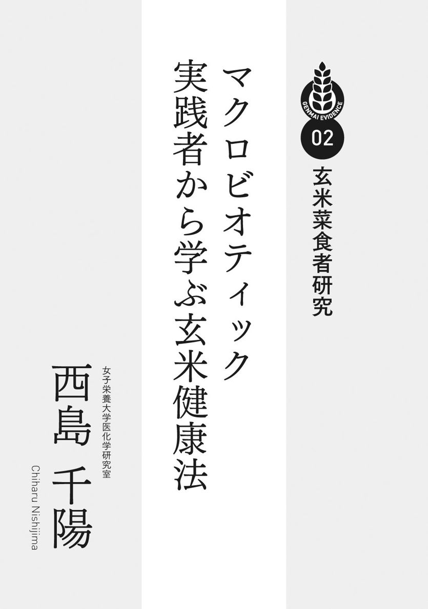
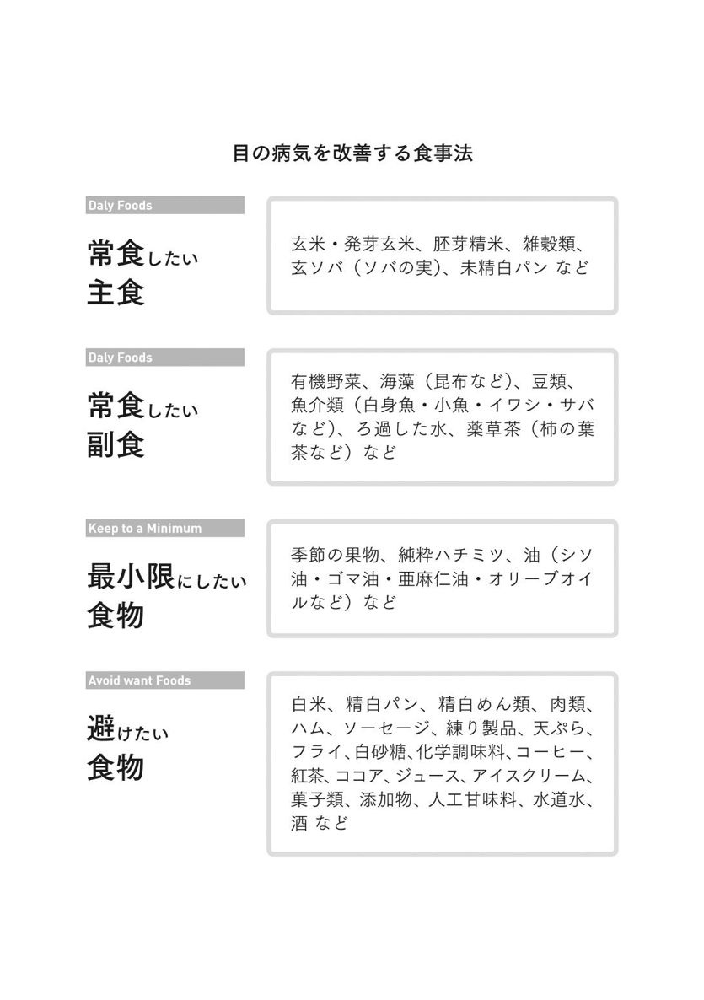

| 玄米のエビデンス (veggy Books) | |
| Unknown | |
| (2015) | |
はじめに
今どき、食糧難などという話は他人ごとのように感じる人がほとんどでしょうが、戦後の食糧難時代に育った日本人は、銀シャリといわれるような白い飯を食べるのが夢でした。
たしかに、にぎり寿司やうな丼など白いごはんとの相性はとてもよく、味を引き立てるものです。しかし、明治以来の兵隊さんに白いごはんを食べてもらおうという善意が、大勢の脚気患者を生み、日清、日露戦争では脚気による死亡者の方が戦死者を上回るということになりました。玄米から精白により糠層を取り除いてしまったために、ビタミンやミネラル不足になってしまったのです。
日本人は弥生時代から２０００年以上にわたって、米をつくり主食としてきました。稲作にからんだ神事や祭りは全国にあります。田をつくり、灌漑を整備して田植え、草取り、収穫まで村中で共同体として働くなかで、日本人の互助の精神やゆずりあいの意識が作られてきたのでしょう。天皇陛下も宮中で米作りを続けられ、瑞穂の国といわれるように国民皆が米をたべて幸福になれるように祈られてきたのです。
米は日本人にとってエネルギーのもとですが、最近の機能性食品の研究から玄米の糠層には健康にとって予想以上に効果のある物質がふくまれていることがわかってきました。それらはがん予防、糖尿病や高血圧のような生活習慣病予防、認知症予防など多くの病気を予防する作用をもっていたのです。体験に基づく玄米の健康への寄与は石塚左玄にはじまる食養会や、二木謙三による日本綜合医学会で薦められてきましたが、最近の科学的実験やヒト臨床試験によって、科学的に証明されてきました。
さらに田んぼの生態系への効果もわかってきました。自然農法で栽培される田にはカエルやドジョウ、トンボなども戻ってきて豊かな自然があります。豊かな自然がこどもを健全に育てることは食育でも証明されています。人のこころはそのような癒し効果をもつ自然の中でしか正常に育まれません。有機玄米食は作り手の農家と都市の消費者をつなぐ絆になっています。
本書は玄米食を薦め、その効果を体感してきたそれぞれの分野の医師に体験例をもとに記述していただきました。病気は病院にいって薬でないと治らないと信じこまされている人がほとんどでしょうが、食を正すことで未病を治せる、ということを知ってほしいと思います。正しい玄米・菜食を基本食とした日本食こそが健康長寿に生きて人生を全うする最善の道です。
日本綜合医学会会長
公益社団法人生命科学振興会理事長
渡邊 昌
医師たちが認めた「玄米」のエビデンス 目次
01 歴史・機能栄養学
渡邊 昌 日本綜合医学会会長 公益社団法人生命科学振興会理事長
実際に玄米の食事をすると、栄養学的に必要な栄養素は摂れるのか
02 玄米菜食者研究
西島 千陽 女子栄養大学医化学研究室
玄米食は短命？／ 日本の伝統食は玄米菜食
マクロビオティックの意味／マクロビオティック実践者は健康状態が良好
「主食」の割合？／日本人の食はビタミンＢ群、マグネシウム、鉄、食物繊維が足りない／玄米で疲れ知らず／玄米食と鉄分／骨の健康！ マグネシウムにも玄米／最も補給したい、食物繊維
調味料の使用を抑え、間食回数を減らす／良く噛む習慣で、肥満防止／早食いは、食べ方の習慣よりも選ぶ食品のせい？／良く噛む習慣で、味覚発達／カロリー制限食でアンチエイジング／ガンマ・オリザノール
ごはん食は糖尿病のリスク？／玄米は血糖にも安心・安全／糖尿病予防にも玄米を
03 小児疾患
王 瑞雲 東診療所所長
「生きるための食べもの」を知る。一人ひとりが自立する気構えを
04 がん
島村 善行 島村トータル・ケア・クリニック院長
玄米を毎日の生活に取り入れるためのお手伝い
歯を見ればよくわかる、理想の食事のバランス／考古学的視点から理想の食事を考える／代謝障害が認知症やがんを発生させる
アメリカ政府が証明。和食は世界一健康的な食事／食と健康に対する考え方
私の医療・介護と玄米との関わり／玄米菜食料理の供給体制／私たち夫婦の実体験／老人保健施設食に玄米菜食を採用したワケ
05 調理
平川 あずさ 公益社団法人生命科学振興会
もっちり系？ さらさら系？ あなたは何派
06 緑内障・黄斑変性症
山口 康三 回生眼科院長
07 糖尿病
益崎 裕章 琉球大学大学院医学研究科教授
玄米有効成分、γ−オリザノールが担う食行動変容と代謝改善効果
高脂肪食に対する依存性と脳内報酬系 ～玄米を活用して〝満足しない脳〟を〝足るを知る脳〟に変える～
08 うつ・認知症
芦刈 伊世子 あしかりクリニック院長
認知症予防のための食事（栄養）／うつ病状態が食養で早く回復した事例について
09 不妊症
出居 貞義 大宮レディスクリニック院長
白米vs強力粉vs玄米／玄米と全粒粉
貧血を軽んじないこと／玄米のフィチン酸や食物繊維で貧血にはならない
10 腫瘍病理学
森 秀樹 岐阜大学名誉教授（前岐阜大学学長）
久野 壽也 名古屋市立大学大学院 医学研究科准教授
胚芽の大腸発がんに対する影響／フェルラ酸の発がんに対する影響
大腸発がんに対する影響／肝発がんに対する影響／食道発がんに対する影響／胃発がんに対する影響／膀胱発がんに対する影響／肺発がんに対する影響／膵発がんに対する影響／自然発生腫瘍に対する影響／がん予防研究から
日本古来の食養生
食生活は私達の健康にむすびついています。戦前は長寿を誇っていた沖縄が占領下で米国式の食事に慣れ、たちまち長寿県から滑り落ちたのはよい例でしょう。地球温暖化によって小麦の収穫が落ちることが予測され、人類の主食はコメに頼る時代もやってきそうです。
日本では江戸時代から貝原益軒にみられるような食養生という観念があり、国民の健康に大きく貢献してきました。明治に入ってからも石塚左玄のように食の重要性を唱える医師が現れ、「食養会」という大きな組織をつくって啓蒙運動も行いました。一方、明治維新以来、西洋科学の流入とともに医学・医療はドイツの学問体系をとることになり、東洋医学的なものは一切排除されたのです。
栄養学に関してはエール大学に留学した佐伯矩が帰国後に栄養研究所をつくり、国立栄養研究所となりました。ここに食養生と西洋栄養学の二つの流れが生じましたが、前者は玄米・菜食を重視し、後者はたんぱく質や３大栄養素のバランスを重視した流れといえます。いわば前者はビタミン、ミネラルやその他機能性物質などミクロ成分の重視、後者はたんぱく質、糖質、脂質のマクロ成分の重視といえます。
玄米のよさを説いた石塚左玄を忘れるわけにはいきません。
石塚左玄は江戸末期の１８５１年（嘉永４）に福井藩の石塚村で漢方医、石塚泰助の長男として生まれました。左玄は５歳の時に腎炎にかかり、慢性腎炎によって晩年は闘病生活を送る破目になりますが、それが食養生への道に進ませたともいえます。12、13歳のころにはすでに漢方の治療をかなり分かっていたようですが、明治元年18歳のときに福井藩医学校に勤務し、蘭学で解剖学、理化学、動植物学などを学びました。明治４年に上京し、翌５年に東京大学南校科学局で御雇いになりました。半年後に医師と薬剤師の資格を取得して、文部省医務局御雇いとなり、明治７年陸軍の軍医試補となったのです。その後はずっと陸軍の軍籍にありましたが、入隊後１８７６年に『検尿必携』 、『鑑薬精義』、１８８０年に『飲水要論』、 １８９４年に『飲食品化学的塩類論』 と矢継ぎ早に啓蒙書を書いています。
明治26年（１８９６）に食品のミネラルをいろいろ測定して「化学的食物塩類篇」を発表、明治29年には陸軍少将となり、陸軍薬剤監に任じられましたが、日清戦争に従軍中に幼小時より患っていた慢性腎炎が悪化して、入院し、それを機に退役して予備役に編入されました。
明治27年（１８９４） 薬学会誌に、「人類は穀食動物なり」、「飲食物化学塩類論」、「飲食物の加里塩は酸素吸収の媒介者なり」を矢継ぎ早に発表、翌年、薬学会誌に、「食物中の夫婦アルカリ性質論」、「入浴は亦人体の脱塩法なり」を発表して彼のミネラルを重視する考えはひと通りまとまったように見えます。40歳が不惑といわれた時代で43歳の時でした。
１８９４年（明治27）年７月から翌年３月まで続いた日清戦争が一段落したためもあるでしょう。左玄が退役後の明治29年、左玄46歳の時に発行されたのが食養道の基礎ともいうべき「化学的食養長寿論」です。これは博文館から菊版のサイズで出版されましたが、５４７ページの大著です。
ミネラルを重視した栄養学
当時、流行していたドイツ流の栄養生理学はたんぱく質、脂肪、炭水化物の３大栄養素の比率を問題としていました。栄養学にかかわる研究者は獣医が多く、家畜をいかに太らせるかというのが大きな問題だったからです。石塚左玄は食物の化学的成分のなかでも無機塩類に注目し、なかでもナトリウムとカリウム比に着目して、これが夫婦（陰陽）一対となって食物の性質を決めていると考えました。食物中の飽気をカリ塩と呼び、塩気をナトロン塩と呼んでこの二者をあわせて夫婦アルカリと呼んだのです。カリ、ナトロンはドイツ語であり、ラテン語のカリウム、ナトリウムに相当します。塩をつけているのはカリウム化合物、ナトリウム化合物という意味です。カリ塩は穀類、菜類、果実類など、また、海草類、藻、海苔類など、すべて、土、海・川などの魚類や貝類、全ての鳥、獣の肉類および卵類の、いわゆる動物性食品類の異名と理解されたい、と断っています。
食物中のカリウムとナトリウムを測定すると、灰分中のナトロン１に対し、カリの割合は 鱈、鶏卵、コブは１以下であり、エンドウ豆や大豆は30、40もあります。濃度順にならべると玄米はちょうど中間あたりで、濃度差はカリが０・２、ナトロンは０・０４なので差は０・１６となりこれを中庸の釣り合いとしました。これを差数として陰陽の判断にも用いています。大豆は１・２６～０・０３＝１・２３となり、より陰性という解釈です。
鶏卵と昆布はたんぱく質の量はまるで違いますが、人体に及ぼす作用はほとんど同一といいます。たとえば浄瑠璃をかたる芸人は高座に上がる前に生卵を吸いますが、もし卵がなければコブ湯を飲んで音声を調節します。発声への働きは同じというわけです。ナトロンとカリウムの比率は計算では１対０・７６、コブは１対０・６７でほとんど同一だからでしょう。
明治31年には「通俗食物養生法―食養体心論」を上梓しました。明治40年には左玄を中心として「食養会」が発足して、「食養雑誌」が創刊されました。この雑誌によって食養を普及しようとしたのです。欧米に心酔する医師が多い中で、左玄の建設しようとしたものは東洋医学とその伝統的な生活、衛生法を新時代の化学の論理で基礎づけ、「素問」のいう「いまだ病まざるに治す」という最高段階の医学を目指したのです。明治７年に医師の学ぶ学として西洋医学のみが公認され、それ以後、漢方医師は和漢医師継続の請願を繰り返しましたが、議会開設後の明治28年に提案された医師免許規則改正案は27票差で否決され、漢方医の存続は危機的状況になりました。
左玄の思想にシナ最古の医学書の「素問」が影響していたことは間違いないでしょう。身土不二のもととなった、風土別の食養論はシナ最古の医学書「黄帝内経素問」の異法方宜論にあり、そこではシナの東西南北、中央の５地帯の風土と食習慣、かかりやすい病気と、それに対する医術の発達が論じられています。東方は海に面し、魚がとれ、風土に塩気が多く、魚は人体内に熱気を生じ、塩をとりすぎると血が粘り、顔色は黒く、はれものができやすい。西方は砂漠地帯で獣肉を常食し、病気は主に体内の臓腑におこり、北方は高原地帯で乳製品を常食し、臓腑が冷える、と論じられています。
カリウム、ナトリウムを陰陽に対応させて無双原理を発展させた桜沢如一は「左玄が如何にしてこの化学的陰陽代表者を発見するに至ったかということは私にとっても疑問である。彼の伝記を書いた時、彼の残した一切の参考書類を克明に点検したが陰陽の代表的ナトロン・カリ発見の顛末はとうとう不明に終わった。しかし、彼の時代の人々は幼小、少年時代から四書五経によって、鍛えられているので、化学を研究する間に自ずから無双原理を振りかざしていたのかもしれない」と言っています。桜沢は自分のひどい結核を左玄の食養生で治したので尊敬の念が深かったのです。
石塚食養所と食養会
明治31年（１８９８） 左玄は大衆向けの『通俗食物養生法―一名・化学的食養体心論』を出版しました。この頃には、東京市ヶ谷の自宅に開いた「石塚食療所」に全国から患者が集まりました。自宅を兼ねた石塚食養所の診察風景はとてもユニークでした。食養式の望診法ともいうべきものでしたが、門前市をなすにぎわいで一日百人に制限せねばならなかったほどでした。
明治40年（１９０７）56歳の時に「食養会」を創立。信奉者には三井八郎次郎や増田孝のような華族や乃木希典のような陸軍高官、政治家や財閥なども多くいました。 しかし、２年後の明治42年（１９０９）10月17日、幼少期からの腎不全により鬼籍に入ったのです。中国戦線でも腎不全で戦列を離れなければならなかったほどの腎不全を抱えながら、よく58歳まで生きられたと感嘆します。
食養は左玄亡きあと、桜沢如一によって世界に広められました。桜沢は子ども時代から病弱であり18歳のときに肺と腸を結核に侵されましたが、左玄の食養でもって命拾いして食養の効果を実感して世界にマクロビオティックとして普及した人です。食養会を再興した桜沢如一は左玄のことを次のように述べています。
「彼は明治年間において最も徹底的に非日本精神に対抗し、最も壮烈な闘いを戦い、かつ最も悲惨な最期を遂げた唯一人の精神的戦士である。彼は東洋独特の幽玄なる哲学を西洋流科学用語をもって解説した一人者である。」
左玄の生きた明治時代はヨーロッパ文明一辺倒の時代でした。その中にあってヨーロッパ文明を批判し、生命の問題を生物学的に、民族的に、風土的に幅広い視野にたって大観し、思索したのが左玄でした。栄養学の創設者である佐伯矩は左玄の評判を当然聞いていたでしょうが、おそらく科学的ではないということで無視したのでしょう。しかし、後に左玄の食養会を継いだ二木謙三東大教授との間で「玄米・七分搗き米論争」が起きることとなるのです。
石塚左玄の食養学
左玄の唱えた食養は、日本綜合医学会の流れをくむ沼田勇によって、次の五つに要約されています。
① 食物至上論......食物が生命に変わる。したがって健康も疾病も食物が決める
② 人類穀物動物論......人間は、肉食でも草食でもなく穀物食である
③ 身土不二論......その土地でとれるものを旬を守って食べること
④ 一物全体論......食物は、皮なども剥かずその全体を食べること
⑤ 陰陽調和論......陰〈カリウム〉と陽〈ナトリウム〉の調和がとれるように食物を選択する
左玄の、食事が人をつくり、健康や病気にも密接にかかわっているという考えは、左玄が「黄帝内経素問」などの影響を受け、さらに思考を深めた結果と思われます。
幼い頃はカリウムの多い食事をとることで、智と体を養成する。思慮や忍耐力や根気を養う。また道徳心や思慮を必要とする場合もカリウムの多い食事にする。社会人に近づくにつれ、ナトリウムの多い食事にしていくことで、才と力を養成する。ただし、ナトリウムが多すぎれば、命ばかりか身も智恵も短くなってしまう。バランスが崩れすぎれば病気にもなるので中庸を保つように食養する。カリウムが多くナトリウムが少ない食事によって智と才の中庸を得て、穀食動物の資質を発揮するとしたのです。
また、左玄は、「郷に入りては郷に従う食養法を実行すべき」と強調していましたが、左玄の死後、食養会会長となった西端学がそのようなことは仏教で「身土不二」と教えられていると聴き、「身土不二の原理」と呼びました。また、「春苦味、夏は酢の物、秋は辛味、冬は脂肪と合点して食え」と旬の食物の大切さを説きました。左玄の本にはこのように歌がちりばめられ、わかりやすく書いてあります。その土地の季節のものを食べる事が、最も健康的で栄養が豊富である。それが自然であり、そこに住んでいる人に一番優しい食になるというのです。これは現在の「地産地消」にもつながる言葉でスローフードともいえます。
石塚左玄の死後、食養会は一時衰退しましたが、自分の結核を食養で治した桜沢如一は食養の内容を「正食」とし、これを世界に広めようとパリに移住して活躍しました。パリではギリシャ時代からいわれる「マクロビオティック」と呼称し、自分の名前も発音しやすいようにジョージ・オオサワとしました。桜沢の活躍でお茶や禅のような日本文化もフランスに伝えられました。桜沢の弟子は世界に送りだされ、米国へ向かった久司道夫はナチュラルフードを重視して成功させています。
一方、栄養学の提唱者である佐伯矩は科学をベースに栄養学を組み立てましたが、石塚左玄は食事療法が中心といってよく、西洋医学と東洋医学のような違いが感じられます。石塚左玄の支持者は政界、財界に多く、駒込病院院長から東大教授になった二木謙三など医学者も含まれていました。特に西洋医学の治療で治らなかった難病が左玄の食養生によって治癒した者は、その時点で信奉者になったようです。二木は日本綜合医学会の初代会長です、玄米食を薦め、玄米の二木といわれました。
玄米論争
二木は「身土不二」（任天居）を昭和４年（１９２９）に発刊しましたが、関東大震災後の主食をめぐって栄養研究所の佐伯矩のグループと玄米・七分搗米論争がおきました。佐伯グループはさまざまな玄米の炊き方をし、４人の健康男性に食させて、炭水化物やたんぱく質の粗吸収率を算出し、玄米は消化が悪い、と報告したのです。昭和６年ころには新聞紙上をにぎわす大論争になりました。二木は矢継ぎ早に「完全営養と玄米食」 昭和７年（１９３２）、「完全にして正しき食物」（大日本養正会）昭和７年（１９３２）、「なぜ玄米でなければならぬか：栄養上経済上より見たる玄米白米等の比較優劣図表並に其の解説」（大日本養正会）昭和９年（１９３４）などを上梓し論戦を張りました。
一方、昭和５年（１９３０）に出版された佐伯矩の『栄養之合理化』では、白米では便の量が少ないので消化吸収の効率は高いが、糠に含まれていた栄養分がなくなっているので副食の組み合わせに注意しないと脚気になると説明しています。そして、佐伯は七分に搗いた米を「標準米」として普及させようとしました。
私は佐伯の玄米、７分搗き米の原著論文の詳細な記録から、データベースをつくって再解析しました。炭水化物の吸収率は96～98％でほとんど差がなく、たんぱく質が玄米の65～70％に対し、７分搗き米が10％程度上回るという結果を得ました。しかし、これは窒素量を測定して換算しているため、便量が多ければ窒素量が多くなる。つまり玄米食が１００ｇほども便量が増えるのは腸内細菌や宿便の窒素も測定したため高くなったと思われ、この結果からは便の量が少ないので消化吸収云々の正当性はないことがわかりました。
現在、玄米菜食を実践している団体には、桜沢如一が食養会を逐われてから活動しはじめ、左玄の理論を発展させたマクロビオティックの関連団体や、１９５４年に二木謙三が創設し初代会長となった日本綜合医学会があります。
玄米の健康影響
日本人ははるか昔の弥生時代から米を食べてきました。室町時代に入り精米技術が酒造のために中国から伝わりましたが、普通のコメの食べ方は玄米でした。このような食生活は日本人の消化機能や腸内細菌叢を特徴付けてきたと思われます。江戸時代に入り侍は白米を食べるようになりましたが、庶民は雑穀米でした。江戸勤めの侍が精白米を食べ脚気になるのを江戸患いと言っていました。明治になり精白技術が進み、軍隊でも精白米が供されるようになり、それとともに脚気の頻発に悩むことになりました。海軍は高木兼寛の英断でパンあるいは麦めしを採用し、日清、日露戦争でもほとんど脚気患者がでませんでしたが、陸軍は軍医総監森林太郎の明治六年制定の「一日六合の白米」という兵食にしばられ白米にこだわり、日露戦争では脚気による死者の方が戦死より多かったといわれます。
玄米を薦めた二木謙三は「玄米二十徳」を述べています。
玄米二十徳
一 たんぱく質が白米より20％多い。
二 脂肪に富んでいる。
三 炭水化物は少しも劣らない。
四 無機質が多い。
五 ビタミンに富んでいる。特にＢが多い。
六 ジアスターゼがある。糠層に多く、消化を助ける。
七 繊維質皮質が多い。便通をよくする。
八 完全食である。白米で鶏を養えば死ぬ。
九 玄米は生きている。白米は搗かれたときから死んでいる。
十 玄米は変質しない。果実でも皮を剥いておくと直ちに黴菌が付くのと同じ。
十一 味がよい。玄米は舌にのせたときは甘くないが噛んでいるうちに甘味やたんぱく質の味や脂肪の味などなんともいえぬ味が生まれてくる。
十二 咀嚼のよい習慣がつく。
十三 食糧が自然に減じてくる。
十四 玄米にすれば一日２食にすることが自然にできる。
十五 玄米は炊事が楽である。硬かったら二度炊きでき、炊き損ねがない。
十六 副食物は簡単なものだけ玄米に適する。複雑な味のものにすると玄米の味が消えてしまう。
十七 嗜好が簡単になる。美食を忌むようになる。
十八 玄米は小児でも病人でも婦人でも適用が自由で広い。
十九 健康度が増す。抵抗力がつき寿命が延びる。
二十 経済が楽になる。
二木謙三は秋田佐竹藩の藩医、樋口家に明治６年（１８７３）１月10日８人兄弟の３番目に生まれ、生まれた時には１年ももたないと言われる程の虚弱児でした。３歳の頃、同じ秋田藩の藩医、二木家に養子に入り、以後二木姓を名乗っています。体は元来弱く大学進学後も、「俺は一切ものを忘れ、何も分らなくなってしまった」と語るほどのひどい神経衰弱を患い、20歳まで心身ともに数多くの病気に悩まされました。徴兵検査のときに虚弱な病身を指摘され、軍隊の黒い麦飯を食えと一喝され、その翌日から麦飯食を始めたのです。これが食養生への転帰となり虚弱な病身から開放されました。
二木自身は48歳（１９２１）より、１日１食、玄米、塩なし、油なし、火食なし、動物不要の食事を実行し、これでいけるという実感をもてたのでしょう。伝染病を研究し、また食養生に加えて腹式呼吸法などを取り入れた「二木式健康法」を提唱しました。食事法としては左玄伝来の玄米菜食による完全食、動物の肉は少なくし、野菜は二分間煮で食べることを提唱しました。二木は、健康を維持するために必要な栄養素を豊富に含んだ食品として玄米を推奨しました。玄米から糠皮を精白した白米は死んでおり、ビタミンやミネラルも減るために、不完全となるので肉食などの副食を必要とし、完全食であれば小食で済むとしたのです。
二木は戦前に首相であり戦犯に問われた平沼 騏一郎のあとをうけて、73歳になった昭和21年から 昭和39年（１９４６～１９６４）まで修養団団長を務めたことはあまり知られていません。これは大正初期に作られ、子どもを対象にした自然体験キャンプや海外の恵まれない子どもたちとの交流活動のほか、家庭教育や社会人教育など多彩な事業を展開している団体でした。二木は日本の医学界の重鎮であったと同時に、民間療法一般に理解があり、社会運動にも貢献したのです。
亡くなる前には全国の弟子たちを電報で呼び集め、全員が揃ったところで「それじゃあ、君たち、最後の息をするから、さようなら」と言って世を去ったといわれています。昭和41年（１９６６）４月27日、94歳、老衰による死でした。幼少時から病弱で腎臓も悪かったのに玄米食で長寿を全うしたのです。奇しくも桜沢は数日前の４月24日に死亡しており、後を追ったかのような死でした。
実際に玄米の食事をすると
栄養学的に必要な栄養素は摂れるのか
二木謙三の玄米推奨は体験が元となっているだけに説得力があります。そこで思い出されるのが宮澤賢治のアメニモマケズという詩です。彼は東北の花巻にあって学校の先生をしながら農民の生活向上に貢献しました。一日玄米４合と味噌と少しの野菜を食べ、と書いてあり、昔の東北は貧しかったからそのような食事だったのだろう、と思っていました。東北大震災のあと、現地に入った栄養士がたんぱく質が足りません、肉も卵もありません、というので賢治の食事でどれくらい栄養が摂れていたのか気になって計算してみました。
そうしたら驚いたことにエネルギーは２１００キロカロリー、たんぱく質は44ｇ、脂質18ｇ、炭水化物が４５７ｇと極めて健康食だったのです。しかもビタミン、ミネラルは厚生労働省の食事摂取基準の数倍も摂れていることが分かりました。（Ｐ33図）
治療食としての玄米
さらに玄米を治療食として積極的に利用したのが沼田勇です。沼田勇は１９１３年茨城県、今の日立市生まれ。大学卒業後、戦前は北里研究所の生化学室に属し睡眠３時間の猛烈な研究生活を送り、１９３５年にビタミンＣ酸化酵素を発見。１９４１年にはビタミンＢ１分解酵素サイアミナーゼ（アノイリナーゼ）を発見しました。また１９４２ 年にはシステイン存在下で行うグルタチオン分析法を発明。戦争の気配が濃くなった１９４４年には野草６００種の栄養分析を行っています。１９４４年２度目の招集により中国南京の研究部隊に勤務となり、炊飯米の長期保存法などを研究しました。
１９４６年に軍医小尉として防疫官の任務につき、１９４７年夏に中支派遣軍１５０万人と一般邦人50万人の引き揚げを担当することとなりました。上海、漢口の夏は毎年コレラが流行していて、ある日下痢をしていた兵が死亡したとの一報があり、検便をしたら24名のコレラ患者を発見。不衛生な居留地のこと、直ちに１００名以上の衛生将校が召集され対策会議がもたれましたが、東大、京大の細菌学教授の佐官の発言はなく、司会の新谷大佐からの突然の指名が沼田になされました。沼田は胃の生理から説明。コレラ菌を殺す酸度を保つため、食後、食事中に湯茶を飲ませないことを提案し、その結果、１名のコレラ、赤痢患者も出さずに、全員を無事内地へ帰国させることができたのです。これは２００３年にＷＨＯによって沼田法として採用され、イラクでのコレラ予防などに成果をあげました。
戦後は疎開していた伊豆大仁で開業。戦前の研究生活、中国での体験から食事の重要性を体得し、幕末から明治にかけて食生活の指導により病気を治した石塚左玄を信奉して、自然食運動や玄米食運動を推進しました。１９５４年、二木謙三らと日本綜合医学会を創立。１９７８年４月には30数年間の研究成果を纏めて「病は食から」を出版しています。これは食事療法の真髄を示すものです。
沼田勇は２０１０年97歳の死まで現役の達人でした。大仁に開業して以来60年あまりを「禅と食養、俳句」に全力投球し、永平寺で講演したこともあります。大仁を訪ねた禅僧、俳人も多く、桜沢如一がパリの拠点を託した禅僧弟子丸泰山もよく逗留しました。大仁の記念館には絵や揮毫も展示されていますが、毎年の年賀状に自筆の干支が描かれています。彼の画才は北里研究所時代に描かれた漫画風の生化学室のメンバーという絵にも伺えます。研究生活、南京での生活、引き揚げ時の防疫将校としての活躍、戦後の大仁でのゆったりとした時の流れが沼田勇という巨人を作り上げたのでしょう。百寿まで数ヶ月という時に眠るように大往生を遂げました。
玄米粉をペースト状にして利用したのは甲田光雄です。甲田光雄は大正13年（１９２４）東大阪にあった五千坪の大きな農家に女３人、男２人の５人兄弟の末っ子として生まれ、父母ともに40歳代の時に生まれた子であったので、みんなに可愛がられ、６歳まで母親のおっぱいを飲んでいるような甘えん坊でした。小学校の時は皆勤賞をもらったほど健康でしたが、甘いもの好きで虫歯が多く、初老のころにはもうほとんど総入れ歯でした。中学生になって胃腸病になり、慢性肝炎、胆のう胆道炎、十二指腸潰瘍などの病状が良くならず２年休学して療養しました。１９５０年に阪大に入院して半年経っても良くならずに、医学部卒業までに又２年も休学したのです。「いつまでもこんなところにいるよりも、いっぺん家に帰ってのんびり養生したらよいのと違うか」と主治医から言われ、民間療法や東洋医学を試みました。後に「私は50年以上前に慢性肝炎で命がないと言われ、困っていましたところ11日間の水だけの本断食で死ぬどころか、元気になって山を駆け下りてきましたからそれからもう断食マニアになり、治療も50年余り、断食・少食を中心にした治療で成果をあげてきました。」と言っています。断食を体験して元気になり、断食道場で読んだ西勝造の本に一条の光を見出したように感銘を受けて、西式健康法の勉強・研究・実践を始めたのです。自分の体験と照らし合わせると納得がいくものであったために西式健康法を自分の診療に大きく取り入れ昭和33年（１９５８）33歳の時に東大坂の八尾で開業し、断食と食事療法で多くの難治患者を救いました。
甲田の健康法は「各人の症状に応じ、食事を如何に少なく摂るか、食べたものを如何にして滞りなく完全に排泄するか」というものです。腸管内に停滞した宿便が盛んに腐敗発酵を繰り返す過程でガンを始め色々な病気の原因となる毒素を産生するので「宿便は万病の元」と考え、薬も注射も一切使わずに治療しました。
玄米食は腹もちがよく、食物繊維も多いので便秘解消にはもっとも有効です。また、ほとんど完全栄養食になるので肉などは食べたくなくなります。牛肉１㎏を得るのに穀類を７～10㎏も食べさせねばならず、広大な牧草地は世界の森林破壊の原因となっているので、牛肉を食べないことは地球環境にとっても望ましいことです。
玄米の機能性
日本食品標準成分表に記載されるご飯の栄養価は、生米の価からの計算値であり、実際に炊いたお米を測定したものではありません。栄養学的に米は優れた特性をもっていますが、その機能的成分についてはまだ未測定の部分もあります。私たちは玄米、胚芽米、精白米などについて、生米、通常の鍋による炊飯、加圧鍋による炊飯を行い、各種栄養素、ミネラル、ビタミン、抗酸化価などを比較検討しました。その結果、食物繊維やミネラルは玄米飯がもっとも高く、抗酸化価（ＡＯＵ）も玄米が高く炊飯後も半分程度残ることが分かりました。
玄米の組織構造は、外側から外糠層（果皮・種皮）、内糠層（糊粉層）、澱粉層となっており、果皮から糊粉層までの「糠層」は重量比で玄米１００％に対し５～６％、そこに胚芽２～３％を足した、約８％がいわゆる「糠」ということになります。ここにビタミン、ミネラルなど玄米の機能的栄養素のほとんどが含まれています。糠を捨てた精白米では玄米とは太刀打ちできません。栄養的には玄米がもっとも優れた完全主食といえます。
米糠は油成分と脱脂成分に分けられます。
油成分にはガム、ワックス、重質油、軽質油と分かれ、ガムにはレシチンやセラミドなど、ワックスには長鎖脂肪酸、重質油には脂肪酸に加え、γ−オリザノールやフェルラ酸など、軽質油にはトコフェロールやスクワレンが含まれます。脱脂成分にはＧＡＢＡなどのペプチドやフィチン酸、マグネシウムやカルシウムなど多くのミネラルが含まれます。
フェルラ酸は、抗酸化活性や乳がんや肝臓がんに対する抗腫瘍活性、コレステロール低下作用、抗炎症活性など様々な活性を有していることが報告されています。
また、玄米を発酵させることで更に多くの機能性物質が生まれてきます。玄米の発酵過程で、不溶性の結合型フェルラ酸類が麹により加水分解され、遊離型フェルラ酸類の含有量が増加することが明らかとなりました。
発酵が進むにつれ、多くのジペプチド及びコウジ酸誘導体、フェルラ酸４−ビニルグアイアコールなどの化合物の生成がおこります。ビタミンＢ２、パントテン酸、ビオチンの遊離型比率が高くなり、生体利用率が低いビタミンＢ２を遊離型で多く含有することは、食物の消化力が低下した場合のビタミン吸収に有利です。 発酵によってビタミンＢ２は21・３倍、ビオチンは８・８倍、 ビタミンＢ６は５・８倍、パントテン酸は２・５倍、ナイアシ ンは２・２倍に増加することが明らかにされました。
玄米反対論者の最大のよりどころが玄米に多いフィチン酸が鉄分などのミネラルの吸収を阻害する、あるいは残留農薬が多いということです。また、胚芽に多く含まれるアブシジン酸は、ミトコンドリアを障害し、フィチン酸はミネラル吸収を阻害するという説もあります。これらは細胞や動物実験の結果が多く、ヒトでは証明されていません。
玄米を食べる方法は鍋で煮たり、煮た後で蒸したり、二度炊きをしたり、時代によって様々です。このような炊き方ではアブシジン酸やフィチン酸の類の大半が消失します。一方、リンやカリウムは玄米ごはんでは精米ごはんの約４倍、胚芽精米ごはんと比べると約２倍の量を含んでいて過剰摂取が問われています。リンは６−リン化フィチン酸による摂取ですが一晩水につけて炊く方式だとフィチン酸濃度が減少するので問題ないでしょう。また、一晩水につけておくことで胚芽米のように遊離脂肪酸やビタミンＢ６、ＧＡＢＡの増加もみられ、調理方法により機能性成分を増やす炊き方もできることが分かりました。農薬たよりの米作りでは確かに糠部分に残留農薬は多くなりますが、最近では有機農法栽培の玄米が増えています。これにより本当のコメのうまさを味わってほしいと思います。
コメ食わぬ人々
コメは世界の７割の人たちの主食となっています。年間生産量は６億トンくらいですが、地球温暖化で小麦の生産量が落ちることを考えると、コメが主要穀物とならざるを得ません。コメの９割以上はアジア諸国でつくられていて、主食としてのコメが必要なエネルギー源となっているのみか、たんぱく質や脂肪の摂取源となっている国も多いのです。
ところが、日本のコメの消費量は戦後減り続け、コメ余りから生産量も落ちています。１９６７年の１４４５万トンをピークにだんだんと減少し、２００９年には８４７万トンとなってしましました。
残念ながらこの現象は、日本の米政策と深く結びついてきたのです。
戦後、食糧難となった日本は米の増産を掲げ、政府がすべての米を買い上げる食糧管理制度のもとで１９６０年代には生産が需要を上回るようになりました。しかし、政府の財政負担の増加や食生活の変化による米消費の減少から１９７１年度から生産調整（減反）が始められたのです。１９９３年は冷夏と長雨の影響で凶作となり、平年に比べて（作況指数）74％しか収穫できず、深刻な米不足となった年でした。この時、政府は中国から１１０万トン、タイから75万トン、アメリカから50万トン、オーストラリアから25万トン、合計２６０万トンの緊急輸入を実施しました。この時に輸入したタイの香米が臭いと悪評でした。日本人は日本コメだけがコメと思ってきたのですが、世界には様々なコメがあります。
コメの消費量は１９６２年の１１８・３㎏／年からだんだんと減少し、２００９年には58・５㎏／年と半減しました。これを、１日の消費量にすると１９６２年が３２４・０ｇだったのに対し、２００９年は１６０・３ｇとなっています。茶碗一杯が約１５０ｇなので、現在は１日に茶碗一杯ちょっとしか食べていない計算になります。

自然との共生
「玄米と味噌と少しの野菜」といった宮沢賢治の食事は栄養的に完全食であることは前述しました。玄米を主食とする少食が地球を救う、といって地球環境も考えた論陣をはったのは断食療法で多くの難病患者を助けた甲田光雄です。現在の地球は10億人の飽食と10億人の飢餓人口を抱えているといわれます。私たちは１年中ハレの日の食事をするようになって生活習慣病の増加を招いてしまいましたが、もう一度人類の将来を考えたいものです。
食イネ科植物のルーツは１億年以上前で、稲の原型は５０００年～６０００年前に生まれたとされています。数千万年の間、水辺の酸性土壌を好んで生きてきたのですが、そのような所で耕されているところはありません。またイネは鵺的性質があり、陸稲にも水稲にもなれる。しかもジャポニカ種の稲は北海道から沖縄まで、標高も０ｍから１０００ｍくらいまで日本全土で育ちます。人間が過剰なほどに肥料を与えると、根の長さも短く、分枝根の数も少なくなります。自然農法を研究しているグループは冬期湛水、不耕起農法を開発しました。
不耕起で肥料も与えなければしっかりと根を伸ばし、倒伏や冷害にも耐える稲になります。やがて冬期にも堪水し、苗を５葉になるまで育苗して機械植えができるようになりました。平成５年にはこの研究会のメンバーは１０００人を超すまでになりましたが、そこに大冷害がきたのです。作況指数は東北全体で56、県別にみると青森28、岩手30、宮城37、秋田83、山形79、福島61で水稲被害額は４６９０億円に上りました。しかし不耕起栽培の稲は開花をしないで太陽を待ち、各地で収穫があったのです。そこでさらなる普及を目指して不耕起栽培普及会が設立されました。しかし、行政や農協の壁は厚く慣行農業の壁は崩れていません。
ところが冬期湛水の不耕起田んぼが増えるにしたがって、底にトロ層ができ、藻が増えて、イトミミズや赤とんぼ、カエル、タニシ、ドジョウ、メダカが見られるようになったのです。白鳥が越冬にくる地もでてきました。とくにメダカは絶滅種が復活したところもあり、小学生が総合学習の一環として田んぼで楽しめるようになりました。都会育ちの子どもにとって田んぼは汚くて臭くていやなところであったようですが、草取りや稲の補植などの作業をした結果、いつの間にか生き物が集まってきたのです。カエルが鳴き、燕が舞って、サヤミドリが湧いて悪臭もなくなりました。子ども達も学校帰りや夏休みにあつまるようになり、不登校の子どもも一緒にあそぶようになり、そればかりか子どもたちが連携をとりあって農作業をこなすようになったのです。担任の先生方も理科、社会、図工の授業を田んぼつくりに関連させて進めることで実地に即した成果をあげることができるようになりました。
東京世田谷の大蔵小学校の先生は「１年間田んぼに接していると、子どもたちがとても穏やかになる」と語っています。子どもは自然と共生することで一番良く育つのです。
平成12年に佐原市を訪れ、不耕起栽培の田んぼに白鷺が舞うのを見た新潟県佐渡島の本間権市村長（当時）は、佐渡トキ保護センターの将来はこれだ、と大決断し、村を挙げて不耕起栽培に取り組みました。その結果は「トキひかり」という銘柄米を産み出し、豊かな自然が戻ってトキが野生化できる環境が整ったのです。
不耕起の田んぼがどうして豊かないのちを産み出し、稲の生育もよいのかを研究していくと、稲の根がながく硬い地中にのびて、それがスポンジのように土壌を理想的に変えることがわかりました。冬期湛水した田の雪の下ではイトミミズやたくさんの微小な生き物が活発に動いています。
田んぼは生物資源型産業の代表です。米余りから休耕田が増やされましたが、放棄田になってしまうとカヤが生い茂り、生き物の種類も少なくなってしまいます。日本のように平地が少ない37万８千㎢の土地に１億２千万近い人が住んでいて、21世紀の国際的飢餓の時代に備えられるのは田んぼと米しかありません。今、外国から輸入している食糧は耕地面積に換算すると１２００万㎢に相当します。日本の田畑は５００万㎢なので海外で日本用に２・５倍もの農地を割り当ててもらっているといえます。内乱や気象災害が起きたらひとたまりもないでしょう。大名の国の大きさを石で表わす制度は１３００年以上前に作られました。一石は１５０㎏で成人一人が一年に食べる量とされます。米を１合、２合と量るのも生活に染み込んでいます。玄米の健康影響が再評価されている現在、豊かな自然を取り戻し、安全な米を得るのに不耕起栽培を広める。それが次世代の子どもたちに残せる最大の遺産となるでしょう。
プロフィール
渡邊 昌（わたなべ・しょう）
1941年平壌生まれ。医学博士。1965年慶應大学医学部卒。大学院修了後病理学講師、アメリカ国立癌研究所病理部研究員、国立がんセンター研究所病理部室長、同学部長を歴任。がんの疫学研究で分子疫学の新分野を開く。1996年からは『環境・食糧・健康』を一体化させた研究に取り組み、現在、統合医療の大学院大学の設立を目指す。1993年WHO記念メダル、1995年日本医師会医学賞、2001年日本疫学会功労賞受賞。著書多数。薬を使わず食事と運動だけで自らの糖尿病を完治。日本綜合医学会会長。公益社団法人生命科学振興会理事長。
参考文献
1．石塚左玄『化学的食養長寿論』 博文館 東京 1896
2．渡邊昌『栄養学原論』 南江堂 東京 2010
3．橋本政憲訳 丸山博解題『食医石塚左玄の食べもの健康法』自然食養の原典「食物養生法」現代語訳 農山漁村文化協会〈健康双書ワイド版 食と健康の古典6〉2004
4．沼田勇『病は食から ―「食養」日常食と治療食』 農山漁村文化協会〈健康双書ワイド版〉東京 2010
5．石塚左玄『通俗食物養生法―食養体心論』 三省堂 明治42年（1909年）
6．桜沢如一『石塚左玄―伝記・石塚左玄』 食養會 1928
7．二木謙三 『完全営養と玄米食』 1932年。21～22、37～38頁
8．二木謙三 『健康への道』致知出版社、2003年2月。36、78～79頁（新紀元社からの初版は1942年）
9．二木謙三『食物と健康』 修養団出版部、大正10年（1921年）
10．二木謙三『身土不二』任天居、昭和4年（1929年）
11．二木謙三『完全営養と玄米食』 昭和7年（1932年）
12．松田誠『高木兼寛伝―脚気をなくした男』 講談社 1990
13．渡邊昌、災害時における栄養・食糧問題―まとめ、板倉 弘重、近藤 和雄、渡邊 昌、日本栄養食糧学会（編）、「災害時の栄養・食糧問題」、 建帛社 東京2011
14．甲田光雄『少食が健康の原点―万物への愛と慈悲がエネルギーを生む』たま出版 1991
15．岩澤信夫『不耕起でよみがえる』（第6版） 創森社 東京 2007

日本の伝統食は玄米菜食
玄米食は短命？
私たち日本人の食卓に白米が上がるようになったのは江戸時代末期から明治時代にかけてで、白米が当たり前になったのは戦後の高度経済成長期からだと言われます。それまでは一部の人を除き、多くは玄米を食べていました。その頃の平均寿命は40歳前後と推定されていますので、現在の半分程の短さです。では、玄米を食べていた人たちは短命だったのでしょうか？ 実際には、大人たちが長く生きられなかったのではなく、医療や衛生状態が発達していなかったため、生まれてすぐに亡くなる子どもが多かったことが平均寿命を引き下げていました。また、冷害による飢饉が度重なったことも死亡率を上げた大きな要因だったでしょう。一方、江戸時代の著名人について見ると、医師の杉田玄白は享年84歳、花岡青洲は75歳、農民だった中甚兵衛は91歳、健康な生活について説いた「養生訓」を記した貝原益軒は84歳と長生きでした。そして、測量家の伊能忠敬が、大日本沿海輿地全図を作成するため、日本全国を渡り歩いたのは55歳からの17年間と言われますから、その活力には驚かされます。
日本の伝統食は玄米菜食
江戸の日本橋を描いた「熈代勝覧」という絵巻物があります。この中には、問屋や八百屋、そば屋等が立ち並ぶ街並みに、人々があふれ賑わう様子が描き出されています。人々をよく見ると、脚気を患った男性が車いすに乗っています。ビタミンＢ１が不足すると起こる脚気は、当時は「江戸患い」と呼ばれ、白米を主食とすることのできた一部の階級に流行したようです。反対に、玄米を主食とした庶民は活気あふれる様子です。盛んに各々の商売を繰り広げ、道行く人や商人仲間に声をかけています。当時の人々の食は、玄米飯と梅干しや漬物、みそ汁が一般的で、そこに時おり小魚を合わせ、まれに卵や鶏肉をほんの少し合わせるといった具合でした。そもそも日本では、６世紀の仏教伝来に伴い、動物の肉を食べることが法的に禁止されていましたので、コメを中心とした菜食が１０００年以上、日本人の命を支えてきました。明治時代に入り、公然と畜産が行われるようになるまでは、現在のように牛肉や豚肉、牛乳、乳製品、鶏肉、卵が食べられることはなく、熈代勝覧の中の人々も、元気の源は玄米飯と塩気を効かせた野菜の副食だったと考えられます。
現在に息づく玄米菜食
マクロビオティックの意味
主食には玄米、副食には野菜や豆類、海藻を主体とする、穀物菜食の「マクロビオティック」という食養生法があります。「マクロ」は、ミクロの反対で「大きい」、「ビオ」は、バイオと同じで「生命」を意味し、「ティック」は、「術」や「学」を意味します。すなわち、大きな視野で自身の生命を活かす方法です。明治時代、西洋文化移入の波が押し寄せる中、軍医であった石塚左玄は、西洋の学説と東洋の陰陽論を融合させた食養療法を提唱しました。それは、日本の伝統的な食習慣であった穀菜食を医療食として完成させたものです。その後、石塚式食養法は、桜沢如一によって世界観を発展、体系化され、「マクロビオティック」として今日まで受け継がれてきました。このマクロビオティックの食事法では、食品をなるべく丸ごと食べることを勧め、主食には玄米を用います。その他、季節の食材、その土地で収穫された食材を食べることが大切とされ、私たちの伝統食のあり方を受け継いでいます。
マクロビオティック実践者は
健康状態が良好
私たちは昨年、このマクロビオティックを実践している方々について食事調査、身体調査などを行いました。食事調査では、３日間、口にしたものをすべて記録用紙に書きとめ、写真を撮ってもらいました。身体調査では、血液の成分についても調べました。研究に参加された47名は、23歳から78歳までの平均年齢45・４歳の方々で、マクロビオティックを５年以上続けていらっしゃる方が４割以上を占めていました。その方々の健康状態は、メタボの診断基準を中心に見ると、肥満度を表すＢＭＩの平均値が男性19・０、女性19・４と、一般的な日本人の成人よりも15～20％スリムでした。血圧も７割以上の方が理想的な血圧（至適血圧）で、正常範囲内は９割以上、血糖についても基準値を外れる人はなく、社会問題ともなっている肥満や糖尿病とは縁がない様子でした。ＬＤＬコレステロール値も、９割以上の方が１４０mg／dL未満の基準値内で、平均値はむしろ低めの89mg／dLと、メタボには程遠い健康成績でした。
この方々の食事について、栄養素ごとに見てみました。比較の対象は、厚生労働省が毎年行う国民健康・栄養調査（毎年約１万８０００人の日本国民を対象に栄養摂取状況や身体状況などを調べる調査）です。平成24年に実施された結果を「一般的な日本人」として、相対的な差でグラフにしました。すると、エネルギーの摂取量は、一般的な日本人よりも少なく、約23％のカロリー制限となっていました。たんぱく質、脂質、炭水化物も同じような割合で少なくなっていましたので、１日あたりの食事の量がやや少ないことがわかります。それにも関わらず、マグネシウムや鉄、ビタミン類が多く、食物繊維は一般的な日本人のなんと１・８倍も多く摂取されていました。過食を避けることで肥満を抑制し、たくさんのビタミン類が体内の代謝を助けて、体を老化から守る。さらに、食物繊維が余分な脂肪や食塩の吸収を抑え、腸内の清浄化を促進する。そのような食事がマクロビオティック実践者の健康を担っているように思いました。
玄米の栄養素
「主食」の割合？
一方、日本人一般ではどういった栄養素の摂取状況でしょうか？ スーパーなどのコメ売り場からも分かるように、コメといえば白米の方が玄米や雑穀類よりも一般的です。そこで、主食を白米でとっている現在と、玄米に変えた場合とで、１日に補える栄養素がどのように変わるのか見ていきます。その前に、日本人の「主食」コメが、毎日の食事でどれだけの割合を占めているかご存知でしょうか？ 先ほどの「一般的な日本人」を例に計算してみました。まず、20歳以上の成人男女が１日あたりに食べる米飯の量は平均３２５・１ｇ（男性３９７・７ｇ、女性２６８・８ｇ）で、パンやめん類を含んだ、すべての穀類の74％を占めていました。主食の約７割を米飯でとっているということです。また、ごはん茶碗１杯が１５０ｇ程度なので、１日あたり２回がごはん食ということになります。この米飯の重量は、１日に食べる食品すべての総重量の約16％に相当し、１日に摂取するエネルギーの約30％をまかなっていました。「主食」の割にはやや少ない印象があります。米飯で１日のエネルギーの70％以上をとっていた時代もありますので、それだけ現在では「副食」が豊かになったということでしょう。
日本人の食は
ビタミンＢ群、マグネシウム、鉄、食物繊維が足りない
それでは主食を変えても摂取できる栄養素量はあまり変わらないのではないか？ むしろ副食を変えた方が価値が大きいのではないか？ とお考えかもしれません。主食を白米でとった場合と玄米でとった場合とで、食事の栄養価がどれくらい変わるのか、「一般的な日本人」の内、30～49歳の男性、女性を例に見てみましょう。ここでは、各栄養素について、１日あたりの「望ましい摂取量」を定めた、日本人の食事摂取基準２０１５年版を基準に比較します。玄米に多いビタミン類やミネラル類について、「望ましい量」を示す０の線に対して何割多く、または少なくとっているかをグラフにしました。多くとっていれば０の線より上に、少なければ下に各栄養素の点があります。白米よりも玄米の方が補える栄養素が増えるため、どのグラフも当然右肩上がりになります。ここで見ていただきたいのは、「現在の摂取量」が０の線よりも下にある栄養素です。男女ともにビタミンＢ１、Ｂ６、マグネシウム、食物繊維が少なく、女性ではさらに鉄が不足傾向です。しかし、「玄米に変えた場合」では、そのほとんどの栄養素で０の線「望ましい量」を超えています。
玄米で疲れ知らず
ビタミンＢ１ とビタミンＢ６は、エネルギーやたんぱく質の代謝に重要な栄養素です。活動量が多く、食事が人よりも多い方や、毎食時に肉や魚がかかせない方は、体内の必要量が多くなります。また、その反対に食事の時間をとる余裕がないという時も同様です。これらビタミンＢ群は、栄養ドリンク剤にも頻繁に配合されているように、疲れが抜けない、イライラする、肌荒れが気になるなど、明らかな病気の症状ではないけれど何だか優れない、といった時に不足気味になっている可能性があります。それが、主食を玄米に変えるだけで補える量がグンとあがります。江戸時代以前の人々が、たくさん動いても元気でいられたのは、こうしたビタミンをしっかりとれていたからかもしれません。主食のコメはエネルギー源であり、最大ではありませんがたんぱく質源でもあります。主食の代謝に必要な栄養素を同時にとるということは、理にかなった食事と言えるでしょう。
玄米食と鉄分
一方ミネラル類では、女性の鉄とマグネシウムの摂取不足が目立ちます。鉄は、玄米ごはん１００ｇ中に０・９mg存在しますが、不足分を補う給源としては残念ながら大きくはないようです。さて、玄米と鉄、というとフィチン酸が気になるところです。これまでの実験研究では、フィチン酸の存在によって鉄の吸収が邪魔されるといった報告が複数されています。しかしそれらは、研究の対象者や試験に使った食事内容、結果の解析法などが統一されていないため、結論があいまいでした。そこで、そうした課題を取り払うメタ解析（複数の研究結果を統合するための解析）を行った、２０１３年の発表に期待を寄せましたが、やはりそこでも明確な結論は出されていませんでした。なぜそのようなことが起こるのでしょう？
そもそも鉄の吸収率は、個人差が大きいことが分かっています。鉄は、体内の貯蔵状態や月経の具合など、個人の必要状況に応じて吸収率が大きく上がったり下がったりします。
また、遺伝子多型という生まれ持った個々の体質によっても異なります。さらに、食品成分では、ビタミンＣやたんぱく質など、鉄の吸収を促進するもの、反対に邪魔するもの、吸収の段階でせり合うものなどがあります。ところが、私たちの食事は単一の食品や栄養素をとるのではなく、いろいろな食品を組み合わせて成り立つため、評価が非常に難しくなります。ただし、少なくとも欧米を中心とした世界各国では、コメと同じようにフィチン酸が存在する小麦を含め、全粒穀物の摂取を推奨しています。また、フィチン酸のもつ抗酸化性や抗がん性など、私たちの体に有用な作用の研究が進んできていることを踏まえると、あまり気にするところではないように思います。「一般的な日本人」の食では、鉄を必要とする女性の多くが、望ましい量の鉄を十分とれていない状況でした。大豆製品や赤身の肉、魚、緑黄色野菜など、鉄を多く含む食品を副食に加えて、まずは十分量を確保することが重要なようです。
骨の健康！ マグネシウムにも玄米
マグネシウムについて、日常の食事で意識されているでしょうか？ カルシウムについては骨の健康と結びつけて意識される方も多いように感じますが、マグネシウムはどうでしょう？ 実は、マグネシウムもカルシウムと同じく、骨に貯蔵される栄養素です。骨の健康維持をはじめ、体内の多くの機能を調整する役割があります。不足によって目に見える形では症状が出にくいため、あまり注目されないようですが、長期にわたる不足と骨粗鬆症や心疾患、糖尿病の危険性などが報告されています。現状では、マグネシウムが十分でない人も多いようですが、玄米を食べると望ましい摂取量を満たすことができるようです。意識しないうちに、心配ごとがひとつ解消しそうです。
最も補給したい、食物繊維
私たち日本人が最も不足している成分のひとつ、食物繊維。現在の食では、30～49歳、男女のどの集団も望ましい量の摂取ができていませんでした。しかし、この望ましい量は、日本人の食物繊維摂取量がこれまでも少なかったことを考慮して、低く見積もられた数値です。男性の成人では20ｇ以上（70歳以上は19ｇ以上）、女性の成人では18ｇ以上（70歳以上は17ｇ以上）とされていますが、実際に目指したい摂取量は１日24ｇです。食物繊維の摂取と肥満や各種疾患との関連はたくさん研究されています。中でも興味深いのは、糖尿病との関連をメタ解析した報告で、果物や野菜からとった食物繊維では、糖尿病との関連を示さなかったのに対し、穀物からとった食物繊維では、摂取量が多くなるほど糖尿病が発症する危険性が低下していたことです。同じ「食物繊維」といっても、何をその給源に選ぶかが大切なようです。
食事を「主食」と「副食」に分けると、「副食」が主体になりつつある現代の食ですが、それでも主食を玄米に変えるだけで、足りなかった栄養素がどれだけ補われるかを見てきました。マクロビオティック実践者の方々が、ビタミン類や食物繊維をしっかりとることができていたのも、玄米の果たす役割が大きいのでしょう。一方、毎日の食は栄養素で行うわけではありません。私たちの健康は、食習慣と大きく関わっています。それでは、玄米を食べることで、食習慣にどのような変化が期待できるのでしょうか。
マクロビオティックはダイエットに最適
調味料の使用を抑え、間食回数を減らす
食事についてもう少し詳しく調べるため、マクロビオティックと似たような、肉や魚を避ける菜食を実践している方々のデータとあわせて解析しました。３日間、記録してもらった食事内容の中で、玄米の方が多かった人、白米の方が多かった人に分けてみました。すると、白米食の人よりも玄米食の人の方が、調味料の使用回数が少ないことが分かりました。これは、副食の味つけに使う調味料の種類が少ない、または副食の種類が少ないといったことが考えられます。米の味は、化学的なうま味よりも、舌ざわりや硬さなどの物理的な要因が強く影響するといわれます。その点玄米は、それ自体にプチプチした食感や、もちもちした食感があり、また噛むほどに甘さが増すなど、うま味が十分にあります。そのため、副食には味つけのシンプルなものの方が合うのかもしれません。また、ごはんにうま味がある分、副食は少しの種類で満足できてしまうのかもしれません。いずれにしても、とり過ぎが気になるような食塩や糖分を抑えることにつながっています。
さらに、白米食の人よりも玄米食の人の方が、菓子類を食べる回数が少ない傾向が見られました。玄米は腹持ちが良いことが知られているように、あまり間食をする必要がないのでしょう。こうした行動の違いも、過食を避けること、健康をもたらすことの要因のひとつとなっているようです。
良く噛む習慣で、肥満防止
その他に考えられる食習慣の変化では、良く噛むようになる、ということが挙げられます。玄米は堅い果皮に包まれていますから想像がつきますよね。良く噛むことで、どのようなメリットがあるのか？日本咀嚼学会では、「ひ・み・こ・の・は・が・いーぜ（卑弥呼の歯がいーぜ）」という標語を通して、①肥満の防止、②味覚の発達、③言葉の発音がはっきり、④脳の発達、⑤歯の病気を予防、⑥ガンの予防、⑦胃腸の働きを促進、⑧全身の体力向上の効果を紹介しています。この内、食事と関連するのは、肥満の防止と味覚の発達です。食事をゆっくり摂る（早食いを避ける）ことが肥満防止に効果的ということは良く知られています。実際に、早食いが肥満と関連するのか、日本人の中高年男女を対象に調査が行われました。調査結果では、男性女性ともに、食べる速さが「とても速い」と回答した人の平均ＢＭＩは、「ふつう」と回答した人よりも７％、「とても遅い」と回答した人よりも12％高く、平均エネルギーも多く摂取していました。早食いでは、食事の速さに体の反応が追いつかず、満腹感を感じる前に食べ過ぎてしまうという原理です。しかし、「ゆっくり食べる」を実践していても、いつまでもダラダラと食べ続けてしまった経験はありませんか？ その時の食べ方は、ひと口ひと口良く噛んで味わうことができていたでしょうか？「ゆっくり」は、食事の時間を長くとること意外に、ひと口にかける時間を長くする、つまり良く噛んで食べる、といった意味があります。
早食いは、食べ方の習慣よりも選ぶ食品のせい？
良く噛んで食べると、満腹を示す様々なホルモンがたくさん分泌され、反対に食欲を促すホルモンが強く抑制される、といった具合に、その効果が科学的に明らかにされつつあります。しかしその前に、食事を早く済ませたいときに選ぶ食品が、どういったものか考えてみましょう。オランダの研究ですが、35品の料理または食品について、食べる速さや噛む回数などに何が影響するのかを調べた報告があります。影響しそうな項目として、エネルギーやたんぱく質などの栄養素の密度、塩辛さや甘さ、硬さや噛みごたえについて検討しています。その結果、35品の内、食べる速さが速かった上位３つは、缶詰トマト、マッシュポテト、ラザニアで、速く食べる要因となっていたのは、水分と噛みごたえでした。食べ物の水分が多い程、食べる速さが速く、噛みごたえがあるものでは反対に、噛む回数や口の中にとどまる時間が多く、食べる速さが遅くなっていました。日本風ファストフードの立ち食いそばを思い浮かべると納得できます。
食べる速さが速い人は、普段やわらかい物を好んでませんか？ 噛まなくては飲み込めない野菜サラダなどは避けていませんか？ もしくは、食事と一緒に用意した飲み物で、口の中の食べ物をのどに流していませんか？ やわらかい食品は水分が多い分、食物繊維が少なく、糖質が中心だったり、水分が多くなくても油脂をたくさん使っています。肥満予防に働く野菜などが自然と少なくなることも、早食いと肥満には関係しているのかもしれません。一般に、肥満改善の栄養指導では、良く噛んで食事をするために、食材を大きめに切る、茹ですぎないなど、食材の歯ごたえを残した調理法をおすすめしていますが、時には口どけの良さも味わいたいものです。噛む必要がないほどトロトロに煮込まれた料理や、喉ごしの良いトロロやあんかけがおいしく感じる時もあります。玄米ごはんは、副食に選ぶ料理や、いつもの調理法を変えることなく噛む回数を促せることが利点です。
良く噛む習慣で、味覚発達
味覚の発達に関しても、良く噛むことが重要なポイントとなっています。ひと口サイズを小さくしたり、食べ物を口にいれてから飲み込むまでの時間を長くとると、口の中で味や香りに対する感覚刺激が長く続くことになります。その感覚刺激によって、より満腹感を感じ、食欲が抑えられるといったメカニズムも分かってきています。口の中の食物の有無に関わらず、噛む行為は唾液の分泌を促します。私たちの唾液の中には、でんぷんを分解するアミラーゼという酵素が含まれています。口に運ばれた食べ物を良く噛み、唾液の分泌を促すとともに、その食べ物に唾液をよく絡ませることが大切です。それにより、食物中のでんぷんを分解し、生じたグルコース（ブドウ糖）の甘みを感じることが味覚刺激の一部となります。玄米は、堅い果皮の内側にでんぷん質を閉じ込めています。良く噛むことによって、自身で生じた甘みをしっかり感じることが、味覚の敏感さを養うことにつながります。
カロリー制限食でアンチエイジング
２００９年に、20年間、摂取するエネルギーを普通より30％少なく（カロリー制限）したアカゲザルが通常の食事のサルよりも長生きで、糖尿病やガン、老化に伴う病気が少なく、見た目も若々しかったという報告がされました。それにより、長期的なカロリー制限食は、健康や長寿、アンチエイジングに効果的と脚光を浴びました。その後、カロリー制限によってもたらされる効果が、抗老化遺伝子などによるものだということが明らかにされましたが、ヒトに対して長寿の効果を科学的に検証することは、長い時間がかかるため、まだまだ難しいのが現状です。一方、健康効果については、徐々に研究結果が蓄積されつつあります。具体的には、３～15年間、30％のカロリー制限をした人では、心疾患や糖尿病などの健康成績が良いことや、先ほどの長寿だったアカゲザルに起こった、代謝やホルモン作用の変化と同じような現象が見られたことなどです。しかし、カロリー制限は、単に高カロリーな食品を避ければ良いのではありません。空腹なのに１食を食べずに我慢することでもありません。大好きなものを諦める食事はむしろ不健康です。カロリー制限で最も重要なことは、体に必要なたんぱく質やビタミン、ミネラル、もちろん脂質も十分に補いながら行うこと、そして長く続けられることです。要するに、主食とともに主菜、副菜、汁物といった副食をそろえた食事を心がけ、腹八分目をめざす。噛むことで過食を抑える玄米が、ここでも一役買います。
ガンマ・オリザノール
玄米特有に含まれる、ガンマ・オリザノールという成分があります。ガンマ・オリザノールは、コレステロール低下作用、抗ガン作用、抗酸化作用、脳機能の改善作用など、多くの効果があるとされ、医薬品としても使用されています。最近の研究で、このガンマ・オリザノールを摂取すると、脂っこい食事を好まなくなるといった報告があります。これはまだ動物で発見された事象ですので、私たちにも同じことが起こるかは分かりませんが、玄米にはさっぱりした物や粗食が合うといった意見も耳にしています。余分な脂肪のとり過ぎを抑えるため、玄米食のメリットとして今後が期待されます。
医療分野での玄米への期待
ごはん食は糖尿病のリスク？
日本で食べられているコメ、ジャポニカ米は、長江流域がルーツだといわれます。日本で栽培化されるようになってから、より病気に強いコメ、収穫量の多いコメ、味の良いコメ、と稲の選抜や交配を重ねて、独自の進化を遂げてきました。そのおかげで私たちは、適度な粘りや香り、甘みのある、おいしいコメを毎日食べることができるようになりました。米飯は、他の主食のパンや麺類に比べ、脂質や食塩が少ないのが特徴です。また、単品で食事が成り立ちにくいため、野菜や魚、豆類や肉類を組み合わせた副食を伴うことが多く、日本の食事は、欧米などのパン食よりもバランスのとれた食事だと信じられてきました。ところが近年、日本に限らず、ごはん食を行うアジア全体で、ごはん食は肥満や２型糖尿病を招くのではないか？ と疑問が投げられるようになりました。
独立行政法人国立がん研究センターが行う、多目的コホート研究という調査があります。この調査では、最初の検査で糖尿病や循環器疾患のなかった40歳以上の日本人に対して、その５年後、10年後と、健康状態の変化や食事の状況などを調べています。そのデータを使って、糖尿病の発症状況について解析したところ、女性では、米飯摂取が最も少ないグループに比べて、１日３杯のグループでは糖尿病の発症が１・４８倍、１日４杯以上のグループでは１・６５倍高くなると報告されました。その理由は、食事の後の血糖変化にある可能性が示されています。
玄米は血糖にも安心・安全
白米は、水分を除くと、その約９割が炭水化物でできています。炭水化物の内、食物繊維は１％にも満たず、ほとんどがでんぷん（糖質）で構成されています。でんぷんは、グルコース（ブドウ糖）のつながり方によって直鎖状のアミロースと、枝分かれをもったアミロペクチンとに分けられます。この内、でんぷんにアミロースを含まず、アミロペクチンだけでできているコメがもち米です。一般に主食として食べられているうるち米は、その品種によりアミロースとアミロペクチンの構成比が異なりますが、おおよそ２対８の割合で、より粘りの強い、もちもちした米ほどアミロペクチンを多く含みます。
一方、食品に含まれる炭水化物を、食後の血糖の上がり具合で評価するグリセミック・インデックス（ＧＩ）という指標があります。ＧＩは、最も血糖の上がりやすいグルコースを摂取したときの血糖上昇を１００として、各食品の血糖上昇がグルコースの何パーセントにあたるかを数値で出します。血糖の急上昇は、肥満や糖尿病を招く要因ですので、できるだけＧＩ値の低い食品を選びたいところです。さて、コメについてＧＩ値で評価すると、人為的にアミロースを多くした、アミロペクチンの少ない白米では平均56、日本のもちもちしたコメの白米では約77と、よりグルコースの１００に近い数値でした。これは、もちもちしたコメの方が、食後の血糖上昇が早いことを指します。ところが、でんぷん以外に食物繊維を約４％（水分を抜いた値）含む玄米では、ＧＩ値が55と食後の血糖値の上がり方が緩やかでした。
糖尿病予防にも玄米を
ＧＩ値が炭水化物の質を評価するのに対し、摂取した炭水化物の「量」を考慮して示す指標をグリセミック・ロード（ＧＬ）といいます。ＧＬは、各食品の食べた量に含まれる糖質量（ｇ）×ＧＩ値（％）で求められます。例えば、白米ごはんを１００ｇ食べた場合、中に含まれる糖質量36・８ｇにＧＩ値の77（％）をかけた28・３がＧＬ値になります。この値は、例えばＧＩ値の高い（血糖の上がりやすい）大福もちを１個（60ｇ）食べた時と同じくらいの値で、ＧＩ値の高いものを適量食べても、ＧＩ値の低いものだからと食べ過ぎても高くなります。
先にあげた多目的コホート研究では、このＧＬ値と糖尿病の発症についても検討しています。その結果、女性では、食事のＧＬ値が高いほど糖尿病の危険性が高くなるといった傾向が見られました。男性では、脂質を多くとる人たちで、食事の平均ＧＩ値が高い程ほど糖尿病の危険性が高くなることが分かりました。さらに別の研究でも、もう少し若い年代を含めた20～78歳の女性で、食事の平均ＧＩ値やＧＬ値が高い人ほどＢＭＩが高く、血糖や中性脂肪値も高かったことが報告されています。
ここで注目すべきは、これらの研究で報告された１日あたりのグリセミック・ロード（ＧＬ）の合計の内、約半分の50～60％が白米によるものだったことです。１日のＧＬがおおよそ１６０とすると、80～96程度を白米からとっていることになります。そうとはいえ、炭水化物は私たちにとって重要なエネルギー源です。特別な場合を除いて、主食を抜いてしまう食事はおすすめできません。前述の「一般的な日本人」でＧＬ値を計算すると、白米の米飯から摂取されるＧＬ値が93です。その米飯をすべて玄米に変えると米飯由来のＧＬ値が62となり、30（白米ごはん１００ｇ分または、お菓子約１個分）下げることができます。冒頭でお話しした、マクロビオティックの食事法は、イタリアではＭａ−Ｐｉと呼ばれ（提唱者Ｍａｒｉｏ Ｐｉａｎｅｓｉにちなんだネーミング）、全粒穀物を食べることが大きな特徴で、高食物繊維食とも言われています。この食事法が、これまで一般的だった糖尿病治療の食事法よりも効果的なことが近年明らかにされつつあります。玄米を主食に選ぶことが、日本食の伝統を守りつつ、おいしく健康に日々を過ごす秘訣といえます。
さまざまな食事法、ダイエット法が紹介される世の中ですが、一時しのぎの食事は続きません。食事を元に戻せば、体も元に戻ってしまうか、または我慢していたストレスから元より悪い状態になる可能性もあります。必要なのは、長く続けられる食生活の「改善」です。ムリの伴う食事法は、結果がついて来なかったときに自分自身を責める材料にすらなります。そんなに頑張っている自分を責めないで、体がムリを訴えない食事法を見つけましょう。毎日のごはんを玄米にする、白米の代わりに玄米を買う、シンプルなことですが、それだけで食事の栄養価が上がり、自然と食習慣が変わる。無意識のうちに健康を目指すことにつながります。多くの恩恵を秘めた玄米を中心に、毎日の食を楽しんでみてはいかがでしょうか。
プロフィール
西島 千陽（にしじま・ちはる）
管理栄養士。カナダのCamosun College卒業後、日英翻訳業務に従事。食と身体の密接な関係を実感する中、本格的に栄養学を学ぶため復学。2012年女子栄養大学栄養学部卒業後、同大学大学院修士課程に入学し、香川靖雄教授のもと「菜食と健康」調査を実施。脂肪酸栄養の観点から、菜食と個々の体質についての研究を進め、2014年修士課程を修了、現在博士後期課程に在籍。菜食の健康効果を体質を含めて明らかにすることを目指す。所属学会は、日本ベジタリアン学会、日本栄養・食糧学会、日本脂質栄養学会。著書は、「マクロビオティックな生活と健康」『医と食』Vol.6 No.3 144-151。
参考文献
大貫恵美子 『コメの人類学』 岩波書店 1995
宮崎昭 『〈食〉の昭和史4 食卓を変えた肉食』 日本経済評論社 1987
渡邊昌 『栄養学原論』 南江堂 2009
速水融、町田洋 編 『講座［文明と環境］7 人口・疫病・災害』 朝倉書店 1995
『月刊Macrobiotique』『別冊 Macrobiotic Movement』 日本CI協会 2012.
西島千陽、仲本桂子、川端輝江、香川靖雄、平川あずさ、渡邊昌「マクロビオティックな生活と健康」『医と食』Vol.6 No.3 144-151. 2014
厚生労働省 平成24年国民健康・栄養調査報告 54-67. 2014
厚生労働省 平成24年国民健康・栄養調査報告 70-97. 2014
菱田明、佐々木敏 監修 『日本人の食事摂取基準2015年版』 第一出版 2014
日本の伝統食を治療に取り入れるまで
「食べ物があふれているように見えても、本当の食べ物はうんと少なくなっています。東京に住む人の多くは餓死寸前の状態ですから、庭がある人は、鑑賞用の花ではなく芋を植えてください。庭のない人はプランターでもよいですから、野菜の種をまき、少しでも食べられるものを作ってください！」
サプリメントについて学ぼうと、私が受けた栄養学の授業で、こんな話を聞いたのは２０００年のころ。西洋医学に東洋医学、養生法、台湾式の食養学、素食、薬膳、民間療法、自然療法等々を加えたこれまでの治療法に限界を感じ、サプリメントの学習にエネルギーを注ぎ込んでいたときでした。80歳を超える老教授の心から絞り出すような声を今でも忘れることができません。
「生きる」ことは当たり前ではないのです。病気だけでなく、事件に巻き込まれたり、交通事故に遭ったりして命を失うこともあるのです。丈夫な人でもあっけなく死ぬこともあります。ピストル一本で殺されますし、戦争もあれば自然災害もある。自殺する人だっている。そんな現実ですので、「生きる」とはたくさんの条件をクリアした状態であって、奇跡のようなことです。生きるために医療にできることはわずかなのです。私は、今いろいろなところで生きるための最低条件（医、食、住、教、法）を伝えています。その中の医食は毎日身近にある大切なテーマです。そして私は食の大切さを理解したのです。やっと玄米をはじめとする日本の伝統食にたどり着きました。玄米を使った症例をお話する前に、この答えにたどり着くまでの私の個人的な体験からお話ししたいと思います。
生きるために生きた幼少期
私が「生きるとは奇跡」と信じる理由は経験からの学習です。まず私が生まれる前の１９３５年のある春の日。朝、母が幼い長男を背負って庭で洗濯物を干していて、長女（４歳）に呼びかけたのです。「早くお庭に出ていらっしゃい！ お天気がいいよ！」そして長女は椅子を持ってトコトコ出てきました。５、６歩歩いたところでしょうか、いきなり大地が揺れ、轟音が鳴りました。長女は尻もちついてふと振り返ると、今出てきたばかりの家がペッタンコだったと言います。多くの人が亡くなった台中新竹大地震での出来事でした。
また、台湾の台中にいたころこんなこともありました。ある晩、夕食後に母は父にカバン一つを渡し、今すぐ家を出て、日本行きの船に乗るように命じたのです。びっくりした父は「今日はもう遅いから明日早朝に出発すればいいじゃないか」と言っていましたが、母は譲らず厳しい顔で今すぐ日本に行くように命じました。父は仕方なく言われたとおりに日本へ向かいましたが、父が家を出てから６時間ほど経った深夜に、村は軍隊に囲まれました。母が「男狩り」と言っていた「兵隊狩り」が始まったのです。寝込みを襲われた多くの男衆が連れて行かれ、二度と村には戻ってきませんでした。時は１９３７年頃。第二次上海事変のころの話です。
歴史は人の数ほどあります。人は同じ人がいませんし、同じ時刻を通り過ごすのにいろいろな立場があるのです。ですから本当の歴史を学ぶには、普通の教科書ではすまされないことです。教科書の記述以外にその頃を生きておられた人々がどんな生活をしておられたか？ 自分で聴き学ぶ以外本当のことは分からないものです。教科書は力ある人々が作るものです。有り難いことに私はこの50年近い臨床経験の中で多くの人々に出会え、そして学ばせて頂きました。それはそうとして、父が危機一髪で兵隊狩りを逃れて生き残ってくれたおかげで、私の生命が生まれることになりました。父を日本へ逃がした後、時間が経ってから母は子ども達を連れて日本に来て、父との生活を始めました。当時は台湾は日本の植民地で、台湾の人は、第三国民と呼ばれ、本土の人々と区別されました。
「生」を意識するようになった出来事はほかにもあります。
１９４５年８月14日、５歳の私とすぐ下の３歳の弟、２歳前の２晩目の弟の三人は、誤って毒性を持った青梅をかじってしまいました。私とすぐ下の弟はすぐ吐き出したのですが末弟は飲み込んでしまい疫痢となり見る見るうちに脱水症となりました。お金はあってもお米がないため水分補給もしてもらえず死亡してしまいました。次の日、自分達家族で山の中でダビに付しました。その煙が上った時、日本中に玉音放送が流れました。その後私達は戦勝国民として京都中京区室町三条下るえぼしや町の町内会のお家に住まわせて頂くことになりました。私の知る限り京都へ行ってからも私は病気ばかりしていました。
食べ物について言えば戦後の食糧の乏しい中、戦勝国民としてのアメリカからの食料の特別配給があっても、自分達が口にすることはありません。「食べる」ことはまさに「生きる」ことでした。そんな状況で母は私たちに「勉強しろ」とは一切言いませんでしたが、そのかわり、時には私達にこんな話を聞かせていました。
「人は食べないと生きられないよ。１日３回きちんと食べられるというのは大変なことなの。考えてごらん。地球上にたくさん人が生きていて、皆が２食や３食食べるとしたら、どのくらいの食べ物が必要だろうね」
「戦争のときでも戦争でないときも、きちんと生きてゆけるようになるにはどんな仕事をしたらいいかね」。
「自分の生命も守れて、他人様も助けることができて、定年もなく、他人に雇われないですむのはどんな仕事だと思う？」
「絶対奪われない財産は何だか知ってる？ お金とか不動産、宝石だってとられてしまうのだよ」
というように。
これを聞いて、私は「生きる」ってとても大変なことなんだ、と感じていました。そして、兄弟の中でも唯一身体が弱く、病気がちだった私は、なぜ私ばかりが病気になるのかいつも不思議でした。８歳のとき母に「人間ってなんだろう、人の世ってなんだろう」と尋ねると、「医者になりなさい、そうすれば少しはわかるかも」と答えてくれたことを覚えています。母からこんな話を聞くうちに私は自然に将来は医者になろうと決めたのです。要するに、私が医者になったのは、自分が生きるためだったのです。
私は身体が弱かったので、ほとんど学校へは行けず、しかも、頭の回転も遅いので、先生の話がほとんど理解できませんでした。私は白痴というあだ名で呼ばれていて、なんて世の中は不公平なんだろうと思っていました。それがいまだにコンプレックスになっています。次第に身体が丈夫になってきて、ようやく先生の話の意味が分かるようになったのは小学校高学年になってからのことです。
私の診療所には「死にたい！」と訴えたり、「人間を解剖してみたい」という子どもたちが相談にやってきます。こうした状況から、私は今、「生きる」という基本が足下から揺らいでいると感じます。
私自身は先に述べましたように、危機一髪でそれを切り抜けて生まれてきました。その後も生死ギリギリの境目で今もしぶとく生き残っている立場です。それだけにこれからを生きてゆかれるお若い方々や子ども達には、できる限り私のようなつらい経験をしてほしくないと願ってしまうのです。そして「生きる」ことの意味を身体で感じ取り、その次の世代へとつないでいただきたいのです。一人の生命が生まれるには過去にたくさんの生命がなければなりません。私が居るその25代前には３３５５万人以上の生命があって初めて「私が居る」のですから、この世に生まれてくることが奇跡ですし、天寿をまっとうするのも非常に多くの条件をクリアしなければならないものです。私は歳をとるほどに、私の天命は人々に「生きる方法を伝える」ことだと考えるようになりました。
医療の限界を感じたとき、
生きる本当の意味がわかった
医者となって始めの頃は西洋医学を実践しましたが、治療効果が期待するほどでなく、しかも副作用もあって逆に調子を崩してしまう。そんな症例に出会っていました。漢方薬エキス散や煎薬も治療に取り入れましたが、これでも力不足でした。幼少期に病弱だった私は両親にさまざまな治療をほどこしてもらって命を保っていましたから、今度は私が病人達にお返しです。漢方薬エキス散や滋養強壮剤、薬膳、民間療法、自然療法そして西洋医学といった自分が実践したものや経験など私の知る限りを教え、もちろん西洋医学での治療もしていたのですが、いっこうに患者さんの数は減りません。何度も過労で倒れ、自分の生命の危険も感じました。サプリメントの力が必要かとも考え、サプリメントの学習にも力を入れましたし、鍼灸マッサージやホメオパシー、そのほかにもいろんな治療法について学習したのです。そして分かったことは、どんな治療方法、医療手段も１００％完璧なものはないということでした。
さらに、私の50年近い診療経験を経るうちに、30年程前に子ども達の身体が虚弱化し、昔は見られなかった病気が増えていると気づきました。つまり身体が変わってきているのです。「虚弱化」は東洋医学的観点で病人を診ているからこそ分かる感覚でした。子どもたちの身体に大きな問題が起こっている。それなのに私の全力を尽くしても治すことができないのです。そんな時、ふとしたきっかけで「日本の伝統食」を基礎とした治療法があると知りました。以前から自然療法の東城百合子先生の本や民間療法をあれこれ学習していましたが、「日本の食養学」は私の頭の中に入ってこなかったのです。治療に取り入れていた薬膳はやはり中国のものでした。中国人には効果があっても日本人には思ったほど効果が出なかったのです。やっぱり台湾の人と日本の人は違うとも感じました。「日本の伝統食」を知り、「人は他の生物の生命を頂戴して初めて生きられる」とズバリ教えていただいたときは本当にショックでした。
そして、何でも実験してみたい私は患者さんたちに「日本の伝統食」についての学習をお勧めし、私も専門的に学び始めました。その結果、私の医療の原点である「安くて身近で、将来にわたり、良い結果が出るもの」がまさに日本の伝統的統合医療の考え方だと分かったのです。その後、改めて生物史、人類史、人類文化史、日本の医療史なども学習し始めました。日本の伝統的統合医療の歴史は江戸時代からあり、明治政府による「医学は蘭学とする」との決定以後も、日本のあちこちの町中に残っていると分かったのです。さっそく、患者さんである子ども達にも、日本の伝統食による食養を試みたところ、彼らは見事に期待に応えてくれたのです。日本の伝統食を守って食養生を実行し、これまでも使っていたサプリメント、鍼灸、漢方薬、害のない西洋薬等の併用で半分以上の子どもが病気をしなくなったのです。以来、私はこの「日本の伝統的統合医療」の思想哲学は人類の自滅を食い止める力がある気がして、私の研究室をアメリカへ移転させることにしました。おりしも、長年経営していた会社を失い、私も自己破産したときですので、逆に私にとってはチャンスとなったのです。
同時に「人が生き延びるための最低条件は何か？」（為生存市中雑学論）という研究テーマもほぼ完成し、下書きもできあがりましたので、私にとって好都合でした。日本の伝統食を守っていれば、漢方薬すら不要となってサプリメントと鍼灸くらいで病人は病人でなくなってゆくのです。そしてサプリメントや鍼灸もだんだん少なくなっていき、食餌の注意だけで元気に生活できる子どもたちが増えていきました。
ところが、一方で新しい病も増えてきました。小児のがんです。もちろん、ほかにも多様な病態があり、それは50年前病院で働いていたころとは変わってきているのですが、とりわけがんや白血病は生命に直結していますので、私にとって深刻でした。子どもたちは病気が良くなるのも早いけれど、悪くなるのも早いのです。さらに、お母さんたちの考え方も二極化が進んでいると分かってきました。あるお母さん達は本当に積極的に学習し、食べ物についても、医療問題にもとにかく「生きる」ことに関心があります。一方、正反対で食べ物に関心を持とうともせず、朝から家族にコンビニ弁当を与えて、自分でお茶すら沸かさないという人々もいます。彼女たちは立ち止まって考えるということすら意味ないようで、子どもが病気になっても医者へ任せてそれ以上何も考えない。薬がどんなものなのかはじめから関心がないのです。こうした二極化が進む中、「医療のための食養の話」となると、全く歯牙にもかけてくれません。「そんなこと言うなんて、何かに洗脳されているんじゃないか」「新興宗教ではないか」という訳です。
医師の間でも「ステロイド剤も使わないでアトピー性皮膚炎を治してしまっているのは、新興宗教の教祖だよ。近寄ると危ないよ」という話になっているらしく、特に私の所へ来られる何人かの人々は医師達から注意を受けたことがあるそうです。確かに、医師の立場で患者さんに「できる限り自分で治す努力しなさい」と指導するのは、頭がおかしいと思えるかもしれません。でも、よく考えてみてください。社会を一つの家族だと考えたら、病人が少ないほうがその社会は元気になれるのです。私が子どものころ、家族の中で私一人が莫大な医療費を使っていてどれだけ家計のやりくりが大変だったか。子ども心に申し訳なさでいっぱいでした。そんな経験がありますから、私はとにかく病人の数を減らしたいのです。ですから、私は何と評されようと気にはなりません。目前の患者さんが、玄米をはじめとする日本の伝統食をきちんと守るだけで、長年の病気を治してゆかれるのを診るだけで満足なのです。
医療とは何か
日本の伝統食の可能性を世界へ
私は日本の伝統的統合医療の素晴らしさを実感し、価値ある日本の知的財産を世界に発信しようと研究室をアメリカへ移転させました。おそらく１００年後２００年後には、日本の伝統食の真価を日本の人々が理解でき、子孫がそれを誇りに思えるようになると私は信じています。そして人類が自滅への道から外れ、少しは生存の期間が延びてくれるのでないかと私は希望を持つのです。医療手段はたくさんあり、「安くて身近で結果が良い」のが医療の目標だという物差しで考えれば、日本の伝統食ほど素晴らしい医療はないと思えます。それならなんのために医者がいるのかと問われるかもしれません。１９４５年８月15日玉音放送が流れるなか弟の遺体を焼いていたときから現在に至るまで、「医療とは何か？」という問いは私の一つ一つの細胞に染み込んで、離れません。これを問い続けた私の研究結果は、「病人一人一人のレベルが異なるが、その病人ができるレベルのものは、本人にやってもらえばいい。できるかぎり私のような医療従事者のところへ来なくてすむ方法を教えればいい。医師としての私の仕事は病人の医療での自立を助けるのが仕事」だと分かったのです。病人が自分でできる範囲で医療としての手当てができれば病人やその家族はとても助かります。医療従事者も時間をその分失わずに済みます。最後に残るのは経済の問題です。私が分かったのは今の日本の保険制度では病人を減らすことができないということでした。そして私は保険医、自由診療医を３回ずつ経験し結局今、自由診療医として仕事をしています。病人達は初診の後、１～２回で私のところを卒業する場合が多く、そのため海外、遠方からの患者さんが来診しやすくなりました。
食べ物がどれだけ肉体や精神に影響を与えるのか。それは自分で経験しなければ感じ取れないかもしれません。そして私が日本の伝統食を基礎とした日本の伝統的統合医療に惚れ込んでいるのは、「日本の伝統食」の哲学的思考に納得できたからです。「近くて遠いものを食すると良い」という話を聞いて、はじめは私も理解できませんでした。「（物理的に）近くでとれるもの」、「（生物的に）遠いもの＝すなわち哺乳類である人類から生物学的に遠いもの＝植物」なのです。「生命あるものを食して、はじめて人は生きてゆける」という教えを実践してみるとびっくりする結果が出ました。端的に言いますと、人としての「情愛」の感情は「生命あるもの食すること」以外では得ることができないのです。
今、日本では毎日多くの人々が生命を失っています。そして自分の子どもを虐待する、あるいは自分の子でもなくても幼い可愛い盛りの子どもたちを愛せない大人の多さは、まさに食べ物に「生命」が欠乏し、それで「生命を愛する感情」が欠乏してきていると思えるのです。農薬として使われている殺虫剤「ネオニコチノイド」という化学薬品は人の脳に作用して「人らしさ」を失わせると報告されていますし、この「情愛」の感情の磨滅はこの社会を足元から切り崩しているのです。最後に私が経験した症例で、「食の問題」がいかに大切かをご報告したいと思います。
症状別臨床例
症例１
全身にびっしりできた硬イボがなくなり、性格までおだやかに
10歳・男子
10歳の男の子、硬イボ（扁平性）が両四肢に多発して、手指は硬く曲がらず、足の裏にもびっしりできて痛くて歩けない。前腕から両手にもびっしりなのです。都内の病院でもう１年以上も通院し、はとむぎ（ヨクイニン）も処方され、「イボとりをしていても埒が明かない！」と来院されました。私の診療所ではすべての来診者に食生活から見直してもらうのが基本方針です。もちろん、日本の伝統食をできる限り守っていただくことが大切です。「日本の伝統食」というと物々しく聞こえるかもしれませんが本当は難しくありません。
私がおすすめしている玄米をはじめとする「日本の伝統食」とは以下のとおりです。
① 近くのもの（すなわち地産地消、三里四方のもの）で、その時期の旬のものを食べる。（これはジャン・ジャック・ルソーの思想にも共通）
② 生物学的に遠いものを食す。
哺乳動物である人に近い生物は、鳥類であり、次は魚類、植物と離れてゆきます。
③ 生命あるものをできるだけ丸ごと食べる。
白米より玄米を、できるだけ精白していないものを従って不自然な加工の手を加えない。（ほかの生物の生命をもらって自分の生命に作り替えて生きていられる）
④ 化学薬品除虫剤や除草剤等他の生物毒となる薬品を使わない。
さて、さきほどの男の子にはそれに加えて、漢方薬ヨクイニン末（またはエキス散）とその子の体に合う漢方薬を合わせて処方しました。イボは多くて手当てのしようがないので、かゆくなることがあったら自然酢でパッテングまたはつけこみをアドバイスし、１か月後に再来院の予約をして帰しました。１か月後、この男の子は名前を呼ばれると診察室に飛んで入ってきました。私の所へ来るなり両腕を前に突き出し「先生見て！ 見て！ こんなに綺麗になったよ！」と報告してくれたのです。確かに、１か月前に比べてイボは半分くらいに減り、何より手指のイボは綺麗になくなりつつありました。そして、男の子はこんなことを言うのです。「僕ねぇ、３歳の弟がいるんだけど、弟がこんなにかわいいと思ったこと生まれて初めてだよ！」と。私の方が驚いてびっくりした顔をしていましたら、後から入ってきたお母さんがニコニコ顔で「先生、本当に不思議なんです。先月先生にお話しなかったのですが、この子はちっとも言うことを聞いてくれず、弟をいじめてばかり。おじいちゃん、おばあちゃんには楯突くし、いつもイライラしてすぐ切れ、暴れるのです。それで親戚中で心配されていました。先生に食べ物を注意され、漢方薬のほかに玄米をはじめとする日本の伝統食を実践しているうちにとても聞き分けよい子になって、おじいちゃん、おばあちゃんには礼儀正しく、親戚中びっくりしているんです。」と言うのです。私はその子がそんなに手の付けられない子だったとは知らなかったですし、漢方薬は「良い子になる薬」でもないのです。ごく当たり前のイボ取りの処方です。そうなると、これはどう考えても日本の伝統食のなせる業です。私も良い学習ができました。
結局この子は３か月間の服薬（漢方薬のみ）でイボは全部消え、あとは家族で食養生を実践することで、あらゆる病気の予防をしていただくことになり、私の診療所へは３回の通院だけで卒業となりました。後は食べ物に気を付けることを続けることで充分です。自分で学習「生き残るために自分にとって本当の事を学び続ける」これが人生だと伝えています。この症例に似た例は他にも何例かありました。
症例２
食生活の改善で、全身の痛みを改善
10歳・女子
ある女の子。この子の治療も私にはいい学習となりました。ある時、時間外に１人の女性が飛び込んでこられました。その女性は私の顔を見るなり、10歳の自分の娘さんのことを話し始めました。
「私立の小学校に通っているのですが、あるとき突然『痛い！』と言って、起き上がれず、びっくりして病院へ連れて行きました。検査しても何も分かりません。とうとう５軒目の某公立病院で検査を受けましたが、全く原因が分からないのです。娘は『苦しい！ 痛い！ 殺して！』と泣くのです。病院側は、『精神科へ行くしかない！』とおっしゃるのですよ。『なぜ私の娘が精神科へ行かなくてはならないのか』とすがる気持ちで谷保天神様へお参りに行きました。そして、通りすがりの人に『どこかにいいお医者さんがいませんか？』と聞いて先生のことを教えてもらい、すぐに来たのです」と話されます。
私は、今までも大病院で治療中、入院中の方々も往診してきましたので、今の医学教育を受けて来られた医師たちの限界（医学知識のみで治療しておられる医師の意識と、目の前の病人の身体にずれがあることに気づかない）も知っていましたので、お母さんに「自家カルテを作って連れてくるように説明しました。自家カルテは病人の健康について一冊のノートに整理して病人側が保管するものです。つまり「この身体は自分のものだ」という意識を持つことから始まるのです。そしてあくる日、女の子も一緒に診察にやってきました。可愛いぽっちゃりした白色の子です。それで私は、まずその子に聞きました。
「あなたね、死にたい？ それとも生きていたい？」
「生きていたい」
その女の子は愛らしい目で私の顔を見ました。
「わかった。その痛い身体を治すのはあなた自身。他人はあなたの体は治せないのよ。今から私はその治し方を教えるからよーく聴いてね。その前にお教えしてほしいの......」
と私は始めました。私は予診に最低１時間以上はかけます。
まず大学ノート左側から開けて２ページ目より始まります。家系図です。本人の兄弟。この子はまだ２人っ子です。兄13歳がいます。それから両親各々の兄弟のこと、続いて父母各々の両親の事。この３代で１つの固まりと考えるのです。このお母さんはお嫁さんの立場でお父さんの実家は資産家のようです。おばあちゃんに当たる祖母には従わねばなりません。玉の輿に乗って嫁入りなさって、苦しみながらも頑張っておられるお母さんたちも現におられると知っている私でしたので、この子のお母さんも相当つらそうでした。
この子の場合は離乳食の頃から問題が始まりました。祖母の命じた食事が問題でした。朝ご飯は耳を切った８枚切りの食パンにマーガリンをたっぷりつけたもの。少し砂糖を入れたコップ一杯の牛乳。大きくなるにつれ、それにソーセージ、タマゴ焼き、レタス等のサラダが追加されてゆきました。でもこの子は野菜が嫌いで口にしません。昼ご飯は白米にありきたりのお弁当でハム、ソーセージ、野菜、漬物等の他に冷凍食品が大部分となってゆきます。晩ご飯にお母さんがたまに和食がよいかと思ってごはんや味噌汁、焼き魚を用意するのですが、娘さんは「ピザが食べたい！」と言うのです。すかさず、おばあちゃんが「好きなようにさせなさい。ピザ取ってあげなさい！」とお嫁さんであるこの子のお母さんに命令します。
それで夜は、この子のためにピザを取る。こんな日が続いていました。身体に異変が現れたのは２か月前からです。何となく身体が動きづらいと訴えていました。外見上は「少し太っているかな」と思えるくらいだとお母さんは思ったそうです。でも、診察してびっくりしました。上腕の皮膚がピチピチで硬く、まったく弾力性がありません。そして身体中、外から圧してみましたらキューピー人形のような硬さです。舌ものども胸部も何ともありません。腹診でもややこんもりしていますが、やはり皮膚が厚い、腹力はありすぎるくらいです。そしてびっくりしたのは足でした。足首辺りからパンパンに硬く張って靴も入らず、全身が痛くて歩けないというのです。
とっさに「体内プラスチック」という言葉が頭に浮かびました。そうです。マーガリン等のトランス脂肪酸を取ると体内にたまってゆきます。私は２０００年のサプリメントの学習で口に入る「油脂」について学習しましたが、本当は口にしてはいけないものが食用油として売られていると知りました。そして、私はその女の子にまず、お母さんの言うことを聴くこと（この女の子は、おばあちゃんっ子でお母さんの言うことは聴きません）、お母さんの作る日本人向けの食事を食べることと説明しました。まず体内にたまった不要物を洗い出すことです。サプリメントも漢方薬も処方しませんでした。７日後全身痛みが無くなったけど、まだ「だるい！」のが少しあるとのこと。でも、学校へ行きたいと言い始めました。それでお母さんに大変だけど冷凍食品を使わないで、なるべく質素な和食、無農薬玄米はお弁当に。大変だったら、胚芽米でも発芽玄米でもいいからとお願いしました。無論お母さんには、日本の伝統食について学習してくださることは頼んであります。初診から１ヶ月目、もうほとんど元の元気な娘に戻り学校にも楽しんで通っているとのお母さんの報告でした。そして初診から３か月少し過ぎたころ久しぶりにお母さんと娘さんが来られました。薬も何もいらず「食べ物」、「食べ方」ひとつ変えただけで「殺して！」と言うくらいの全身の痛みも全部なくなっているのです。
私は検査をしません。東洋医学的所見から診察していますが、必要があればもちろん西洋医学での検査や治療もお勧めします。つまり私は交通整理をしているだけです。この子は漢方や薬もサプリメントも全く不要でした。「この子の病名は何ですか」と聞かれるならば、私は「『体内不代謝物質の蓄積』でないか？」と考えています。時々テレビで「発展途上国で経済力が出てきたおかげで子ども達が太ってきた」というニュースを見ることがありますが、私は「本当の食べ過ぎなのだろうか」、「食の質が悪くって体内に代謝されずに残る（体内不代謝物質の蓄積）なのだろうか」と考えてしまうのです。人が口に入れてよいもの、皮膚に付けてよいものは何かをえらい学者・先生方が一生懸命研究してくださっても発表できないのもあるという話を聞くこともあります。その意味でも生き延びるためには、一人ひとりが本当のことを知る必要があり、それは一生続く学習なのです。
症例３
うつ病の無表情の女性が輝く笑顔を見せるように
27歳・女性
新宿まで高速バスで片道５時間もかけて、27歳の女性が私の診療所へ来られました。「うつ病」と診断され、３年間も服薬し、カウンセリングも続けて受けておられたそうです。そしてたまたま新しく出会ったカウンセラーの女性の先生から、「東京へ行ってごらんなさい！」と私を紹介されたというのです。彼女は表情がほとんどなく、待合室でも一人でじっと他人と顔を合わせないように座っていました。私は精神科の医薬品とはどんなものかをいつも気にします。若い頃、私自身随分お世話になった経験もありましたので、いわゆる化学薬品は必要最小限に抑える努力をしています。
話がそれますが、医師は薬を処方する前にまず自分の身体で使用してから病人という他人に授薬すべきだと思うのです。ですから幼い頃から病気の問屋と言われ、今もって大きい病気を抱えている私にとって、自分の体に入れたくない医薬品を他人に使うのがとても嫌なのです。
そんなわけで、私は精神科の薬に対しても、まず本人がその副作用をきちんと学び、理想は主治医の先生と相談して薬の量を減らしてゆきなさいとアドバイスします。ともあれ「差し込み療法」（他医の治療を受けている人に食養学、自然療法、民間療法、鍼灸、サプリメント、漢方薬を差し込んでゆく）をして目標は３か月としています。３か月すると少しは効果が目立ち始めるからです。１か月後またこの女性は来られました。「何と素晴らしい！」とびっくりさせられたのは彼女の笑顔でした。若い女性の笑顔は美人とか不美人とか関係なく、本当に美しいものです。そして２か月後は、もう病気とは思えないくらい闊達におしゃべりなさる。精神科の薬は半分以下になっていました。こんなに劇的に病状が改善されるのは、元々この女性は丈夫であったことと、食養学を守って実行しておられるからでしょう。そして３か月経って最後におっしゃったのです。「私今まで赤ちゃんに出会って『可愛い！』なんて感じたことないんです。でも最近『私も赤ちゃんが欲しい。産みたい！』と思うようになったんです。私、変わっちゃったみたい！」とおっしゃるのです。私は漢方薬を１か月処方することにして、「これで卒業ね。もう漢方薬は飲みきれば終わり。後はずっと日本の伝統食で守って家族にもそうしてあげて。お金を貯め少しでも自給自足ができるようにね」と伝え、彼女の治療は終わりました。３回の通院でした。この若い女性はきっと素晴らしい相棒を見つけ、可愛いベビーたちを抱えて忙しく生活してくださるようになると私は期待しました。
実は私の診療所へわざわざ足を運ぶ人は少ないのです。問い合わせをいただいたら、お手紙や電話口で、ご自分でできることや、もしそれでだめだったらこうしたらよいという手順をアドバイスするだけです。どこのどなたかも分からないのですが、私のところへ来ない分、その人は労力もお金を使わずに済むのです。でも私も、この年齢ですし、いつまでボランティアできるか分かりません。そのためせっせと書く努力をしているのです。
「生きるための食べもの」を知る。
一人ひとりが自立する気構えを
前述の彼女のように、遠方から、なぜ私のような名もない肩書きもない街の一開業医のところへ来なくてはならないかと考えると、私は悲しくなります。医療の原点は「身近で安くて良い結果を出す方法」であるべきなのに。決して私が名医なのではありません。アドバイスしていることも難しいことは何もなく、常識ばかりです。「日本の伝統食」を守ることが基本なのに、それが忘れられているのです。すなわち生命のないものは身体に取り込まない。ちなみにこれは、食べ物、飲み物の他に皮膚につけたりスプレーしたりするものや空気に含まれる化学物質まで気にします。ただそれだけのことです。生命ないものがどれほど人類の健康を害しているか。それを学ぶだけでも大変なことです。本当の情報を得るための手段として言語が必要です。私はすべての子どもたちに最低３ヶ国語を身に付けてくださいとアドバイスしています。日本語だけをとっても、現代文だけでなく、漢文に古文も。それに英語ともう一ヶ国語です。子どもは生まれた時から「生きる準備」をしているのですから、スマホやゲームで遊ばせておくのはもったいないと思えるのですが、それはまたの機会に書きます。
私は日本にいる時間が少ないので、診察ではポイントを押さえることしかできません。それで私は全ての患者さん達に自己学習をお勧めするのです。そのうえで必要に応じて漢方薬を選定し、サプリメントをアドバイスします。日本は学びの国でこんな素晴らしい社会は少ないのですよ。日本綜合医学会という歴史ある小さな学会があります。そこで基礎を学び、日本ＣＩ協会、東城百合子先生の「あなたと健康」社等々。最近は若杉友子先生そのほかにもいい先生がたくさんいらっしゃいますから「まともな食べ物とはなにか」を研究しなさいとアドバイスします。
今のところ私は玄米をはじめとする「日本の伝統食を基盤とした、日本伝統的統合医療が素晴らしい」と考えているのですが、何十年後かには正しくないと言われるかもしれません。とにかく人は一人ずつ異なり、身体も精神も変化しつつあり、時代も変わっていくので、私の考え方がいつまでも正しいかどうかも分かりません。ですから、いつの時代でも一人ひとりが自分が生きるために、職業に関係なく、医療の基礎を学んでほしいと願っています。食べ物一つで身も心も変わってくるのですから、一人ずつ「自立して生きる」気構えが必要になった時代です。
私の考えもほかの医師たちの考えもすべて「その人が考えていること」ととらえ、ご自分で死ぬまで学習続けることをおすすめします。そしてご自分とその子孫を守ってください。
プロフィール
王 瑞雲（おう・ずいうん）
1940年神戸市生まれ。1964年東京女子医科大学を卒業と同時に結婚。1965年日本医師国家試験に最年少で合格し、同年東京大学付属病院小児科入局。1970年東京都国立市に、漢方薬で治療する小児科の富士見台病院を開院。2008年日本綜合医学会顧問。2010年日本綜合医学会理事兼学術委員。現在、東診療所所長。漢方中心の医療と家庭でできる体や心の手当法の指導など、患者一人ひとりにあわせた診療を続ける。『おせっかい先生の診療室』（樹心社）など著書多数。生活や食養、サプリメントの指導も行っている。
参考文献
東城百合子 『家庭でできる自然療法（改訂版）』 あなたと健康社 2002
ルーカ・カヴァーリ・スフォルツァ／フランチェスカ・カヴァーリ・スフォルツァ著 千種 堅 訳 『わたしは誰、どこから来たの −進化にみるヒトの違い−』 三田出版会 1995
桜沢如一 『無双原理・易』 サンマーク出版 2004年
清川輝基、山田眞理子、古野陽一 『ネットに奪われる子どもたち』 少年写真新聞社 2014
加齢に始まる見えぬ病
病院で検査をしても異常がないのに、どうも調子が悪いということはありませんか。私たちのクリニックにも、風邪を引きやすい、疲れがたまりやすい、なんだか分からないけれどイライラする、熟睡できない、朝起きたときにまぶたが腫れぼったい、むくみやすい、シミができやすい、口内炎になりやすい、便秘・肌荒れが治らない、毎年花粉症に悩まされる、冷え性だという患者さんがいらっしゃいます。
検査や採血をしても異常は見つからないからといって、症状をそのままにしておいていいわけではありません。こうした症状はあなたの生活習慣のどこかがおかしいですよという身体からのメッセージなのです。ですから、それを長年続けていると、年をとるにしたがって、高脂血症や高血圧、糖尿病へと変わり、それが元で動脈硬化が進み、心筋梗塞、脳卒中、がん、認知症、難病奇病の発生に進行してしまうのです。
元はと言えば、最初の小さな不調は食の不摂生や運動不足、酒・タバコの摂り過ぎなどのよくない生活習慣からくる免疫力の低下が原因です。そう言われれば、誰もが免疫力を上げたいと思うでしょう。では、免疫力を上げるにはどうしたらよいのでしょうか？
免疫力を上げるには、ビタミン・ミネラル・食物繊維をしっかり摂る、体内酵素を増やす、活性酸素を増やさない生活をする、抗酸化物質を多く摂るといったことがよく言われています。バランスのよい食事として、厚生労働省から栄養学のフード・ピラミッドが示され、一日30品目を食べましょうと言われています。とてもじゃないが、そんなにも摂りきれないからサプリメントを飲むべきだなどと、正しい食については諸説あり、私たちを惑わせます。
そんな難しいことを論じたりせず、もっと簡単に健康的な生活を送りたい方におすすめの食事が玄米食です。私たち夫婦は、栄養学的にも玄米食の有用性を納得し、14年前から自ら玄米食を日々の食事に取り入れました。その結果、活力がみなぎり、疲れ知らずになっています。食感、食後感もよく、もう玄米の虜です。そうした長年の人体実験結果にもとづいて、私たちのクリニックや老人施設の給食や栄養指導にも玄米を採用させていただいています。ぜひ玄米を日々の食事に取り入れてみてほしいのです。玄米に少しでも興味を持った方のために、玄米の有用性についてこれから詳しく見ていきたいと思います。
玄米の特徴と効用
多くの方が日常的に食べている白米とは、玄米を精白して、表皮と胚芽を取り除いて残った胚乳のことです。一方、玄米は稲からモミ・ガラだけを取り除いたもので、何種類もの層がある表皮、胚芽が残されています。玄米から精白された表皮や胚芽がいわゆる米ぬかです。この米ぬかの表皮にはビタミン、ミネラル、食物繊維、ｉＰ６などが、胚芽には米の栄養成分たんぱく、脂質、ビタミン、ミネラルが含まれています。白米はこれらの豊富な栄養成分をバランスよく含む〝米ぬか〟を捨てているわけです。ビタミンＢ１については、玄米は白米の約８倍、ビタミンＢ２については約２倍、食物繊維においては約５倍含まれています。玄米と白米の栄養比較表を見て、玄米が白米に比べていかに栄養バランスがよいかを知ってほしいと思います。
ちなみに、分つき米というものもあります。たとえば五分つき米は五分精米とも呼ばれ、半分の表皮と胚芽が残っています。噛む力が弱く、消化能力が低い人にはおすすめです。玄米を炊くのに慣れていないと、粘り気がなくパサパサした炊きあがりになってしまうことがあります。それが嫌な人は五分つき米から試してみるのもよいでしょう。私たちの施設でも、そしゃく力の低下した一部の高齢者には五分つき米を提供しています。見た目も白く、白米に間違えられるくらいですので、違和感なく食べていただけると思います。
また、玄米にはビタミン、ミネラル、食物繊維の他に以下の有効成分が含まれています。
①γ−オリザノール......自律神経を調節し、シミ・小じわの予防
② アラビノキシラン......ＮＫ細胞の活性化、抗酸化作用
③ イノシトール......肝機能改善、動脈硬化予防、高脂血症改善
④ ｉＰ６（フィチン酸）......抗酸化作用：抗がん作用、老化遅延効果、排毒排泄作用
⑤ＧＡＢＡ（γ−アミノ酪酸）......精神安定作用、血圧安定作用
⑥ フェルラ酸......認知症予防効果
このような素晴らしい成分が含まれていますから、毎日食べることで最高にバランスの取れた食事を摂ることができます。
一日30品目を摂ろうというスローガンは、大事な米ぬか部分を捨てる白米を主食にしていることから生まれた発想です。そのせいで過食となり、それが病気を生んでいるのです。主食を玄米にすれば、具だくさんの味噌汁と納豆または漬物などの発酵食品（＝酵素）を摂るだけで十分なのです。ここで大事なのはよく噛むこと（一口50回以上）です。鉄分や大豆たんぱく等を意識してプラスすることができれば完璧です。
玄米により得られる効用はたくさんあります。ここに森下恵一氏の『自然料理教室』から抜粋してご紹介します。
① 腸内の有用微生物の繁殖。それに伴う、腸内免疫の亢進。
② 抗酸化力、抗がん作用を持ちます。
③ 生活習慣病を治療する効果があります。
④ 排便促進効果がある。食物繊維が豊富なので便量がふえ、その刺激が蠕動運動を起こしやすくします。
⑤ 玄米菜食により、健康によい弱アルカリ体質となります。
⑥ 食のバランスがよくなり、間食を必要としなくなります。ダイエットに有意義。
⑦ 低体温の改善にもつながります。
特に②は注目すべき点で、玄米には抗酸化物質が大量に含まれています。この物質は、病気の元であるからだのサビ（活性酸素によってからだにサビが生じ、細胞のＤＮＡが損傷され、いろいろな病気の原因になる）を落とす役割があります。老化に伴い体内の抗酸化物質は減少し、ピーク時の20～30歳代に比べると４分の１ないしは５分の１以下になってきます。玄米菜食によってそれを補うことにより、病気にならない体質になります。
抗酸化効果については、原爆投下のあった長崎での有名な話があります。長崎市の爆心地から１・８㎞の聖フランシスコ病院は死の灰の中で廃墟となりましたが、そこで献身的に医療活動をした医師と看護師たちがいました。彼らは病院に豊富にあった玄米と味噌、ワカメを用いて「玄米とワカメの味噌汁」を食したところ、彼らには原爆症の被害が出なかったとのことです。そのほかにも、各種分析で抗がん効果の存在が報告されています。
玄米を毎日の生活に取り入れるためのお手伝い
ここまで読むと「こんなに素晴らしい栄養を含む玄米をどうしてみんな食べないのだろう」と不思議に感じるかもしれません。かつての私たちもそうでしたが、一番の原因は美味しい炊き方を知らないからだろうと思います。ところが、今は圧力鍋があり、簡単に美味しく炊くことができます。玄米の有効性を知らずに食わず嫌いな人が多いのはもったいないことです。私の知人宅で、炊飯器で炊いた白米と圧力鍋で炊いた玄米の両方を出していたら、20歳前後の息子や娘たちが進んで玄米を選ぶようになったといいます。食感、食後感もよく、便秘も解消し、体調が良くなるからでしょう。
クリニックを開設して以来、玄米菜食の料理教室を開催し、14年近くになります。毎回１度に８人、月60人近くの参加者でにぎわっています。調理方法も簡単ですし、肉や魚がなくても多彩な料理ができるので、驚かれる方が多いようです。何より元気で健康になれるので、気に入って10年以上通っている方も多くいらっしゃいます。参加者は主婦だけでなく、管理栄養士、調理師、看護師など医療従事者も多く学んでいます。
玄米菜食の食バランスとその考え方
歯を見ればよくわかる、理想の食事のバランス
次頁の図は、アメリカのスミソニアン博物館に収録されている理想の食事バランスの図です。この三角形を食の尺度として身につけてください。この三角形を理解するのも難しいという方は、歯の種類を考えてみるとよいと思います。たとえば、肉食動物は肉を食い千切るために、尖った歯の犬歯だけで構成されています。牛や馬などの草食動物は、植物を食い千切るための門歯と、それを磨り潰すための臼歯で構成されています。これらの動物の食の尺度は簡単です。ところが人間は、雑食動物であるが故に、草を食い千切るための門歯が上下左右各２本、肉を食い千切るための犬歯が１本、穀類を磨り潰すための臼歯が５本あり、上下左右で８本×４対＝32本あります。つまり、野菜類が２、肉や魚が１、穀類が５の割合でとるのが、人間にとって理想的といえるのです。これを理解して、偏食を調整していくよう心がけてください。食のバランスが整えば、効率よく消化・吸収され、代謝され、効果的にエネルギーを作ったり、たんぱく質が合成されたりします。馬は肉を食べませんが、その筋肉の素晴らしさは誰もが知るところだと思います。人間も肉を食べないと筋肉が作れないというのは間違いです。
考古学的視点から理想の食事を考える
食を考える際には、私たちの体質は長い年月をかけて獲得されてきたものであるということを忘れてはなりません。これはおじいちゃんやお父さんがよく肉を食べていたから代謝経路が変わるというような数世代程度の話ではないのです。実際に私たちの歯の構成はホモサピエンス出現の20万年以上前から変わっていません。
私たち人類は20万年前にホモサピエンスとしてアフリカの地に出現し、４万年前にアフリカを出て他の動物と同じように食を求め、さまよいながら地球上に広がっていったのです。その間に集団生活のなかで知恵を出し合いながら、環境に適合していきました。狩猟民族なら大きな獲物がとれたとき、農耕民族なら豊作のときはたらふく食べることができましたが、狩りで獲物がとれないときや農作物がとれないときには、飢餓に耐えられたものだけが生き残ることができました。今でも適度な飢餓状態は長寿遺伝子が活性化されると言われています。狩猟民族でも農耕民族でも、温帯や熱帯、寒帯地方であっても、自然淘汰されながらも環境に適した体質を獲得しながら、子孫を増やしてきました。肌の色は異なっても、内臓器は同じで臓器移植もできるし、外国人同士の婚姻で子どももできます。
このように私たちの身体は飢餓には強い一方で、絶え間なく続く飽食には弱いのです。現代の食の変化に代謝が追いついていないせいで難病奇病やがん、認知症が発生しています。良い例は白内障、老人斑、加齢臭などです。これも身体に代謝しきれない物質が蓄積された結果です。デトックス（排毒）行為や断食をすると体調は改善することが多く、一般的に相撲取りは短命で、修行僧は長命の傾向があります。ちなみに玄米に含まれるｉＰ６（フィチン酸）はデトックス作用があり、体内を浄化してくれる働きがあります。
代謝障害が認知症やがんを発生させる
長年かかって獲得した性質に反することをすると病気になるということを分かりやすく示した例が狂牛病です。草食動物である牛に肉骨粉を食べさせたことによって、脳にプリオンが蓄積。それが神経細胞を破壊して狂牛病が発生しました。人間においても、激増するアルツハイマー型認知症は、25年もの長きにわたり、たんぱく代謝障害がおこり、脳内の海馬にアミロイドβ、タウが溜まり、シナプスや神経細胞を破壊していくことによって発症することが分かっています。また、がん細胞は、代謝障害で細胞の核にあるＤＮＡがメチル化され、抑制遺伝子が不活性化されることによって発生することが確認されています。ＤＮＡの変異でがんが発生するだけでなく、ミトコンドリアＤＮＡが変異することにより悪性度が増し、転移や浸潤が活発になるのです。九州大学久山町研究室での研究では、糖尿病患者はそうでない人に比べて、アルツハイマー病や、がんの発症率が約２倍になることが分かっていますが、代謝障害という点から考えるとうなづける話です。がんの診断に使われるＰＥＴ−ＣＴの検査では、がん細胞に糖がよく取り込まれる性質を利用しています。ということは、肥満になるとがんになりやすく、がんの再発、進行も速いようです。
世界の歴史にみる食養学
昔から〝医食同源〟、〝腹八分目に医者いらず〟と言われ、控えめの食事が健康と大いに関係があるとされています。薬で病気を治すのではなく、食生活を改善することで健康を手にする食養の歴史をみていきたいと思います。
食養の歴史
古代ギリシャ 古代ギリシャの哲学者ヒポクラテスは「病気は人間が自らの力を持って自然に治すものであり、医者はこれを手助けするものである」、「食べ物について知らない人が、どうして人の病気について理解できようか」、「賢者は健康が最大の人間の喜びだと考えるべきだ」などの格言を残しています。
古代中国 中国の思想家老子は「人の命は我にあり、天にあらず」（人の長寿は養生しだい）と述べています。
弥生時代 日本では弥生時代からコメといえば玄米でした。
室町時代 室町時代に中国から酒造りのために精米技術が輸入されました。
江戸時代 元禄時代になり、精白米の技術が普及しました。江戸ではこれまでの玄米ではなく、白米を食べる風習が広がり、なぜか江戸で生活すると脚気が頻発するようになりました。これは〝江戸患い〟と呼ばれ、のちに玄米から白米に変わったことが原因だったことがわかりました。
貝原益軒は「養生訓」の中で、人生の三楽を次のように残しています。
一 いい行いをして自尊心を高める
二 健康で心配事のないこと
三 長生きをして、人生を楽しむこと
明治時代 日露戦争時、陸軍兵士はよく脚気をおこし、死者が続出しました。のちに鈴木梅太郎博士が米ぬかに含まれる、オリザニン（ビタミンＢ１）不足が脚気の原因であることを突き止め、玄米が有用であることを証明しました。
昭和初期 桜沢如一は「一物全体（食物は丸ごと食べる）」と「身土不二（地産地消）」を食生活法、食事療法、長寿法の基本とするマクロビオティックを１９２８年に提唱。明治時代の医者、石塚左玄に発し、昭和初期 玄米菜食・陰陽論に基づく食養法で、この考えは前述した理想の食事の三角形を唱えた久司道夫氏やＣＩ協会に受け継がれています。
ゲルソン療法は１９３０年代に開発された治療法で、がんを全身の栄養障害・代謝障害だととらえ、食事を変えることによって、がんを萎縮させたり、再発を予防します。
近代 ホッファーとポーリングは１９７０年代後半に分子整合栄養医学を提唱。細胞は栄養素によって構成され、機能している。正常な生体内における分子のやり取り（＝栄養素の働き）によって病気の治療および予防、健康増進の基本にしようとする学問。これはビタミンとミネラルの長期補完療法とも言えます。
アメリカ政府が証明。和食は世界一健康的な食事
１９７０代、アメリカでは心臓病とがんが急増し、医療費が増大してしまったことを受け、アメリカ上院栄養問題特別委員会が結成されました。医療費を抑えるために大規模な調査がおこなわれ、その結果は『マクガバン・レポート』（１９７７年）として、多くの人の知るところとなりました。そこでは、心臓病やがんは「食源病」であり、それらを克服するために食習慣を改善しなければならないとの結果を示しました。なかでも注目すべきは日本食で、最も理想的なのは元禄時代以前の日本人の食事であるとしています。精白しない穀類を主食として、季節の野菜や海藻や小さな魚を摂ると良いという内容です。精白技術が普及する前の元禄時代以前の食が評価されたのです。また、肉の摂取量が増えると〝乳がん、子宮内膜がん、前立腺がん、大腸がん、膵臓がん、胃がん〟の発生率が高まる恐れがあるとも報告しています。
２００７年には世界がん研究基金とアメリカがん研究協会によって、７０００以上の研究を根拠に『食べ物、栄養、運動とがん予防』が報告されています。がんの多くは食事と生活の改善で予防、再発予防ができることを示唆しています。
がん予防のための10の推奨
１条 肥満を防ぐ ＢＭＩ（体重㎏を身長ｍの２乗で割った数字）21～23がよい。
２条 適度な運動をする 毎日30分以上の運動をする。
３条 体重を増やす飲食物は避ける 高カロリー食品や糖分を加えた飲み物を避ける。
４条 植物性食品を摂る 野菜、果物、全粒穀類、豆類を食べる（日に４００ｇ以上）。
５条 動物性食品を減らす 肉類を控え（週５００ｇ未満）、加工肉を避ける。
６条 アルコールは適量に 男性は１日２杯、女性は１日１杯（１杯はアルコール約８ｇ）。
７条 保存、加工、調理 塩分の多い食品を控え、カビの生えた穀物、豆類を避ける。
８条 サプリメント がん予防の目的でサプリメントは使わない。
９条 授乳 生後６ヶ月までは母乳のみで育てるようにする（母親の乳がん予防と子供の肥満予防）。
10条 がん治療後 以上の推奨に従い、再発予防を心掛ける。
番外 たばこはやめる
食と健康に対する考え方
病気、特に生活習慣病は一本の木で表すことができます（次頁）。病気は枝葉に相当し、体質変化が表現されたものです。ですから、病気を治すには幹や根っこ、大地を改善しない限り、根本的な治療とはならないことがよくわかります。体質改善が重要で、代謝回転をよくするためには、バランスのよい食事、酵素・補酵素（ビタミン、ミネラル）を十分摂り、低体温を改善することです。低体温は酒、甘いものや果物の大量摂取、喫煙に起因しています。これらを改善するためには前述のマクガバン・レポートで勧告されているように、玄米菜食が最適と考えています。また、血流を良くし、細胞内のミトコンドリアを増加させ、代謝を高める運動も重要です。次の項目ではこれだけ有用性が証明されている玄米菜食を私たちのクリニックで採用するまでの話をお伝えします。
医療・介護施設で玄米を採用するまで
私の医療・介護と玄米との関わり
私は臨床医になって２０１４年で43年になります。主に、がんや生活習慣病、認知症の治療を行っています。その間、約２５００人の患者さんを看取ってきました（多くはがんをわずらっていました）。がん患者さんの体調管理には食が重要だという認識は以前からありましたが、現実には病院給食はそれに応えるだけの内容を提供できていませんでした。そこで、２００１年12月に玄米給食を提供するクリニックを開設（玄米レストランも併設）したのです。ここでの結果に手応えを感じ、高齢者の体調管理にも役立つだろうと、２０１４年からは老人保健施設の給食にも玄米食を採用しています。
玄米菜食料理の供給体制
私の娘は大学、大学院で農業を学び、そこで、岩手にある実家でコメ農家を営む同級生と知り合い、嫁ぎました。当施設で提供しているコメはすべてそこから入手しています。焼石岳の雪解け水の清流で育ち、除草剤だけしか使用しない、いわゆる減農薬米を玄米として用いています。調理は妻の担当です。２０００年に玄米菜食（マクロビオティック食）で肺がんを５年以上コントロールしているという知人から、その考え方や実践方法を聞き、大いに感動したことがきっかけになりました。当時、私はがん患者さんの再発治療に悩んでいました。妻はもともと料理上手でしたが、それ以後、玄米菜食を日本ＣＩ協会で必死に学び、調理師免許も取得。一方、毎週自宅でも仲間と料理研究を積み重ね、給食として玄米菜食を提供できるまでに腕を磨きました。２００１年のクリニック開業と同時に、玄米菜食レストランおよび玄米給食を提供する穀物菜館を開業できたのです。
私たち夫婦の実体験
厳密ではありませんが、毎日１食以上は玄米菜食を実践する生活を14年以上続けた結果、私たちは疲れ知らずになり、健康維持が容易になりました。実は私は30代のころ毎日のように７５０ｇもの大量の肉を食べるような生活を送っていたことがあるのです。そのせいで、45歳のときに大腸にポリープが見つかったのですが、おかげさまで以後ポリープの再発はみられません。肥満気味だった体型も苦なく減量に成功。現在は高尿酸血症のみとなりました。妻はといえば、13年間悩んだひどい花粉症が、薬をまったく使わずに玄米菜食に変えただけで10日で完治し、いまだに再発していません。夫婦とも快食快便できめ細かな肌となりました。
老人保健施設食に玄米菜食を採用したワケ
高齢者は老化に伴い、偏食になり低栄養状態になります。栄養バランスが良い食の提供が欠かせません。口腔管理が重要で、誤って食べ物を飲み込んでしまったせいで肺炎になってしまうことを防がなければなりません。また、便秘も頻発します。これらに対処するためには消化吸収を考慮した調理法で玄米菜食を提供するのが一番と考え、実施に踏みきりました。口腔体操、歯科口腔管理、咀嚼力強化体操も合わせて実施しています。４ヵ月しか経っていませんが（２０１４年11月現在）、残食も少なく、排便効果も出ています。
食は単に栄養分が摂れればいいということではありません。健康的で活動の源になることのほかに、簡単に調理できて美味しく、彩りもよく、楽しい食卓を演出できるものであること、食感がよいだけでなく、食後感もよいこと、経済的で毎日食べても飽きないことなどが食事の条件として挙げられるのではないでしょうか。一般的に玄米菜食は健康にはよいが、単調な食材で美味しくなく、レパートリーも少なく、彩りも悪いというイメージがあります。しかし、圧力鍋を使って玄米を炊く、小豆や五穀米を加えるなどのちょっとした工夫で前述の条件を十分満たす食事に簡単に変えることができます。こうした玄米菜食のコツをお伝えしている料理教室は長年にわたって好評を博しています。男の料理教室も人気です。
みなさんが簡単で健康的な食事を習慣化されるよう願うばかりです。少し学べば、簡単に調理でき、健康維持に役立つ食、それが、玄米菜食（マクロビオティック食）だと考えています。これを読んで、玄米菜食を取り入れてみませんか。疲れず、活力がみなぎり、毎日楽しく生活できる。そのような生活をすることによって、人生も楽しくなるかもしれません。〝健康の尺度〟を頭に入れ、玄米菜食を取り入れてみましょう。
症状別臨床例
症例１
生活習慣病
島村善行・32歳当時
私の家系は長命ではありますが、高尿酸血症、高血圧、糖尿病が多く、ほぼ全員が脳卒中で10年以上の要介護状態の経過を経ています。私も肉を大量に食べていた32歳前後のころに痛風を発症し、以来頻発していましたが、玄米菜食を実践することで今はほとんど起こらなくなりました。起床時に毎日血圧を測っていますが、前日の食事や生活リズムによって血圧が高いことはごくまれにありますが、特に薬を飲まなければならないような状態ではありません。毎日快食快便で排便は決まって朝にあります。普通の人よりもハードワークな毎日だと思いますが、疲れを感じません。肌のキメが細かくなったと感じます。
現在、68歳（２０１４年時点）の私は身長１６８センチ、体重64キロ。ところが、クリニックを開設した13年前までは74キロの重い身体で長年過ごしてきました。痩せた方が良いとは思っていましたが、特にこれといった対策はしていませんでした。それがダイエットを意識したわけではないのですが、一日三食のうち二食を玄米菜食に変えたら、３ヶ月で自然に７キロの減量に成功したのです。以来、64キロの体重を苦なく維持できています。パーティーに出れば、みんなと一緒に会食もしますし、ホテルのバイキングもいただきます。ただ、食の尺度を図３の食の三角においていますので、自然にそれに沿った食事になりますし、２～３日もあれば修正されています。私自身も妻とともに、玄米菜食の人体実験中なのです。自分が経験したうえで高い評価をしています。
生活習慣病の患者さんには、管理栄養士が〝食の三角〟を基本にして食事指導をしています。メタボリックシンドロームは、内臓肥満が原因でインスリン抵抗性が生じ、高血圧、高脂血症、糖尿病を発生し、腎機能障害、心筋梗塞、脳卒中になり最後は死に至る病です。〈元気の樹〉の図に示したように、薬に頼るだけではなく、体質自体を変えていかなければなりません。そのような考えで、実践した患者さんには多くの著効例がみられます。
症例２
糖尿病
61歳・男性
平成27年１月７日：ＨｂＡ１ｃ（ＮＧＳＰ）１４・５、血糖値６０１mg/dlで、緊急的入院し、玄米菜食、インスリン療法で治療を開始。その後、経口薬に変更して今は、食事療法中心で、良好な結果を得ています。（図１参照）
高血圧、高脂血症は糖尿病よりも治療・指導は容易で、長年間の服薬も不要になることが多いと考えます。
生活習慣病対策は名前が示すように、習慣を変えなければならないため、玄米菜食を進んで生活の場に取り入れる必要があります。我慢して美味しくないものを食べ続けたり、料理に手間がかかりすぎたりすると長続きせず、結果が出ません。みなさんが簡単に美味しく調理できるようになってほしいと料理教室に力を入れ、玄米菜食が食べられるレストランをクリニックに併設しています。
症例２
前立腺がん
62歳・男性（医師）
自覚症状はなく、健診で発見されました。発見時は、未分化がん。周辺臓器浸潤、骨転移、脳転移で、悪性度が強く、全身に広がっているために治療困難でした。当人はまったく食事に無頓着で、食欲に任せた食事と、酒・タバコの嗜好もありました。玄米菜食（マクロビオティック食）にのっとったがん治療の考えを指導したところ、快諾。玄米菜食をご自身も徹底的に勉強・実践し、奥さんも料理教室に参加しました。酵素の使用、遠赤外線保温座布団の併用も行い、運動も兼ねた野菜栽培も開始し、有機栽培した野菜を食べるようになりました。また、ホルモン療法も合わせて実施しました。その結果、腫瘍マーカーのＰＳＡが低下、がんも限局してきて、前立腺に放射線療法を実施できました。がんが消失してから３年経った今も、がんの再発はまったく見られません。前立腺がんは、腫瘍マーカーＰＳＡがとても正確に腫瘍の増減を反映するので、血液検査でこれを調べていれば病気の状態を把握することができ、玄米菜食による治療効果がはっきりと示されます。
がんになったら
ここ数年、がんが急増しています。特に男性の大腸がん・前立腺がん、女性の大腸がん、乳がんの多さには医者の私も驚いています。しかし、ここでも玄米菜食は効果を発揮します。発症予防、再発防止、末期がんの管理・治療とがん治療のすべてにわたって玄米菜食が大きな役割を果たしています。長期生存例やがんが縮小した事例もあります。
がんの最良の治療はがんにならないようにすることです。もしもがんになったら、
① 玄米菜食と十分に酵素を摂る。
② 運動・呼吸法を取り入れ、ミトコンドリアを増加させる。
③ 体を温め、平熱を３６・５℃以上とする。
④ 心をさわやかにする。笑顔と感謝の気持ちを持つ。
を実践するよう指導しています。がんはすべて自分の細胞からできていますから、恐れずペット化してそのペットがおとなしくなるよう、生活習慣病を改善する食事をします。
特に日本人は、肉の摂取量が増えると「乳がん、前立腺がん、大腸がん」の発生率が高まる恐れがあります。
玄米菜食（マクロビオティック食）は少し学べば簡単に調理ができ、健康維持に役立てることができます。簡単で健康的な食事を知り、習慣化していただきたいと願うばかりです。
プロフィール
島村善行（しまむら・よしゆき）
1946年高知県生まれ。医学博士。1972年京都府立医科大学卒業。1977年国立がんセンター（築地）研究所レジデントを経て、1980年国立診養所松戸病院医長。1992年国立がんセンター東病院医長。その後、千葉西綜合病院院長。2001年千葉県松戸市に、島村トータル・ケア・クリニックを開院（消化器内科、消化器外科、内科、外科）。現在まで第一線で患者の治療にあたる。院内に玄米菜食を扱うレストラン『穀物菜館』、介護老人保健施設『島村洗心苑』を併設し、食養、整体なども取り入れた総合的な医療を実施。著書に『医師がすすめる野菜スープダイエット』（マキノ出版）など。
参考文献
島村 善行『医師がすすめる野菜スープダイエット』 マキノ出版 2007年
森下敬一『自然食料理教室』 ビジネス社 1995年
World Cancer Research Fund / American Insititute for Cancer Research. Food, Nutrition, Physical Activity, and the Prevention of Cancer: a Global Perspective. Washington, DC: AICR, 2007
炊飯とは
炊飯の歴史は江戸時代に入ってからと言われています。
それまでは庶民はもっぱら稗や粟などの雑穀を主食とし、米はなかなか手に入りませんでした。江戸時代は80％が農民です。農民は年貢でお米を納めてしまうので、農民以外の人々が、米を食べていたことになります。
調理法は江戸に入るまで、「煮る」、「蒸す」が主流でした。いろいろな調理方法を試しながら、最終的に「煮る」＋「蒸す」で飯ができたのです。試行錯誤から米の水分の量をお米が吸水する最大限の量に調整して炊き、蒸らして食べるようになったのが炊飯の始まりです。
玄米の炊飯の場合、玄米１に対して水は１・２～１・６倍と、玄米自体の含有水分、つまり育った土壌の環境や、保存状態、その玄米を炊く季節や、調理方法、または食べる人の嗜好によって、幅があります。
玄米ご飯を食べたことのない人の中には、独特の糠臭が苦手だという人と、硬いのが苦手という人の声をよく聞きます。玄米が持つ健康効果は大きいので、そのような人々にこそ、玄米の美味しさを伝えていきたいです。まずいと言う人は自分にあった美味しい玄米の炊き方が見つかっていないのです。
玄米菜食を推進するグループはたくさんありますが、玄米を炊いて主食とし、頻繁な肉食を避けることは、なにも特別に構えてするようなことではありません。無農薬有機栽培の高価になってしまった野菜と高価な玄米でお金持ちだからできるというようなイメージを持っている人がいるとしたら、それは全くの間違いです。
先日、神奈川県日吉にある桜沢如一の施設で３年入寮していた御歳90歳になられる方にお目にかかりましたが、身近にある食材で、自然に逆らわず、質素に生活を送られているようでした。いつも笑顔で穏やかな人格者です。長年の玄米食がお人柄をつくったのかもしれません。
さあ、美味しい玄米ごはんに挑戦してみましょう。
もっちり系？ さらさら系？ あなたは何派
玄米ごはんの味わいは人によって好きなポイントが違うようです。それは嗜好の問題だけではなくて、その人の体調によっても異なってきますし、季節によっても変わってきます。次頁の図は玄米の炊き方とおいしさの感覚を表してみた分布図です。
このようにさまざまな炊き方があり、いろいろな食べ方をされているのが玄米です。
玄米を炊く前に味を決める要素とは
地球上でコメの品種は約20万種類といわれています。そのうち日本のコメの品種数は、国に品種登録されている数が５９４品種（水稲、２０１４年３月31日現在 農林水産省）あります。 このうち、主食（ごはん）用として多く作られているのは２６０品種です。主な品種は、あいちのかおり、あきたこまち、あきにしき、あきろまん、あけぼの、あさひの夢、イクヒカリ、いわてっこ、おぼろづき、キヌヒカリ、きぬむすめ、きらら３９７、黄金錦、こしいぶき、コシヒカリ、五百万石、ゴロピカリ、彩のかがやき、ササニシキ、さとじまん、ちゅらひかり、つがるロマン、つくしろまん、天使の詩、てんたかく、なすひかり、いせひかり、はつしも、ななつぼし、にこまる、日本晴れ、能登ひかり、はえぬきハナエチゼンはなさつま、ひとめぼれ、ヒノヒカリ、ふさおとめ、ふさこがね、ほしのゆめ、まいひかり、まっしぐら、まなむすめ、みえのゆき、むつほまれ、めんこいな、森のくまさん、夢しずく、夢つくし、ゆめひたち、ゆめみずほ、などです。
玄米の味を決める要素はたくさんありますが、私の体験から５つの項目にまとめてみました。
まずはこの中から、自分好みの味を探してみましょう。決め手は、コメの甘味、粘り、香り、つや、などになると思いますが日本で人気の６品目の特徴を表にまとめてみましたので参考になさってください。
品種が同じでも、土壌が違えば味も違います。玄米の場合、白米と違って、糠層の部分も食べることになります。糠層の部分にはビタミンやミネラル、抗酸化物質など健康に役立つものが多く含まれますが、農薬もこの部分に蓄積されることになります。なるべく、減農薬または、合鴨農法など最小限の農薬量でつくられたものをおすすめします。
だからといって、農法だけで選ぶのは問題があるのはいうまでもありません。いくら自然農法であっても、過去に農薬が多量に使用されていた土地だとしたら、深い土の成分が地上に上がってくることもあり、最終的に農作物に入ってしまうこともあるからです。一番の理想は、現地を訪ね、過去にその場所で何がどのように育てられていたのか、土地の歴史を知り、自然の中でどのようにコメがつくられているのか、お百姓さんとも交流できる顔と顔のつきあいができると玄米への愛おしさが心にわいてくるでしょう。
収穫後の取り扱い方法としても、脱穀やダップは丁寧な方が望ましいです。米粒にヒビが入っていたりするとコメの劣化が早くなりますから、玄米を選ぶ際には米粒をよく観察して買うとよいでしょう。
災害食に適した玄米、
玄米を循環備蓄しましょう！
東日本大震災の際には、ライフラインと流通が不通になり食料不足、栄養不良の問題が浮き彫りになりました。石巻市の防災担当部局によれば、３・11を教訓に、現在は５年計画で何十万食を備蓄する計画で購入しており、循環備蓄なども行えるよう、企業との協定等も結んでいるそうです。
今回備蓄食料は津波でのまれてしまって、全く役立たなかったケースもありました。自分の住んでいる地域で起こりうる災害のいろいろなシチュエーションを想像して、食料を分散して備えることが日本災害食学会でも提唱されています。
１食２食であれば飢えをしのぐために何でも食べられるのですが、長期化した場合には精神的ショックと肉体的疲労、社会的不安などさまざまな要因により食が喉を通りづらくなります。その場合に比較的食べやすいものは「普段から食べ慣れているもの」ということになります。そう考えれば、普段からバランスのよい食事をし、望ましい食習慣を身につけることが重要なのです。
できれば食材を循環させて常に備えながら使うようにしておくのが実質的です。状況によっては、「これさえ食べれば大丈夫」という食品に頼ることも時には必要になるでしょう。その具体的な例として最も効率的な食品に「玄米」があります。玄米は、いざという時には無洗米と同様、洗わずに炊けます。
玄米の栄養学的特徴として、糠層に強力な抗酸化能をもち、糖質以外にもたんぱく質やビタミン・ミネラルが豊富にあります。食物繊維が多いことから震災時の便秘対策にも役立ちます。玄米を炊けるようになれば災害にも強くなります。
実際に被災地を取材して災害発生直後から強いられる避難所や被災地の食の状態をみてみると、高齢者や乳幼児、病人などの栄養障害を来しやすい人々をのぞいては、多少の栄養状不足があったとしても水とご飯と温かいお味噌汁があればなんとか生き延びられることを強く感じました。また、震災時は不便さに苦しむのではなく、日常生活との「落差」によって辛さを感じるようでした。このため、普段からご馳走ばかりではなくて、質素にみえても栄養豊かな食事を基本食として食べる食生活を送りたいものです。
食事の中で、玄米ごはんを中心にすえると、普段の健康と、災害時の健康、老後の健康など、あなたは玄米にきっと助けられるでしょう。玄米は３年経った古米でも芽を吹く強さをもっていますが、精白米では失われています。さあ、あなたも玄米の循環備蓄をはじめてみませんか。
プロフィール
平川あずさ（ひらかわ・あずさ）
神奈川県出身。管理栄養士・食生活ジャーナリスト。病院栄養士を経て、石塚左玄創刊の専門雑誌月刊『食生活』編集部員となりフットワーク出版社に勤務。2006年より、独立行政法人国立健康・栄養研究所に栄養教育プログラム協力研究員として併任。2009年より、当時国立健康・栄養研究所理事長だった渡邊昌氏に師事。同年、公益社団法人生命科学振興会より『医と食』を創刊。研究テーマは「口から食べる幸せづくり」。専門は、食介護、栄養教育、マクロビオティクス、災害食、食とメディア。好きなお寺は覚園寺。好きな歌は「旅姿六人衆」。
参考文献
石谷孝佑 大坪研一編『米の科学』 朝倉書店 東京 1995
有坪民雄『イラスト図解 コメのすべて』 日本実業出版社 2006
平川あずさ 「被災地に温かい食事が届かない現実」『食べもの通信9月号』 食べ物通信社 2014
私が玄米と出会ったきっかけ
私は、内科医として勤務していた時代に糖尿病の食事指導を行っていました。いわゆる「糖尿病食」と呼ばれるものだったのですが、まずは自分自身で食して感じてみないと患者さんに指導はできないと思い、糖尿病食を実際に食べてみることに。当時は長時間勤務の連続で体調も芳しくはなかったのですが、健康に良いはずの食事を食べても一向に回復しませんでした。ある日、見るに見かねた私の妻が、「玄米を食べてみたらどうですか？」と薦めてきたのです。それが玄米を知ったきっかけです。物は試しとばかりに、毎日玄米を食べ続けていくうちに、明らかに体調が良い方向に変化していきました。
〝もっと玄米のことを知りたい。玄米を治療に使うことはできないか〟という想いを強くしていった私は、ある先生のもとを訪れました。当時、日本綜合医学会の理事を務めていらした馬淵通夫先生との出会いです。馬淵先生に私淑し、玄米と食事療法について教わりました。それと時を同じくして、これからの時代は西洋医学のアプローチによる治療だけでは難しくなるだろうとも感じていたので、漢方を本格的に学んだのです。
回生眼科の治療方針
私が、現在のような指導をはじめたのは診療所を任されるようになってからのことでした。そして１９９１年に、回生眼科を栃木県下野市で開業してからは、治療のためのメソッドを確立しました。簡潔に述べると、私が現在行なっている指導の内容は、食事、運動、ストレス、睡眠の管理と漢方薬の処方が中心です。人間にとって食事は基礎であり最も大切なことです。玄米ジュースと玄米食、そして腹八分目の少食にすることが食事指導の柱です。回生眼科に来られる患者さんは、大半が他の病院を受診し、白内障や緑内障、黄斑変性症や糖尿病網膜症などと診断された方になります。他の病院で実施されてきたそれらの症状に対する治療方法は、患者さんにとって大きな負担となるものが中心です。たとえば、抗がん剤を眼底に投与するという治療法が現在は主流となっていますが、ここ日本ではその治療は年間６回と回数が制限されているのです。
それだけの負担がかかる治療であっても快方へと向かわない患者さんが、一縷の望みを持って私の病院を訪れてくるのです。そんな彼ら彼女らに対して、私はまず「健康度チェック」を実施します。これは、診察のたびに行うものですが、このチェックは私が独自に考案したものです。その内容は、「食事内容」「運動」「排便回数」「就寝時間」「ストレスの有無」や「体の症状」を聞き取り、ノイロメーターという器具を用いて自律神経のバランスや各臓器の状態を調べるというものです。彼らは往々にして私の著書（『白内障・緑内障が少食でよくなる』）を読んでから受診されるので、食事による治療や生活習慣の改善指導に対して驚かれる人はほとんどいません。ただ、当院の場合は初診の方は３時間くらいかかってしまいます。診察にも時間を割きますが、治療に対する次頁の項目内容や食事内容についての細かい説明を行い、その意味をしっかり伝えることを重視しているからです。
この健康度チェックは、項目ごとの点数から私が総合的に判定をいたします。初めて受診された患者さんで、このチェックを受けた方のほぼ全員が例外なく０点です。目の病気を訴えて来院される方々の生活習慣のうち、食事だけでなく運動が最も影響するため、私の指導のもとそれらを改善してもらいます。
私が玄米を薦める理由
目の健康を守るためには、血液の浄化と血流の促進が重要です。血液をきれいにし、血流をよくして、目の病気の予防や改善に役立つ食品は主食である玄米にほかなりません。玄米や発芽玄米など、未精白のものを主食とすることを薦めています。穀類は、精白して取り除かれる胚芽やぬかの部分に栄養が豊富に含まれています。玄米の胚芽やぬかの部分には、ビタミン類をはじめとする栄養素がたくさん含まれているのです。白米と比較すると、玄米にはビタミンＢ１やビタミンＥは４倍以上、ビタミンＢ２は２倍、脂質、鉄、リンは２倍以上、食物繊維は４倍以上も含まれています。玄米だけを食べるのが難しい人には、アワやヒエなどの雑穀を混ぜて食べるのもお薦めです。
さらに、私の患者さんに薦めているものに「発芽玄米」と「発芽玄米ジュース」があります。玄米が発芽する際の生命力が詰まった発芽玄米は、抗酸化物質が豊富で、消化・吸収の代謝に補酵素として働くビタミン・ミネラル類もたくさん含まれています。加えて、食物繊維が豊富で、体内に取り込まれた毒素を便と一緒に排泄する作用もあるのです。さらに、白米の５倍ものＧＡＢＡ（γ−アミノ酪酸）が含まれており、この成分は脳の血液量を増やし、目の血液循環も促進する効果があります。
発芽玄米を摂取する最善の方法として、「発芽玄米ジュース」を患者さんに推奨しています。発芽玄米に水を加えてジュースにしたもので、これならば朝忙しくて時間のない方や、歯が悪くてしっかりと玄米を噛むことができないという方でも飲めるため、最適です。
食事を変えるということ、少食にするということ
目の病気を改善する食事療法の基本は、血液を浄化することにあります。それまで食べていた「食事」を変えることこそ、治療の上で一番大切なことになるのです。常食したいものや避けたい食物は次頁の表に記載した通り。基本となるものは玄米菜食で、野菜の量を増やし、肉や魚の摂取を控えていただきます。ほとんど知られていないことですが、人体の中でも目は最も栄養素を消費し、必要とする器官です（とりわけビタミンＣ、酵素、亜鉛などは大量に消費します）。
加えて、しっかりと水分量も摂ってもらうのですが、その際に私が推奨しているのは発芽させた玄米をジュースにして飲んでいただくというやり方です。こうすると玄米の栄養価をしっかりと体内で吸収することができるのです。もちろん、飲酒や喫煙、コーヒーや緑茶などカフェインを含むものはもっての外です。それまでそのような嗜好品を好まれた方でも、やはり症状を改善させるためにしっかりと私の指導を守っていただきます。

しかし、実際のところ食事改善だけでは治療は効果があがっていくものではありません。食事の質を変えても、満腹になるまで食べていては腸がそれを消化させるために消化酵素を大量に使うからです。そこで患者さんに意識してもらっているのが「少食」です。少食というのは、食事回数ではなく腹八分目にすること。食べ過ぎというのは人との比較ではなく、その人の腸内環境によって吸収する程度が違う（少食の人ほど身体はよく吸収する）ことや、その日の体調によって基準が変わるために判断が難しいのは間違いありません。
先述のノイロメーターは、手首と足首に器具を当てるだけで、東洋医学において脈で行っていた判定ができるという機器です。別名を「良導絡自律神経測定システム」とも。食べ過ぎを診る値は内臓がどの程度機能しているかが数値化されているところを判定します。平均値が40～60の間が合格ラインとなり、例えばその値が30となった場合は、内臓の機能が低下しているために食べ過ぎであるという判定になります。寝不足であったり、運動不足、ストレスがかかっていたり、便秘をしているといった場合は、食べる量を通常よりも減らさないといけません。しかし、現代においては大半の人がこれらの項目全てに当てはまっていることもあり、相当量を減らさなければ食べ過ぎの判定になってしまいます。ノイロメーターは、食べ過ぎであるかどうかだけでなく、肩こりやストレス、冷え症なども数値から判定することができるので、患者さんにとっても非常にわかりやすく伝えることができています。ノイロメーターによる診断は、一般的な健康診断とは診ているところが異なります。そのため、健康診断においては満点だった人であっても、ノイロメーターで測定すると０点になることも稀ではないのです。つまり、病気ではないにしても、健康でもない。未病の状態であるというわけです。
なぜ、ここまで少食を徹底するかと言えば、腸を正常化させるという目的があります。腸を正常化させると、善玉菌が増えて便が黄色くなり、臭いそのものがなくなってきます。一方で、腸内に悪玉菌が多いと、便が黒く、毒素のせいで臭いを発し、便秘か下痢をするようになります。「脳腸連関」という表現があるように、脳と腸はとても深い相関関係にあるだけでなく、脳と目はともに三層構造になっています。そして目は脳と直結し、体の中でも最も進化した器官と言われているだけでなく、脳の一部が飛び出したものとも言われています。このことからも、腸と目も非常に強い関係性があるのです。
食事だけでなく、運動も大事
しかし、食事を改善するだけでは症状の回復には不十分なのです。食事を基盤としながら、それとセットになってくるのが運動になり、私の指導ではそれを毎日行っていただきます。とはいえ、激しい運動を求めているわけではありません。１万３千歩のウォーキングを日課にしてもらいます。ゆっくりで構いませんし、一回30分以上を４回に分けても大丈夫です。治療には血流を良くすること（＝血液をサラサラにすること）が必要になりますが、そのためには適度な運動が必要なのです。血液の出発点である心臓は、ポンプになっているからこそ、心臓に戻ってきた分しか出すことができないのです。血液は筋肉の働きによって静脈を通って心臓へと戻ってきます。ただし、静脈にはポンプ作用がありませんので、末梢の血管にまで行った血液は、静脈の周りにある筋肉の働きによって、少しずつ心臓へ戻ってきます。心臓よりも上の血液は自然に重力で心臓へと入るものの、心臓よりも下の血液は筋肉が収縮することで逆流して戻さなければなりません。さらに、筋肉の70％は足に集中していることから、散歩などの足の運動をすることが効果的になるのです。食事で血を綺麗にし、運動でその血を体内に巡らすという連携が治療には必要となってくるのです。また、人間は普通、少食にすると筋肉や骨、血液が減り栄養失調になりますが、人間は使っているものに関しては減りにくいようにできています。そのため同時に運動をしていれば、筋肉、骨、血液などの使っているものは減らさず、使わない余計なもの（出血や白斑）を探し、それを減らす。これが指導によって出血や白斑がなくなる流れです。
症状別臨床例
症例１
加齢黄斑変性症
70代・男性
最初にご紹介する症例は、加齢黄斑変性症の患者さんです。網膜の中心にあって、私たちの視力を支える黄斑部という部位の裏側に新生血管（急造の異常な血管）ができてしまう病気です。この血管は急造であるため、もともとある動脈や静脈などのほかの血管と異なり、構造的にもろく、破れやすいため、容易に出血しやすいという欠点があります。出血が起こってしまうと血の塊ができて、黄斑部は円盤状に盛り上がり網膜に障害が起こり、最悪の場合は失明に至ることもあります。
加齢黄斑変性症は、30年前の日本ではほとんど見られなかった症状ですが、一方で欧米では成人の中途失明原因の第１位であり、珍しくはありません。これは、日本人の食生活が欧米型へと変化したことで増加していったと考えられています。現在では、緑内障、糖尿病網膜症、網膜色素変性症に次ぐ失明原因の第４位にまで増え、患者さんの大半が60歳以上で、女性よりも男性に多いという特徴があります。
この患者さんは、70代の男性です。もともとは１・２あった視力が、加齢黄斑変性症が原因で次第に低下してきました。当院へと来られたきっかけは、この症状の治療のためというよりはそうではない方の右目の治療目的でした。食事指導と運動によって、０・６だった右目の視力は１・２まで回復したのです。さらに、どの病院を受診しても「失明」と診断され、ご本人も回復を諦めていた加齢黄斑変性症にかかった左目についても、視力は０・０８から０・７という回復を見せました。眼底検査によって確認できていた多くの黄斑部と出血部分が明らかに消えていきました。
黄斑変性症の主な原因であり、若い人にまで患者さんが増えているのは、甘いものや脂っこいもの、肉や乳製品を中心とした食事にあり、さらには食べ過ぎも関係していると私は考えています。食事指導の中でも、まずはこれらの食事を一切止めていただくのですが、この患者さんもご多分に漏れず、世界中を旅行して美味しいものを食べ尽くすという生活を続けてこられた方でした。そんな方にとっては、私の指導は厳しく感じられるかもしれませんが、着実に快方へと向かったこともあって継続されました。大切なことは、朝食を抜き、一日二食の少食にし、間食や夜食を取らないようにすること。さらに、十分な睡眠を取って運動を行うといった、根本的な生活習慣の改善によって、消化・吸収機能が高まり、便秘も改善されていきます。加えて、血行促進のためにも、抗酸化物質が豊富に摂取できる穀類・野菜中心の少食にすることで、目のための栄養を十分摂ることができ、全身の血行循環がよくなっていくのです。
症例２
眼底出血
40代・女性
次に40代の女性ですが、眼底出血の症状が出ています。眼底にある太い血管４本（赤い動脈、青い静脈）のうち、２本が詰まっており、最初に受診した病院からは「運が良かったら治るでしょう」と言われたそうです。
眼底といわれる部分の網膜の細動脈は、動脈硬化や高血圧によって細くなります。その動脈硬化が進行し、血圧がひどく高い状態になると、眼底に白斑が見えるようになります。これは、血管から内容物が染み出てくるために起こります。さらに、網膜の出血、浮腫も起こり、さらに血圧が高いと視神経乳頭といわれる部位の周りが腫れてくるのです。
眼底出血は様々な症状によっても引き起こされます。糖尿病網膜症や加齢黄斑変性症、網膜静脈分枝閉塞症や網膜中心静脈閉塞症といった目の病によるものもあれば、高血圧・動脈硬化が原因のものも。それ以外にも、くも膜下出血や白血病、再生不良性貧血などの全身的な病気によっても発生することがあります。心筋梗塞の予防のために服用している抗血液凝固剤によっても起こることがあれば、スポーツなどで目にボールが当たったり強打したりするなどの外傷によっても、眼底出血は引き起こされるのです。
網膜静脈分枝閉塞症と網膜中心静脈閉塞症による眼底出血は、血流が改善すると自然に吸収されますが、基本的には食事の改善と定期的な運動で体調を整えることで出血は止まります。
こちらの患者さんは、食事制限や運動を実践され、来院されてからわずか一ヶ月で眼底検査の結果が綺麗になり、それだけでなく視力も上がりました。眼底出血に対しても特効薬はないため、抗がん剤が投与されることもあります。こちらも、基本的には食事を改善し、運動を定期的に行って体調をよくすれば出血は止まります。
症例３
緑内障
こちらは緑内障の症例です。現在では日本人の失明原因の１位となっている病ですが、40歳代以上の約５％に見られます。緑内障は先天性緑内障と、ほかの病気の合併症として起こる続発性緑内障、単独で起こる原発性緑内障に分かれます。そのうち、最も多いのが原発性緑内障で、ここからさらに急性緑内障と慢性緑内障に分類されます。眼圧が高いことによって視神経が冒される病気だったのが、近年に入り、日本人の中で眼圧が高くない正常眼圧緑内障が多いことがわかってきました。それによって、以前は見つからなかった緑内障が発見されるようになってきたことで、総数が増加していったのです。
緑内障は「ストレスの病気」ともいわれ、ストレスをため込みやすい緊張タイプの人に多いようです。夜更かしの生活や運動不足、コレステロール値が高い人、睡眠時間や食事時間が短かったり、興奮しやすいタイプの人も要注意です。しかし、緑内障の治療は眼圧を下げるのを目的とし、そのための点眼薬を用いるのが中心となっています。薬によって眼圧が下がらない場合、レーザー治療を行うことが一般的です。いずれも対処療法で、治癒を目的とした治療ではありません。眼圧がまた上がれば、同じ治療を受けることになるのです。
緑内障は、食事や運動、ストレスが多い生活などの生活習慣を変えることによって、予防や改善が可能です。これまでに紹介してきたように、朝食抜きの一日二食の少食が基本となり、目に良い食品の玄米や野菜、魚などを中心にして、目に悪い食品の肉や卵、脂っこいものや甘いもの、加工食品を避ける食事を徹底してください。そして、緑内障の人に不足傾向が見られる、ビタミンＣやビタミンＢ１、眼圧を下げる作用があるビタミンＢ６、ビタミンＣ、視力低下を防ぐ作用があるビタミンＢ12などを多く含む食品を積極的に摂取するようにしましょう。回生眼科では、食事や生活習慣の改善と漢方薬によって、眼圧は簡単に下がります。生活改善にかかわる事柄のうち、一番厄介で難しいのはストレスに対する対処法かもしれません。
自然の方法にかなった健康法を
人間の体には60兆個もの細胞があり、そのうちの３５００億個から１兆個の細胞が毎日入れ替わっていると言われています。三ヶ月もあれば、全身の細胞の60％は入れ替わると言われ、１年もするとほとんど全身の細胞が入れ替わってしまいます。体は常に変化していて、いい方向へも悪い方向へも、どちらにも変わりうるということなのです。健康へと体を導くためには、食事の質を高め、適度な運動をし、ストレスを解消し、睡眠や休養をとることが必要になります。言葉にするのはとても簡単ですが、それを実践することは決して容易ではありません。私の病院に来られる患者さんは、私が課したことを忠実に実践し、症状が改善しただけでなく若さも取り戻された方がたくさんいらっしゃいます。私はただ指導を行うだけで、様々な目の病気が改善したのも、患者さんの日々の努力があってこその賜物です。私はよく人間の体を超高級車のような乗り物に喩えているのですが、どのような燃料を入れて、どのような運転をするかはその人次第です。しかし、大半の方がその車の取扱説明書を読まずに運転している状況です。そんな運転を続けていれば、早く調子が悪くなってしまうのも当然のこと。読んでおきたい取扱説明書にあたるものが、食養生という健康法であると私は考えています。甲田光雄先生や馬淵通夫先生をはじめ、多くの先生方に、病気が改善し、予防する真理が含まれた健康法を教えていただきました。ただし、知識不足のまま食事療法をしても栄養失調になってしまいますので、私自身が経験してきた35年分のメッセージをしっかりと患者さんに伝えることを続けています。
プロフィール
山口 康三（やまぐち・こうぞう）
回生眼科 院長。神奈川県出身。1981年、自治医科大学医学部卒業。横浜市立市民病院、神奈川県立厚木病院、神奈川県立藤野診療所勤務を経て、91年より栃木県下野市に回生眼科を開業。現在、回生眼科院長。日本綜合医学会副会長。日本眼科学会認定専門医。日本東洋医学会専門医。血液循環療法協会顧問。2003年に設立された日本綜合医学会食養学院の学院長に2011年度任命され、食養（食事に基づく健康法）を一般の人から専門家（医師、治療師など）まで、全国に広める活動をしている。著書に『白内障・緑内障が少食でよくなる』（マキノ出版）等。
参考文献
丸尾敏夫、本田孔士、臼井正彦 監修 大鹿哲郎 編集 『眼科学』 文光堂 2011
福与貴秀『老眼、白内障と緑内障 治療と予防』 法研 1998
千原悦夫『緑内障を治す本』 マキノ出版 2009
深道義尚『新訂 目の成人病』 みずうみ書房 2000
山口康三『ほんとうは治る防げる目の病気』 農山漁村文化協会 2005
糖尿病とカロリーベースの食事指導
生活習慣病の予防や健康長寿の実現のためには、科学的根拠に基づいた正しい食習慣の実践が重要であることは誰もが認めるところです。しかし、糖尿病や肥満症（肥満が様々な疾患を引き起こした状態）に関する医学の進歩が目覚ましい一方、我が国におけるこれらの患者は増加の一途を辿っており、正しい食事療法が実践できない事例は少なくありません。実効性に乏しい〝無理なダイエット依存〟から脱却し、より自然な方法で生活習慣病を予防・改善する対策を立てることは急務の課題と言えます。
糖尿病や肥満症の予防のためには摂取カロリーや栄養バランスのコントロールが重要なことは論を待たないわけですが、食材の選択や調理法、栄養素間のバランス、食材を口に運ぶ順序、食事を摂る時間帯、腸内細菌叢のバランスなどによっても糖尿病や肥満症の発症リスクは大きく異なることが注目されています。ともすればカロリー一辺倒で進められてきたこれまでの栄養指導や食事療法には今、根本的な転換が迫られつつあります。加えて、科学的根拠の質・エビデンス・レベルが異なった玉石混交の栄養・食情報の氾濫は、一般大衆のみならず、生活習慣病・糖尿病・肥満症の診療に携わる医療人をも混乱の渦に陥れているように見えます。特定の栄養素を長期間にわたって制限することが結果的に慢性腎臓病や心血管病のリスクを高めてしまうこと、さらには、カロリー・ゼロを謳う人工甘味料入りの飲料や食品の常用が腸内細菌叢のバランスを大きく変化させ、かえって肥満や糖尿病のリスクを高めてしまう皮肉な結果を招くことにも警鐘が鳴らされています。
〝沖縄クライシス〟が教えてくれる
〝健康長寿復興〟のヒント
これまで世界屈指の肥満国米国をはじめ、先進諸国を中心に、肥満症治療薬（特に、食欲抑制薬）の開発に莫大な資金と時間、マンパワーが投入されてきました。しかし、従来、開発された肥満症治療薬には効果が不充分なもの、重篤な精神症状や心臓に対する副作用を引き起こすものも少なくありませんでした。食という文字は人を良くする、と書きます。生命進化の途方もない歳月はまさしく、飢餓との闘いでありましたし、生きている喜びと直接に結び付いている食行動を医薬の力を借りて変えてしまおう、というのは直観的にもどこかしら、無理があるように感じます。このような反省点に立って、科学的根拠に基づいた生活習慣の改善、とりわけ、食品科学（分子栄養学）や脳科学の最新知見を取り入れて、食行動変容を促すプログラムの開発が国際的に見ても、抗肥満薬開発に代わる大きなトレンドとなりつつあります。
沖縄は長い間、世界屈指の長寿地域として知られ、現在も百寿に達する長命老人が多く暮らしています。２００４年、有名なタイム誌が沖縄の健康長寿を特集し 、〝１００歳まで健康で長生きをしたければ 沖縄の生活習慣に学ぼう〟というキャッチコピーが表紙を飾りました。この特集記事の中では Ｃｌａｓｓｉｃａｌ Ｏｋｉｎａｗａ Ｓｔｙｌｅ （健康長寿をもたらす沖縄流の伝統的生活習慣）として白米の摂取量を少なくすること霜降り（脂身）肉の摂取量を少なくすること腹八分目の食習慣を励行すること（英語でＨａｒａ Ｈａｃｈｉｂｕと表記されています）規則的な身体運動習慣を持つこと祖先崇拝や親類・縁者、地域住民間のヒューマン・ネットワークを大切にすること生き甲斐を持つこと、 の６点が強調されています。しかし、皮肉なことに、タイム誌に本特集が組まれた２００４年から沖縄の健康長寿に既に急速な崩壊が始まっていました。のちに〝沖縄クライシス〟と呼ばれる この現象は、当時から10年が経過した今も改善の兆しが見られず、むしろ悪化の一途を辿っている状況です。
沖縄では、東京銀座にマクドナルド１号店が出店された１９７２年より約20年、先行してアメリカ合衆国の高脂肪・大量消費型の食文化が流入しました。成人１人に１台とも言われる高度な車社会、運動不足、食習慣の乱れ（外食頻度の高さ、野菜や魚介類摂取量の極端な低さ）、夜型社会（深夜まで飲食を続ける）などの要因が複合的に関与しており、子供時代からその洗礼を受けてきた壮年世代、還暦世代の男性を中心に、今、沖縄では、メタボリックシンドローム、糖尿病（とりわけ、肥満を伴う２型糖尿病）、高血圧症が急増し、血液透析の導入率や心筋梗塞、脳卒中などの心・脳血管イヴェントの発生率も日本屈指のレベルに達しています。
平成16年度以降、沖縄県の成人男性の２人に１人がＢＭＩ25を超えており、平成24年２月に発表された最新の国民健康・栄養調査でも引き続き、全国一の肥満県であることが判明しました。最新の厚生労働省統計によると、定年前（65歳前）に死亡する割合は男女ともに沖縄県が全国第１位であり、これこそが〝真の沖縄クライシス〟と言えます。生活習慣病に対する啓発が遅れていること、健康に対する意識の希薄さや医療機関への受診率の低さも密接に関わっています。沖縄県における近年の健康診断データによると、健診時の早朝空腹時血糖値が ２００mg／dLを超えていた受診者の53％が未治療・未介入であり、収縮期血圧１８０ｍｍＨｇ以上、拡張期血圧１１０ｍｍＨｇ以上を示した受診者の81％ が未治療・未介入の状況でした。戦後の沖縄県民の脂肪エネルギー摂取比率は一貫して全国平均よりも約５％ も上回っており、日常的な高脂肪食習慣がインスリン抵抗性やインスリン分泌の過剰・遷延化を引き起こし、肥満症、２型糖尿病、心血管病の発症リスクを高めていると考えられます（図１）。
玄米が持つ多彩な生活習慣病 改善効果
種々の疫学研究により、２型糖尿病の発症予防に玄米が有用であることが示されてきましたが、意外なことに、科学的な分析や分子メカニズムの解明は随分と立ち遅れていました。そこで、沖縄県在住の壮年期男性・メタボリックシンドローム患者を対象に、パイロット臨床研究 （玄米食の内臓肥満および糖脂質代謝に及ぼす影響：ＢＲＡＶＯ研究） （琉球大学医学部第二内科・豊見城中央病院） を実施した結果、１日３回の白米主食を等カロリーの玄米に８週間置換することにより、顕著な体重減少効果、食後の高血糖・高インスリン血症の改善効果、血管機能の改善効果（詳しくは、血管内皮細胞依存性の血管拡張反応の改善）、脂肪肝の改善効果、高脂肪食に対する嗜好性の軽減効果が得られることが明らかとなりました。
その後、筆者らの研究チームはマウスや細胞を用いた基礎的研究により、玄米成分が高脂肪食に対する嗜好性を軽減させて抗肥満・抗糖尿病効果を発揮すること、さらに、玄米に特異的かつ高濃度に含まれる有効成分であるγ−オリザノールがその効果発現に深く関与していることを世界で初めて明らかにしました。マウスも人間も、高脂肪食に対する強い依存性を示すことが知られており、高脂肪食に対する依存性の強さは、タバコやアルコール、麻薬類などに対する依存性を上回ることがわかってきています（図２）。
筆者らは、食欲を制御する脳の中枢、視床下部における細胞応答ストレス（小胞体（ＥＲ）ストレス）の上昇が高脂肪食に対する嗜好性に深く関与しており、高脂肪食の摂取によって視床下部における小胞体ストレスが亢進すると、一段と高脂肪食に対する嗜好性が強くなり、高脂肪食への依存 （耽溺） が強化される悪循環が形成されていることを発見しました。そして、玄米有効成分であるγ−オリザノールが視床下部における小胞体ストレスを軽減する〝分子シャペロン〟として機能し、高脂肪食依存の悪循環を断ち切る作用を持っていることを見出しました（図３）。人類が古来、慣れ親しんできた天然食の中に健康的な食行動への回帰を促す〝抗メタボ物質〟が豊富に含まれているという発見は画期的であり、食を介して 脳の機能を改善するという、肥満症・型糖尿病に対する斬新な予防法・治療法の確立が期待されています。
小胞体とは、タンパク質の合成、修飾、立体構造への折りたたみをつかさどる細胞内小器官のひとつであり、正常に折りたたまれないため、細胞外への分泌がスムースに行われない〝不良品〟のタンパク質が小胞体に蓄積し、小胞体ストレス応答 （ｕｎｆｏｌｄｅｄ ｐｒｏｔｅｉｎ ｒｅｓｐｏｎｓｅ： ＵＰＲ） が活性化した状態が小胞体ストレスです。神経変性疾患や精神疾患、糖尿病や肥満症、慢性腎臓病、癌、関節リウマチなどの膠原病、ウイルス感染症など、実に多彩な病態の形成に、この小胞体ストレスが関わっていることが明らかになってきました。
玄米はかつて「天然の完全食」と呼ばれ、食物繊維、ビタミン、ミネラルなど、多彩な栄養成分をバランス良く豊富に含んでおり、食後高血糖を抑制する低ＧＩ食品としても注目されています。第二次世界大戦の前、そして戦後しばらくの間、沖縄地域で白米を常食できるひとは極めて少数であり、多くのひとは玄米と線維成分が極めて豊富でカロリー含有量が少ない〝煮芋〟を主食としてきました。玄米をひいて煮込み、生姜や黒糖で味付けした玄米ドリンクも広く愛飲されてきた歴史があります。玄米にはビフィドバクテリウム属やラクトバシラス属など、善玉菌と総称される乳酸菌の増殖を促す食物繊維が豊富に含まれています。特定の腸内細菌の作用によって 本来であれば消化・吸収できない多糖類を吸収可能な単糖類へ分解し、過剰なエネルギー吸収を誘導してしまうことや脂肪細胞における脂肪蓄積調節に関与するなど、肥満を誘導しやすい腸内細菌の存在も知られており、腸内細菌叢のバランスの乱れが肥満症や糖尿病の発症リスクを高めることが指摘されています。腸内細菌叢の組成を健康体質に改善する〝プレバイオティクス〟としての玄米の作用にも大きな期待が寄せられています。
玄米食を実践した
肥満症・糖尿病患者さんの臨床経験
私が玄米食を始めるきっかけは、琉球大学医学部第二内科の同門会会長を務めていただいている田仲秀明先生御自身の玄米食体験談を伺ったことでした。田仲秀明先生は今では 日本中で確固たる認知度を得ている〝沖縄クライシス〟という言葉を提唱された先生として全国的にも大変御高名な先生です。田仲先生は豊見城市（那覇市近郊）で糖尿病専門クリニックを開業なさっており、御診療や医師会の会合で多忙な毎日を送るうち、ついつい食べ過ぎ、飲み過ぎが高じ、肥満傾向になっておられました。その対策として、ある日から、クリニックでの昼食は必ず、栄養士でもある奥様の手作り玄米弁当を持参するようになったところ、御自身の肥満や脂質異常症が目覚ましく改善し、肌艶がよくなり、お通じも順調で、毎日、爽快な気分で仕事が出来るようになった、というお話をして下さいました。特に私の関心を引いたのは、〝玄米食に換えてから、以前のような脂濃い食べ物をあまり欲しくなくなりました。あっさりした和食が美味しいと思えるようになりました〟とおっしゃったことでした。
田仲先生は御自身の玄米食体験を踏まえて、糖尿病・肥満症の患者さんの食事療法の一環として玄米食を推奨するプログラムを立ち上げ、御自身のクリニックで目覚ましい効果が得られました。とりわけ、脂肪肝改善効果や脂質異常症改善効果、食後の高血糖・高インスリン血症の改善効果は実に素晴らしいものでした。先に述べた、沖縄県在住の壮年期男性・メタボリックシンドローム患者を対象にとしたパイロット臨床研究 （ＢＲＡＶＯ研究）はこのような背景から始まったものでした。
そこで、私自身も職場（琉球大学医学部附属病院）で摂るランチは必ず玄米弁当に決めて足かけ５年ほど、ずっと実践しています。京都大学から琉球大学に着任した直後から玄米食を始めたことで、この５年間、体重も一定、人間ドックの成績も良好。今のところ、糖尿病や脂質異常症の心配はありませんし、お通じも極めて順調です。県外から沖縄に赴任された多くの先生方が〝現代型沖縄ライフの洗礼〟を受けて肥満や糖尿病の発症に悩まれている中、私は早めに玄米食に巡り逢えて大変幸運であったと実感しています。医学部の臨床実習の学生さん達に糖尿病学を講義するランチ会では食事療法教育の一環として必ず玄米弁当を医学生達と一緒に食べるようにしており、玄米を試食しながら 食材やカロリー、ＧＩ値、玄米由来有効成分、腸内細菌叢などに関わる分子医学、分子栄養学を解説するようにしています。
このような背景を踏まえ、私達の病棟や外来（琉球大学 医学部 第二内科）の糖尿病・肥満症診療における食事療法においては腎機能低下例などを除き、適応のある患者さんには積極的に玄米食を取り入れており、優れた臨床成績を挙げています。例を挙げると、食後血糖値がときどき１４０mg／dLを超え、境界型糖尿病（ＩＧＴ）が疑われた症例に対して玄米食を２週間余り導入しました。導入前後で24時間持続血糖モニター（ＣＧＭ）検査を実施したところ、血糖のゆらぎが明らかに改善し（血糖変動指標であるＭＡＧＥの数値が低下）、食後の高血糖スパイクが見られなくなりました。玄米食は糖尿病や肥満症の食事療法としても勿論、有効ですが、境界型糖尿病（ＩＧＴ）のような初期段階からでも短期間に優れた予防効果を発揮します。
毎週、病棟の総回診でお目に掛かる入院患者さんの印象として、若い頃から玄米食で過ごしてきた方々はお顔にハリとツヤがあり、概して年齢よりも相当、若々しい印象を受けるケースが多いという点も見逃せません。玄米に含有される有効成分の中には既知、未知の多くの抗酸化物質や抗老化物質が含まれており、それぞれの作用機構が今後、分子レベルで解明されていくことが期待されます。玄米食は糖尿病治療薬（経口血糖降下薬やインスリン）や脂質異常症改善薬の効果を高め、脂肪肝改善効果も医薬並みに強力です。
玄米食がもたらす優れた臨床成績が高く評価された結果、琉球大学医学部附属病院では、全国の医学部附属病院としては初めて、玄米食を入院患者さんに対する食事オーダーシステムの中に加えて運用を始めています。琉球大学医学部附属病院養管理部スタッフの皆さんの全面的な協力体制のもと、入院患者さんにアンケート調査を行ったところ、入院患者さん全体のおよそ75％が玄米食を選択したいと回答しており、大変好評です。
玄米有効成分、γ−オリザノールが担う
食行動変容と代謝改善効果
コメの学名はＯｒｙｚａ Ｓａｔｉｖａです。γ−オリザノールは、まさに、〝コメの油〟という名称を冠した有効成分であり１９５３年に東京工業試験所の土屋知太郎、金子良平らにより玄米から分離抽出されました。数種のトリテルペンアルコールとフェルラ酸のエステル化合物の総称であり、天然食品の中では米糠（すなわち、玄米）に ほぼ特異的かつ高濃度に含まれていることが注目されます。筆者らのマウス実験も含め、経口投与されたγ−オリザノールは血液脳関門を通過して高濃度で脳に分布することが判明しており、認知機能の改善や種々の依存症の改善、むずむず足症候群の改善など、脳を作用点とする多彩な作用が期待されています。
従来、γ−オリザノールは視床下部におけるカテコールアミン代謝に作用して自律神経機能調節に関わることが知られており、更年期障害や自律神経失調症、過敏性腸症候群や脂質異常症などに対して臨床応用されてきました。抗酸化作用やメラニン生成抑制作用、紫外線吸収作用もあり、化粧品や食品添加物としても幅広く利用されています。私達は、高脂肪食に対する嗜好性を研究する過程で、マウスに通常食と高脂肪食を同時に与え、自由に選択させる実験を行いました。マウスはヒトと同様に、高脂肪食に対する嗜好性が極めて強く、通常食と高脂肪食を同時に給餌して選択させるとほぼ１００％高脂肪食を選択することが知られています。そこで、マウスに与える通常食、高脂肪食の炭水化物の一部を等カロリーの玄米粉末あるいは白米粉末で置換した餌を作成してマウスに与えたところ、通常食と高脂肪食それぞれの炭水化物の一部を玄米粉末で置換した餌を同時に給餌したマウスのグループにおいてのみ、高脂肪食に対する嗜好性が和らぎ、結果的に高脂肪食肥満が顕著に抑制されることがわかりました。玄米粉末を混合した高脂肪食を選択したマウスでは食後の高血糖や耐糖能障害も明らかに改善されますが、白米粉末を混合した高脂肪食を選び取ったマウスではこれらの効果は認められませんでした。高脂肪食負荷マウスに対するγ−オリザノールの経口投与においても、玄米粉末を混合した高脂肪食を選択したマウスと同様の糖代謝改善効果が認められることから、玄米による糖代謝改善のメカニズムにγ−オリザノールの効果が関与していることがわかりました。
高脂肪食に対する依存性と脳内報酬系
～玄米を活用して〝満足しない脳〟を〝足るを知る脳〟に変える～
高脂肪食への依存と薬物中毒との類似性、共通点が注目されています。薬物依存における服用量の増加は脳内報酬系の閾値が上昇し、それまでの血中濃度では報酬が得られなくなる（満足しなくなる）ことに起因します。高脂肪食で肥満させたラットは麻薬依存のラットと同様に、〝脳内報酬系〟における刺激の閾値が上昇して食餌摂取による脳内報酬を感じにくくなっています。つまり、高脂肪食によって〝満足しない脳〟に変わってしまったことを意味します。満足や喜びの報酬系シグナルはドパミンニューロンによって伝えられますが、肥満者では麻薬依存患者と同様、脳内報酬系（線条体など）において喜びや満足の情報を受け取るべきドパミン受容体の活動低下が認められます。γ−オリザノールなどの玄米有効成分は〝満足しない脳〟を〝足るを知る脳〟に変える潜在力が秘められています（図５）。
明治天皇の主治医を務めたドイツ人医師、ベルツ博士が、明治日本人の驚異的体力や健康の秘訣として玄米食の効用を説いています（図６）。健康長寿や抗老化に有用な食品として、難消化性全粒穀物の有用性が全世界的に注目されており、難消化性全粒穀物の日常的摂取は内臓脂肪が溜まりにくく、メタボリックシンドローム予防効果があることも報告されています。
我が国における難消化性全粒穀物の代表格は まさしく玄米であり、玄米に含有される多彩な有効成分がもつ作用機構が分子レベルで解明され、腸内細菌叢や脳機能に与える効果の全容が明らかになれば、健康長寿の復活に大きな役割を果たすことができると期待されます。
プロフィール
益崎 裕章（ますざき・ひろあき）
琉球大学 大学院 医学研究科 内分泌代謝・血液・膠原病 内科学講座（第二内科）教授。1989年、京都大学 医学部卒業。1996年、京都大学 大学院 医学研究科 博士課程 修了、医学博士。2000年から3年間、ハーバード大学 医学部に留学、現 ハーバード大学 医学部長のジェフリー・フライヤー教授に師事。一貫して 内分泌・代謝疾患と肥満症の研究・臨床・教育に携わる。2009年に 琉球大学 大学院 医学研究科 内分泌代謝・血液・膠原病 内科学講座（第2内科）教授に着任。2014年1月から琉球大学 医学部 附属病院 副 病院長、医師キャリア支援センター長を兼任。
参考文献
1. Freedman DH How to fix the obesity crisis Scientific American 2011;304:40-47
2. Shimabukuro M, Masuzaki H et al. Effects of Brown Rice Diet on Visceral Obesity and Endothelial Function: The BRAVO Study. British J Nutr 111:310-320, 2013
3. Kozuka C, Masuzaki H （correspondence） et al. Brown rice and its component,γ-oryzanol, attenuate the preference for high-fat diet by decreasing hypothalamic endoplasmic reticulum stress in mice. Diabetes 61:3084-3093, 2012
4. Kozuka C, Masuzaki H （correspondence） et al. Natural Food based Novel Approach toward Prevention and Treatment of Obesity and Type 2 Diabetes: Recent Studies on Brown Rice andγ-Oryzanol. Obes Res Clin Pract 7:e165-e172, 2013
5. 益崎 裕章 肥満症の内分泌学的解析 平成23年度 日本内科学会 学術総会 教育講演要旨 日本内科学会雑誌 （日本内科学会） 2011;100:2638-2645
年々増加するうつと認知症
近年、うつ病や認知症の患者は増え続け、うつ病はこの10年間で１００万人を超え、20人に１人といわれています。認知症は予備軍までを含めると８００万人近くにのぼるとの報道もありました。
精神・神経科的な医療をおこなううえで、食事は重要な要素ですが、実際の臨床現場では「食欲はありますか？」「一日三食きちんと摂れていますか？」という質問をするくらいでしょう。これは決して、精神保健医療従事者が栄養のことを軽視しているわけではないのです。たとえば、うつ病の治療を考えるとき、まず取り組むのは休養、そして十分な食事量（カロリー）、薬物療法、運動療法、認知行動療法などです。冬期うつ病のときはさらに光療法を、自律神経症状があるときは呼吸法などを試してみます。よほど食事に興味のある医師や看護師がそれらの治療のあとに、やっと栄養療法について検討するのが現実だと思います。
実は私自身も研修医のときには「食欲がないときはプリンや牛乳でもいいので、食べましょう」と話していたクチなので、偉そうなことは言えません。ただ、うつ病や認知症になると自分で料理しようという気力や能力が低下しますので、きちんとした食事を摂るためには、家族や周囲の介護者の協力が必要になります。このことからも、うつ病や認知症になる前に予防という観点で食養生を常日頃から実践していくことが重要になります。
精神・神経科的疾患と一言でいっても、うつ病、認知症以外にも統合失調症、双極性障害、パニック障害、強迫性障害、摂食障害、薬物依存症、摂食障害、神経症、ＰＴＳＤ、睡眠障害、発達障害、人格障害など様々な疾患があります。多忙を極める精神神経科・心療内科のドクターにとっては、症状や生活状況を聞いて、患者さんにあわせた薬物療法をしたり、生活環境を整えるよう手配をしたりするのが精一杯ではないかと想像します。本章では、精神神経科診療所で最も多い「うつ病」と、うなぎのぼりに増え続ける「認知症」と栄養の関係についてお伝えしていきます。
こころをつくる伝達物質のはたらき
脳のはたらきをあまりに単純化するのはよくないと思いますが、みなさんの理解を深めるために、はじめにいくつかの脳内伝達物質についてお伝えします。
私たちの脳から分泌される気分に関係する脳内伝達物質には次のようなものがあります。
脳内の伝達物質は、食事から摂取したたんぱく質が分解されてできたアミノ酸で作られます。アミノ酸は全部で20種類ありますが、そのうち９種類は必須アミノ酸と呼ばれ、食物から摂るほかありません。
たとえば、ノルアドレナリンは酵素によって、フェニルアラニンからチロシン、ドーパ、ドーパミンと合成されていくのですが、このとき酵素がはたらくための着火剤がビタミンＣ、葉酸、マグネシウム、マンガン、鉄、銅です。また、ドーパのドーパミンへの変換にはビタミンＢ６と亜鉛が要求され、ドーパミンのノルアドレナリンへの変換にはビタミンＣが必要です。また、トリプトファンからは調整系脳内神経伝達物質であるセロトニン、メラトニンが合成されますが、それには必ずナイアシン（ビタミンＢ３）と葉酸、鉄、ビタミンＢ６が必要になります。興奮系脳内神経伝達物質であるグルタミン酸が抑制系脳内神経伝達物質であるギャバに変換されるときも、ビタミンＢ６が必要になります。
私たちが薬でなく、食べ物の栄養成分で健康になろうとすると、まずは胃や腸が健康でなければ、せっかくの成分を吸収することができません。特に食材中のタンパク質を消化する胃酸の分泌が低下しているときには十分吸収されません。そして腸内環境が悪い場合にもうまく生合成されませんので、日頃から腸も良い状態に保つ努力をしなければなりません。精神症状を食事で治すには、まずは胃や腸を整えることが重要なのです。
うつ病とは
うつ病はこころの風邪という表現がよくされますが、風邪というよりは肺炎に近く、場合によっては死に至ることもあります。死んだら楽だろうなと思うくらいツラいものです。こころを肺炎状態までこじらすわけですから、脳内には様々な栄養素が足りず、そのおかげで、分泌されるはずの脳内伝達物質が枯渇し、ちょっとやそっとではその物質は回復しません。体質、ストレス、栄養不足、睡眠不足など、多々の原因が重なって発症することが多いのですが、ここでは栄養という観点で考えていくことにしましょう。
脳内のドーパミン、セロトニン、ノルアドレナリンなどの脳内アミンが減ってしまっているためにこういった症状が現れます。
脳内アミンを生成するためには、たくさんの必須アミノ酸、ＤＨＡだけではなく、酵素や酵素がうまくはたらくための着火剤となる補因子がたくさん必要となります。具体的にうつ病に関係ある栄養素を挙げると、ビタミンＢ群（ビタミンＢ１、ビタミンＢ２、ビタミンＢ６、ビタミンＢ12、葉酸）やビタミンＤ、アミノ酸（メチオニン、チロシン、トリプトファン、フェニルアラニン）、ミネラル（亜鉛、鉄分）、脂肪酸（ＤＨＡ、ＥＰＡ）があります。
玄米には豊富なビタミンＢ１、ビタミンＢ６、ナイアシン、葉酸、フェニルアラニン、チロシン、トリプトファンが含まれています。鉄、亜鉛、マンガンなどのミネラルも多く含まれています。うつ病にならないためには、日頃からこういった物質の入った食事を摂ることがとても大事になります。玄米を精製して白米にしてしまうとこれらの成分がそぎ落とされてしまいます。
国立精神神経医療センターの功刀浩先生は、食事を調理する際に参考にしてほしいこととして、以下のような４項目を掲げています。
① 主食は精製度の低い物にしよう
できるだけ、種皮、胚芽などを除いていない玄米や胚芽米、発芽玄米、麦や雑穀の入ったご飯を食べることでミネラルやビタミン類を取り入れることが出来ます。パンの場合でも全粒粉で作った少し黒いパン、ライ麦パン、麦胚芽入りのパンの方が良いです。日本人の食べる和食のメニューにはやはり米の方が良いと思います。
② 主菜でたんぱく質をしっかりとろう
主菜に魚や肉、豆腐などの大豆製品を使ってしっかりたんぱく質を摂取することが大切です。血液や筋肉になるだけでなく、神経伝達物質の元となる必須アミノ酸の原料でもあります。
③ 副菜でビタミン・ミネラル類、植物繊維をとろう
副菜では、野菜、キノコ、海藻、イモ類をしっかりとりましょう。これらはビタミン・ミネラル類の補給源となります。葉酸やビタミンＤ、鉄、亜鉛、マグネシウムなどが不足するとうつ病になりやすい脳になります。腸内環境も整え、肥満も予防してくれます。
④ 汁物はもう一品の副菜と位置づけよう
汁物も副菜と同様に、野菜やキノコ、海藻、イモ類をたくさん入れて、具だくさんにしましょう。だしをきかせて塩分控えめにしましょう。
認知症とは
認知症で有病率の最も多い疾患はアルツハイマー型認知症（以下ＡＤ）です。ＡＤ発症の危険因子はいろいろありますが、運動不足、中年期の肥満、高血圧、脂質異常症、魚を食べない、野菜を食べない、歯がない（よく噛まない）、無呼吸症候群、喫煙などが挙げられています。しかも、認知症発症の20年～25年前から、アミロイドβ蛋白（以下Ａβ）が蓄積し、５年ほど前から軽度認知障害（ＭＣＩ）の症状が現れることがわかっています。アルツハイマー型認知症患者はＡβが脳内に増加して蓄積していることがわかっています。Ａβは神経毒性が強く、その結果神経細胞が死におちいるという説と、神経細胞が死滅していくプロセスで、Ａβが蓄積するという説があります。どちらにせよ、認知症の予防は50代からやっておく必要があるということになります。
認知症は生活習慣病ともいわれています。若年認知症のように遺伝や体質といった成因の疾患もありますが、血管性認知症だけでなくアルツハイマー型認知症、びまん性レビー小体病であっても、神経細胞の病的老化をどう食い止めるかという視点に立てば、基本は生活習慣病の予防と同じだと考えられます。
以下は認知症の早期症状チェックリストです（浴風会病院 須貝祐一による）。
今から何か対策をとれないかと思う方向けに認知症予防に有効な栄養についてご紹介します。
認知症予防のための食事（栄養）
① ポリフェノール（ゴマのセサミン、大豆のイソフラボン、ワインのアントシアニン、ミリセチン、ウコンのクルクミンなど）には、Ａβが脳内で固まってしまうのを防ぐ強力な作用があるといわれています。
② 赤ワインやブドウジュース、カシスジュースにはミリセチンをはじめとする何種類ものポリフェノールが含まれています。
③ 緑茶に含まれているエピガロカテキン・ガレートもクローンマウスのアミロイドβタンパク沈着の抑制作用が報告されています。
④ イチョウ葉エキスはフラボノイドなど多種類のポリフェノールが含まれています。イチョウ葉からギンコール酸というアレルギー物質を除いたサプリメントがあります。ドイツやフランスでは脳血流を増やし、めまいや耳鳴り、記憶障害などに対する医薬品として認められています。
⑤ 肉や揚げ物はよくありません。ＤＨＡ、ＥＰＡ、αリノレンのようなオメガ３と呼ばれるオメガ３系多価不飽和脂肪酸（魚、しそ油、エゴマ油）がリスクを低下させますので積極的に摂るようにしましょう。「高脂肪や高コレステロールの食事↓脳Ａβ沈着量が増加↓アルツハイマー病」という図式を頭に入れておいてください。
⑥ 中年期の肥満が30～40年後の認知症のリスクにつながります。糖尿病やその予備軍にアルツハイマー病のリスクが高いことも報告されています。アルツハイマー病のモデルとなる実験で、クローンマウスを通常の40％カロリーオフの餌で飼育すると、脳Ａβ異常蓄積が半減したという報告があります。インスリンは脳のＡβを分解する能力をもっています。そのインスリン分泌異常状態となる糖尿病は、アルツハイマー病の発症リスクを３倍にすると報告されています。
⑦ 葉酸やビタミンＢ６、Ｂ12は心筋梗塞や脳卒中の原因の一つとされるホモシステインの分解を促進して血液中濃度を低下させ、動脈硬化を抑えます。アルツハイマー病についてだけだと、葉酸はリスクを半減させます。野菜中心の食生活は認知機能を維持する効能があるという結果がシカゴの高齢者のデータで報告されています。
⑧ アルツハイマー病になった方の食生活を調べると、カルシウム、鉄、亜鉛などの摂取が少ないという指摘があります。（『認知症予防』山口晴保 参照）
肥満や糖尿病を予防するという点から言って、中年期に玄米を食べるのは早期認知症対策にとてもよいと言えます。葉酸、ビタミンＢ６が含まれている点も適しています。玄米には植物生理活性成分（ファイトケミカル）とよばれる健康に有用な成分もたくさん含まれています。フェルラ酸、オリザノール、フィチン酸といったポリフェノールは抗酸化作用を持ちます。トコトリエノールもビタミンＥの仲間で、強い抗酸化作用を持ち合わせています。玄米は精製されている白米に比べ、認知症の予防に関係する物質を持ち合わせ、メタボ対策は認知症予防にもなるということです。
うつ病状態が食養で早く回復した事例について
私の診療所では、２０１４年６月から「脳と心の老化予防センター」を設立し、運動療法と食養のグループセラピーを開始しました。初級コースでは①食養の基本、②穀類の摂り方、③野菜海藻の摂り方、④脂肪の摂り方、⑤蛋白質の摂り方についてお伝えしています。その後、希望者には、季節の食養生、脳と食事、間食の摂り方、免疫力を高める食事、薬膳、食事適正量、（栄養学）、伝統的和食／塩麹作りなどのテーマを用意して、学びと実践、振り返りをしています。玄米の大切さをはじめに学びますので、食養教室をうけた患者さんは今までたべたことがなかった玄米を食べ始めるわけです。初級を受講した一期生30名のほとんどで症状の改善がみられましたが、そのうち数名は卒業後５ヶ月経って、秋にさしかかり急に寒くなってきたときに、症状の再発がありました。患者さんも気落ちしましたが、私も「食事を改善してもやっぱりうつは再発するんだ」という気持ちになりました。「しかし、玄米を食べ始めたといってもまだ数か月のこと、すぐに変化が現れないからといって気落ちすることはない。もしかすると早く回復するかもしれない。」と引き続き食養の治療に取り組んでいるところです。
次頁は個人情報に配慮し事例の本質を変えないように表現しています。
症状別臨床例
症例１
うつ病
78歳・女性
長い間、ご主人の介護をしていた女性です。介護をしているときから不眠、食欲不振といったうつ病特有の症状が現れ、その後気力が出ない、なんとなく憂鬱だと言うようになりましたので、軽度のうつ病と診断して、軽い抗うつ薬を処方しました。その後、２か月で回復しましたが、翌年も秋になると同様の症状が出現するように。薬は継続して内服してもらっていたので、再発はあまりなかったのですが、風邪をひきやすかったり、下痢をしやすかったり、救急外来に何度も行ったりなど体の不調を訴えるようになりました。免疫力の低下が著しいと判断し、食養教室の参加を呼びかけました。ご本人は「昔の和食ね」と楽しそうでしたが、秋になると不眠や食欲不振、気力低下が出現。例年そうしていたように抗うつ薬を増量しましたが、それに加えてクリニックで作った玄米クリームスープを持参して往診をし、食養教室でも玄米食を摂ってもらいました。その結果、これまで食欲不振で食事ものどを通らない状態だったのが、食べられるようになり、例年なら回復に２か月近くかかるところを２週間程度で回復しました。
症例２
うつ病
49歳・女性
46歳のときに初診に訪れた女性です。仕事が忙しく、過労が原因で朝起きられなくなりはじめると気力が低下し、不安感で何も手につかない、動悸で夜も眠れないという神経衰弱状態のような症状がありました。その後、少量の抗うつ薬や漢方薬、睡眠導入薬を処方。ご本人はそれまで働いていた職場を辞め、負担の少ない職場で働くようになり、２年ほど経ったころからは朝も起きられるようになりましたが、出勤すると翌日にその反動がくるということを繰り返していました。当クリニックでグループセラピーをはじめた２０１４年６月から自彊術の講座や食養教室に積極的に参加していましたが、秋の台風の季節になると、急に調子を崩し、午前中はずっと布団に横たわっていないといられないといった症状となり、だるくて何にもできないと嘆いていました。夏に頑張りすぎた反動のようにも見えました。気分安定薬を処方したところ、10日ほどで回復し、仕事にもどることができました。気分安定薬の効果はすぐには出ないと実臨床でいわれますが、この患者さんの場合は極めて早く回復できました。
この２つの事例から、玄米菜食の実践は精神疾患の場合すぐに効果が見えないかもしれませんが、再発した場合でも早く自分のペースを取り戻すことができ、うつ症状の改善につながる、場合によっては予防にもなるとの強い手応えを得ました。体の免疫だけではなく、脳の免疫系にも関与しているのではないかと思います。また、玄米を食べて胃腸のコンディションが整ったところで薬を服用してもらったので、薬の効果が発揮されたという可能性も十分考えられます。まだ、グループセラピーはスタートして数ヶ月ですが、今後も継続して取り組んで行きたいと思います。
フェルラ酸サプリメントを使った臨床データ
認知症について
米ぬかに含まれるフェルラ酸は高い抗酸化作用を持つ成分ですが、フェルラ酸の認知症治療効果を調べた臨床データについても触れておきたいと思います。フェルラ酸はケイ皮酸誘導体の一種で、１８８６年にオーストリアの化学者により発見されました。
京都の洛和会京都新薬開発支援センターの中村重信医師はフェルラ酸と、フェルラ酸を豊富に含むと言われるヨーロッパのハーブ、ガーデンアンジェリカのサプリメントを認知症患者１４３名に内服してもらったところ（フェルラ酸２００mg／日）、患者さんの認知機能の低下が抑制され、軽度の患者さんでは９カ月の試験期間中、症状の改善が見られたと報告しています。
国立病院機構菊池病院臨床研究部の木村武実医師は新薬と臨床で以下のような発表をしています。
① フェルラ酸は❶Ａβの神経毒性を低下させる ❷Ａβオリゴマーを減少させる ❸Ａβの生成に関与するβセクレターゼ活性を抑制させる。
② アルツハイマー型認知症病変形成に関連している活性酸素と慢性炎症をフェルラ酸が抑える。
③ ガーデンアンジェリカはアセチルコリンエステラーゼの活性を低下させる。
これらの証拠から、フェルラ酸・ガーデンアンジェリカ抽出物はアルツハイマー型認知症発症を抑制できると想定できます。ガーデンアンジェリカ抽出物は初期の軽度の認知症症状レベルで、特に認知機能低下への効果が期待できます。具体的には臨床対象者28名のうち、48週で68・２％、96週で61・１％の人に、アルツハイマー病の認知機能の変化を示す数値が改善したのです。
さらに、京都医学会雑誌で杉本英造医師は、認知症周辺症状に対するフェルラ酸の使用経験という論文の中で、認知症周辺症状のうち無気力・無関心・意欲低下・食事摂取低下に対して、食事摂取時間の短縮、精神活動および嚥下機能改善を認めた症例を発表しています。抗酸化物質は植物のさまざまな器官に含まれています。米ぬかに含まれる「γ−オリザノール」は生体内で代謝されて「フェルラ酸に転換され、体内で抗酸化作用を発揮すると考えられています。発芽米には総フェルラ酸換算で白米の約５倍（１００ｇ中で約22mg）が含まれていると言われています。
玄米を食べることでフェルラ酸が摂取できます。さらに抗酸化作用のあるサプリメントを合わせて内服することで、認知症予防に効果があり、すでに発症している方にとっても、活気に関係ある症状改善が期待できることを示したデータです。
栄養という観点でうつ病の治療を考えるとき、脳内のアミン類を潤滑に活動させるということを念頭に、しっかりアミノ酸と野菜をとることはとても大切です。そしてビタミンやミネラル、不飽和脂肪酸、ＧＡＢＡといった成分を豊富に含む穀類を精製せずにたべることが重要です。
また、認知症については抗酸化という作用を意識し、ポリフェノールをよく摂り、不飽和脂肪酸を注意して食べることが重要と思われます。どちらの疾患でも、脳にはＤＨＡ、ＥＰＡという脂肪酸が重要です。
「食べる」ということは、買い物に行き、素材を考え、調理の段取りを考え、実行し、できあがった料理を食べるという一連の行為を差しますが、精神疾患にかかるとそれがうまくできなくなります。健康になるために常に食事のことを考えることは、しっかり生きることにつながります。そうすればうつや認知症にもなりにくいのです。食養が生き方の支えとなる部分も大きく、玄米を食すということが「生きる支え」になると確信しています。
プロフィール
芦刈伊世子（あしかり・いよこ）
兵庫県出身。医学博士。1990年長崎大学医学部卒業。慶応義塾大学医学部精神・神経科に入局後、国立病院東京医療センター、慈雲堂内科病院、浴風会病院、慶応義塾大学病院を経て、地域診療への強い思いから、2002年、あしかりクリニックを開院。2014年からは脳と心の予防センターも併設。また、食養は勿論、ヨガなども取り入れたグループセラピーも実施。日本老年精神医学会認定医、精神保険指定医、東京都精神神経科診療所協会事務局長。著書に『目撃！認知症の現場～専門医が診た家庭介護の実際～』（一ツ橋書店）がある。
参考文献
1．功刀浩 『今ある「うつ」が消えていく食事』 マキノ出版 2014
2．山口晴保 『認知症予防−読めば納得！ 脳を守るライフスタイルの秘訣−』 協同医書出版社 東京2008
3．中村重信 「アルツハイマー病の代替療法−フェルラ酸、イチョウ葉エキス」 『BRAIN MEDICAL』 Vol.25 No.1 メディカルレビュー社 2013
4．木村武実 「認知症の非薬物療法の現状と課題---様々な非薬物療法をどう考えていくべきか」『認知症の最新医療』Vol.2, No.4 フジメディカル出版 2012
5．杉本英造「認知症周辺症状に対するフェルラ酸の使用経験」『京都医学会雑誌』57巻1号 京都府医師会 2010
世界的レベルにある男性の精液障害
当院は男女双方の不妊治療をしている不妊専門のクリニックです。不妊治療と玄米食は一見関係ないように思えますが、長年多くの患者さんを診察してきた結果、栄養不足が原因で不妊になっている方が多くいることに気づき、当院では８年前から玄米食や玄米発酵食品を、５年前から分子整合栄養学を取り入れています。患者さんの栄養状態を改善し、妊娠しやすい体作りと安全な妊娠・出産ができるように努めています。
ＷＨＯ（世界保健機構）の不妊症の原因調査では、男性のみの原因が24％、女性のみが41％、男女ともが24％、原因不明が11％と報告されています。つまり、男性不妊が48％、女性不妊が65％、うち24％のカップルが夫婦の双方に不妊原因があるため、夫婦で一緒に不妊治療に取り組む必要があります。
栄養状態が良いと思われる男性においても、精液の状態を見てみると、昔に比べて悪化していると考えざるをえません。ＷＨＯは、パートナーが12ヵ月以内に妊娠した男性を正常精液所見と定義し、３大陸８ヵ国から４００～１９００人のサンプルを集め、少ないサンプルの５パーセンタイルを下限値としています。その下限値が２００９年までのＷＨＯ下限値よりも明らかに悪化しているのです。具体的には、精液量25％減、濃度25％減、運動率20％減、運動精子濃度40％減となっています。
当院での男性不妊の採血検査をした結果、症状の多いのは次のとおりです。
① タンパク欠乏による血液濃縮、基礎代謝の低下
② 血糖値は正常の範囲だが、糖質の過剰摂取によりインシュリン分泌が進んだメタボ状態。これがさらに進行して、脂肪肝、高脂血症になっている方
③ ビールや酒、精白米、甘いものなどをよく食べる男性は、それらを代謝するために多くのビタミンＢ群と亜鉛などを消費するため、ビタミン不足、亜鉛不足に陥っている。
また、多くの男性不妊の方は、朝早くから夜遅くまで働いてくたくたになって帰宅するケースが多く、そのような状況で性行為を行うことも原因の一つと考えられます。主食の白米を玄米に変えることで、体力を保持し、疲れにくいカラダづくりができると思います。
不妊女性に見られる傾向
若くて卵管の通過性も良く、ホルモン検査でも異常なく、卵巣年齢が年齢相当でも、なかなか妊娠しない方がいます。そのような方の基礎体温を拝見すると、月経が始まってから排卵までの期間である低温相が21日前後で排卵まで時間が長くかかり、排卵しても高温相にダラダラと上昇し、着床する高温相５～６日目に体温が下がって中折れ状態を示す方が多くみられます。
ほとんどの産婦人科医師はそのような場合、排卵誘発剤のクロミフェンなどを処方して下垂体からのゴナドトロピン（ＬＨ、ＦＳＨ）の分泌を促進して卵巣刺激をおこない、卵巣から元気な卵を排卵させてタイミングを合わせて妊娠を図ります。多くの方はそれで妊娠するのですが、排卵誘発剤に抵抗性の強い女性ほどなかなか妊娠しません。その原因は、卵巣を育てる顆粒膜細胞内の代謝メカニズムが栄養不足のためにうまく働けなくなってしまっているからなのです。そのようなことが本当にあるのだろうかと疑っている方が多いと思いますが、次章では、今、我々が直面している栄養不足の深刻さを理解していただきたいと思います。
現代は戦後と同じ飢餓状態
現代に生きる我々は栄養豊富な食事を食べ過ぎて、ダイエットしなければいけないと考えている方が多いと思いますが、厚生労働省が毎年実施している国民健康栄養調査の結果はそれとは真逆の結果を示しています。
すなわち、現在は第二次世界大戦終戦の翌年１９４６年（昭和21）の栄養状態と比べて良いかどうかで、以下の３群に分かれます。
終戦後より不足......エネルギー、炭水化物、ビタミンＢ１、鉄
終戦後に近い.........蛋白質、ビタミンＡ、ビタミンＣ
終戦後より増加......脂質（約４倍）、カルシウム（約２倍）
これは真実なのです。飽食の時代ではなくて、意外にも飢餓状態のため、現代社会ではいろいろな医療問題が起こっています。
終戦の翌年の摂取エネルギーが１９０３キロカロリーであるのに対して２０１１年１７７０キロカロリー、２０１２年１８７０キロカロリーであることから、現代は戦後よりも「ひもじい思い」をしているということがわかります。そう感じないのは、いつでも食品が買える環境に大きく依存しています。２０１１年３月の大震災においては食品を作る工場に電力や資材が搬入できず、また食材が生産できたとしてもガソリンスタンドに燃料がないため物流が止まったあの時のひもじさを思い出していただければ、よく分かると思います。
このカロリーの減少は、炭水化物の摂取量の低下が原因です。特に農林水産省の統計データが示すように、米の消費がずっと減り続けているのに対して、小麦の消費が逆に順調に増加しています。これは、ご飯を食べない代わりにパンやパスタ、ラーメン、うどんなどの消費が伸びていることを示唆してします。
白米vs強力粉vs玄米
白米の栄養を１００％としてみると、パンの原料になる強力粉の方が栄養的には優れていますが、強力粉と玄米を比べると、玄米の方がそれ以上に栄養価が高いことがわかります。特に注目すべきは、妊娠ビタミンといわれるほど妊娠には不可欠なビタミンＥが圧倒的に多く含まれている点、さらに便秘がちの女性にうれしい食物繊維やクエン酸回路の代謝に補酵素として大活躍するナイアシン（ビタミンＢ３）が多く含まれているので、女性の代謝を上げてくれて、冷え性や疲れを解消してくれます。
玄米と全粒粉
小麦粉の全粒粉と玄米を比較しても、玄米の優位性は変わりません。全粒粉の栄養価の割合を１００として比較した場合、玄米はビタミンＥで１２０％、ビタミンＢ１で１２１％、Ｂ３（ナイアシン）で１１１％となっており、妊娠しやすい体質を作りやすく、玄米は筋肉量が少なくて基礎代謝量が低い女性の頼もしい助っ人になります。一方、全粒粉のパンを食べると、不足しがちな様々なミネラルが玄米よりも多く摂れることが分かっています。
以上から、妊娠したい人は主に玄米を摂ると良いでしょうし、スポーツなどで日常的に汗を流す機会の多い人は、全粒粉やシリアルの入ったパンなどを摂ると失ったミネラルが補充され、体のコンディションを正常に保ってくれると言えます。
不妊治療のカギとなる栄養成分 鉄
鉄の一日の摂取量は、２０００年（Ｈ12年）頃から必要量の10mgを割って、最近では６～７mg／日となっています。食事摂取基準（２０１５年版）においては、月経がある女性の１日あたりの推定平均必要量が８・０～10mg、推奨量が10・５mg～14mgとされ、明らかに必要量を下回っています。
貧血は次頁の表のように、女性の不定愁訴の８割近くの原因になっていると考えて良いでしょう。なぜなら、多くの方が鉄剤を服用するだけですぐに軽快します。でも採血データでは多くの方が基準値の範囲内に入っています。
この根本の原因が、基準値は95％のほとんどの方が入る統計値を用いることに起因しています。基準値内にあっても、健康は保証されない現実を多くの先生が理解していません。保険診療では基準値を逸脱する本当に深刻な状況の人しか治療の対象になりません。また、貧血の進行度は、貧血の初期段階では一般的な血算値では変化が出ないので、多くの先生が鉄欠乏を見落としています。
フェリチンという値を調べれば、潜在性鉄欠乏症があるか分かるのですが、なぜか保険制度では、重症にならないとフェリチン値の測定が認められておらず、本末転倒の状況があります。
当院の初診の患者さんにフェリチン値測定の必要性を説明し、自費診療で計った結果が以下のとおりです。
月経がある女性のフェリチン値の平均は25ng ／mlほどですが、不妊患者では20ng ／ml未満が39％います。肉を日本人の約５倍食べる欧米の女性においては、フェリチン値が40ng ／ml以下では妊娠を許可されません。なぜなら、妊娠中に胎児がフェリチン値換算で約40ng相当の鉄を強制的に母胎から奪ってしまうからです。ところが、来院患者さんの中で50ng ／ml以上を有する方は、わずか14％しかいません。
ちなみに妊娠出産に伴い約１０００mgの鉄が余分に必要とされていますが、鉄の吸収率は摂取量の１割しか吸収できないので、食事ではその10倍、すなわち約１００００mg摂らなければならない事になります。これを40週×７日＝２８０日で割ると、一日あたり約36mgの鉄分を含んだ食事が必要です。現在の挙児希望されている女性の鉄の摂取量が６～７mg／日なので約６倍も鉄分の多い食事を心がけたほうが良いのですが、現実問題として食事では困難ですから、ヘム鉄のような胃を荒らすことがほとんど無く吸収率の良いサプリの併用が妊婦さんにはお勧めです。
このような貧血症状のある患者さんが運良く妊娠したとしても、分娩時に貧血のため、有効な陣痛がなかなか起きなかったり、誘発剤を使って分娩誘発しても、マラソンしていると疲れて足が動かなくなるように、子宮収縮ができなくなり、分娩後の弛緩出血を引き起こしたりして、出産時の生死に関わる重大な合併症や、胎児に十分な酸素が供給できないため、妊娠性高血圧の原因の一つになっているのではないかと思います。
現在当院では、不妊治療しかやっていませんが、産科診療に携わる方は、是非ともこの点に気をつけていただきたいと思います。有効陣痛が起きないために分娩誘発をし、産後の弛緩出血による母胎死亡を減らせるのではないかと思います。
ただ、フェリチン値は細胞内の貯蔵鉄量を教えてくれますが、細胞が壊れる炎症や癌などのときは値が上がるので、フェリチン値を読み解くには炎症が背後にないかどうか忘れないでチェックしてもらうと良いでしょう。
貧血を軽んじないこと
多くの方が、貧血はＣｏｍｍｏｎ Ｄｉｓｅａｓｅ（よくある病気）だととらえて軽くみる風潮がありますが、今一度その重要性を認識して欲しいと思います。私たちは60兆の細胞から成り立っていると言われていますが、赤血球細胞は20兆あると言われており、なんと全細胞の３分の１を占める最大の臓器といえます。この20兆の細胞が約４ヵ月で入れ替わるといわれていますので、単純計算すると毎分１億５７４万個の細胞が入れ替わっていることになります。また、鉄の吸収率は悪いため、すぐには改善しません。血色素が改善したとしても、潜在性鉄欠乏症があるため、さらに３～６ヵ月は鉄剤を服用すべきです。さらには鉄が関わる酵素反応は約１０００もあると言われる大変重要な微量ミネラルであります。
それにしても、なぜこれほどまでに鉄の摂取が減ってしまったのでしょう。これはタンパク質の低下と関係があると考えても良いと思います。
新聞記事やニュースを振り返ると、肉の摂取を控えさせるような出来事が２０００年頃から連続して起こっていることに気づきます。
① 牛肉の敬遠
２００１年９月10日 千葉県で日本初のＢＳＥ症例がでて、日本は、２００１年10月から、病死・事故死も含め、すべての牛を検査する全頭検査を開始した頃より蛋白質の摂取が漸減してきました。それと同じ時に鉄の摂取量も相関して減っています。おそらく狂牛病などの感染を恐れて多くの方が牛肉離れをしていったものと思われます。
② 鶏肉の敬遠
２００３年の前半ではオランダ、ベルギーにおいて１０００万羽以上処分される鳥インフルエンザの大流行があり、12月には香港政府がヒトへの感染例を公表しました。韓国では百数十万羽が死亡もしくは処分され、ベトナムの養鶏場で流行中、２００万羽以上が死亡もしくは処分。その結果、ベトナムでの感染者は22人、死者は15人という報道がありました。これを受けて、消費者の鶏肉への警戒感が高まっていったものと思われます。そしてついには２００４年１月、日本の山口県の養鶏場で６千羽死亡。鳥インフルエンザ（Ｈ５Ｎ１型）が検出され、淘汰処理された鶏は計３万５千羽と言われています。その後も鳥インフルエンザの報告が断続的にあり、肉離れは決定的になっていった感があります。
③ 魚介類の敬遠
２０１１年の東北大震災において東京電力の福島第一原子力発電所の原子炉がメルトダウンを起こして、高濃度の放射能を含んだ冷却水が海に一部流れ出して、海洋汚染を引き起こしています。そのため、魚介類が放射能汚染されている可能性が高いといわれ、魚の消費が少なくなったことも記憶に新しいと思います。
鉄は、１００ｇあたり牛の赤肉で２・０mg 含まれています。玄米中には１００ｇ中に２・１mg 含まれていて、意外にも牛肉と同じ量が含まれています。女性が玄米75ｇ（ご飯１５０ｇ）を３食摂ったとすると、４・７mg 摂れることになります。それが精白米ですと１００ｇ中に０・８ｇ含まれていますので、１・８mg 摂れますが玄米の38％にしかなりません（いずれも２０１０年版食品成分表による）。
肉に含まれる有機鉄であるヘム鉄は玄米に含まれる無機鉄よりも５～６倍吸収率が高いとされており、肉から鉄は摂取しやすいものですが、毎日ステーキ１００ｇを食べ続けることはできません。しかし主食の玄米ならそれも可能ですので、無機鉄の吸収率が１～５％であったとしても、毎日玄米を３食摂ると貧血になりにくいと思われます。
そのほかに鉄を多く含む食品としては青のり（74・８mg）や干しひじき（55・０mg）が挙げられますが、実際、青のりは大さじ１杯２ｇで約１・５mg、ひじきは水に浸して一般的には１回あたり食事で15ｇ（８・３mg）摂れる量です。 風味を上げるふりかけとして、青のりを玄米や副食にかけて食べることでさらに鉄分の補給はしやすいのでおすすめです。
玄米のフィチン酸や食物繊維で貧血にはならない
玄米にはフィチン酸（イノシトール６リン酸＝ＩＰ６）や繊維が豊富に含まれていて、これらが鉄と結合したり、繊維に吸着したりして、鉄はあっても摂取しにくい、または玄米を摂ると貧血になってしまうというような話がありますが、これは本当なのでしょうか？
玄米菜食であるマクロビオティック食を実践している方々の食事動向を詳細に調べた女子栄養大学の西島千陽らの論文からは意外な事実が分かります。
20代から70代の女性を食事パターンによって、４つにグループ分けし、それぞれの血液中のフェリチン値を調べたところ、野菜や大豆製品を食べ、肉や魚、卵などを摂らないグループも、他のグループに比べて、遜色のないフェリチン値が出ています。玄米を食べていても、貧血になりやすいとは言えず、玄米は鉄の摂取源としても有効であることがわかります。
ただし、データのバラつきがあることから、個体差が大きいことが分かり、植物由来の非ヘム鉄の吸収が
● 胃酸の分泌能の善し悪し
● ビタミンＣを多く含む食材を合わせて摂っているか
● タンパク質を多く含む食材と一緒に摂取したか
などによって大きく変わることを教えてくます。
余談ですが、ビタミン Ｂ12は、マクロビオティック食実践者たちが主に摂る穀類、芋類、砂糖類、豆類、野菜類、果実にはほとんど含まれないため、ビタミンＢ12欠乏が顕著に表れる（２００pg ／ml以下）のではないかとの危惧もあります。しかし、面白いことに同じ実験でマクロビオティック実践者のグループに一番ビタミンＢ12が多いという結果が出ています。彼女たちは、ビタミンＢ12が非常に多く含んでいる海苔などの海草類を通常より多く摂っているおかげでビタミンＢ12欠乏になっていないのでしょう。
不妊治療のカギとなる栄養成分 亜鉛
亜鉛は、微量ミネラルにおいて鉄（Fe）の次に多いミネラルです。成人における亜鉛の体内含有量は２ｇで鉄の約半分です（鉄４ｇ、亜鉛２ｇ、銅80mg 、マンガン12mg、モリブデン９mg）。
亜鉛が関係する主な酵素は約２００種類もあると言われており、たんぱく合成やＤＮＡ合成、糖代謝、免疫系などにも関与して、細胞の代謝に深く関与する重要なミネラルです。
① 糖代謝 コハク酸脱水素酵素やアルドラーゼなど
② 核酸代謝 ＤＮＡポリメラーゼ、ＲＮＡポリメラーゼ、チミジンキナーゼ
③ たんぱく代謝 プロテアーゼやカルボキシペプチダーゼ
④ その他 アルコール脱水素酵素、乳酸脱水素酵素、Cu−Zn−ＳＯＤ
精液や前立腺には高濃度に亜鉛が含まれており、テストステロン合成に亜鉛が必要で、精子が元気に運動するために必要な重要なミネラルです。亜鉛欠乏では下垂体機能低下がおこります。さらには、細胞分裂の時の紡錘糸の形成や男性では精子の尾部の鞭毛の形成にも関与することが分かっています。また、女性にとっても、亜鉛は脳下垂体から分泌される卵巣を刺激するホルモンＬＨ、 ＦＳＨの作用を高めることが分かっています。
当院で女性の不妊患者の血液中の亜鉛濃度を調べたところ、70μg ／dl未満が59％、90μg ／dl未満が88％となっています。潜在性の鉄欠乏性貧血があるように、亜鉛においても細胞内に十分な亜鉛がない潜在性の亜鉛欠乏も考慮しなくてはならないため、不妊患者さんなら90～１２０μg ／dl欲しいところですが、９割近くの方が亜鉛欠乏状態になっていることが分かります。
では、何を食べたら亜鉛が摂れるのでしょうか。亜鉛が多く含まれる食べ物としては、カキ（貝）生が有名ですが、毎食カキを摂るわけにはいきません。そのほかには牛もも肉（ゆでた状態で80ｇ中Zn５・28mg）、豚肝臓（生50ｇ中Zn３・45mg）（どちらも一食あたりの摂取量目安）なども多いですが、こちらも同様でしょう。
そこで、主食を玄米に変えることが有効なのです。たとえば、玄米食と鉄＆亜鉛のグラフを見てください。これは、それぞれ玄米と食パン、白米を１日３食の主食とした場合に摂れる鉄と亜鉛の量を表しています。玄米は不足しがちな鉄や亜鉛を一番補えることがわかります。おかずに亜鉛や鉄を多く含む食品を選べば、生理がある女性（15～49歳）が一日に必要とする亜鉛の６mg（推奨は８mg）、鉄の８・～９mg（推奨は10・５mg）を簡単に補うことができます。
不妊治療のカギとなる栄養成分 ビタミンＢ１
脚気は死語になったと考える方も多いと思いますが、半数の人に脚気の症状が出るビタミンＢ１の必要量を平均値が下回っているため、脚気はいつ出てもおかしくない状況です。
ビタミンＢ１は糖の代謝に最も必要なビタミンで、糖を最も必要とする神経細胞がビタミンＢ１不足による代謝障害を起こして神経の興奮＝腱反射がうまくできないためにおこる現象です。また、ひどくなると糖尿病患者と同じように足のしびれが出たりします。さらにビタミンＢ１欠乏によって細動脈が拡張↓末梢の血管抵抗の低下↓心拍出量が増大↓心拡大を伴う頻脈となり心臓の負荷が増大＝心不全を起こします。そしてビタミンＢ１欠乏は血中の乳酸･ピルビン酸の濃度が上昇してアシドーシス（酸性血症）を来すため、血管の透過性が増大し下肢に浮腫を引き起こしたりします。
このように主に「下半身＝脚の病気」なので脚気と称しています。
私たちは摂取カロリーの約６割を炭水化物で摂るのが相応しいとされています。現代社会は純化された糖質が多くのジュースやヨーグルトにまで入っていますので、どうしてもそれを代謝するのにビタミンＢ１を多く消費してしまうため、やはりメインの炭水化物はビタミンＢ１が豊富な玄米食が適しています。
ちなみに女性の方の玄米めし１杯（約１５０ｇ）は炊く前の玄米75ｇ程に相当するので玄米を３食摂ると２２５ｇの玄米ご飯を食べることになります。玄米１００ｇ中にＢ１は０・41mg含まれていますから、一日０・92mg摂れることになります。
不妊治療のカギとなる栄養成分 葉酸
葉酸は「ほうれん草」から発見されたので葉酸という名がついており、水溶性のビタミンＢ群の一種で、植物性食品だけでなく、動物性食品であるレバーなどにも多く含まれています。これは肝臓が葉酸を貯蔵できる臓器だからなのですが、あまり長くは体内に貯蔵できず、半減期は１・５日程の短時間しか貯蔵できません。ですから葉酸は常に一定量以上の値を摂らなくてはいけないことが分かります。
通常我々が食べる、茹でたほうれん草の１食分50ｇには55μg の葉酸が含まれています。玄米めし１食分の１５０ｇには15μg の葉酸がふくまれており、それを３食摂れば45μgの葉酸が摂れることになります。ニワトリの肝臓の生、１回分50ｇには６５０μg の葉酸が含まれており、焼いたりして摂ると１日分は十分摂れます。
葉酸は遺伝子ＤＮＡの合成やアミノ酸の代謝、タンパク質の合成に関与しています。また遺伝子ＤＮＡが正しくコピーされるのに必要な酵素を助ける補酵素として働きます。そのため、もしも、葉酸が不十分であると、細胞の分裂や成長がうまくいかなくなるおそれが出てきます。また、卵子と精子が出会い、受精が成立した後は、細胞が最も活発に分裂が繰り返される時ですから、葉酸の必要量が著しく増加します。これが、葉酸が妊娠、出産に最重要ビタミンとされる理由です。
注意しなければならないのは、特定の薬物の摂取でビタミンの吸収や作用が減弱する事がある点です。最も頻度が多い経口避妊薬はビタミンＢ２、Ｂ６、Ｂ12、葉酸の吸収や作用を減弱してしまいます。また、 制酸剤や胃潰瘍治療薬（Ｈ２受容体拮抗薬シメチジン）も葉酸の吸収や作用を減弱してしまうことに注意してください。そのため、経口避妊薬や胃薬を服用していた人は妊娠３ヶ月前から葉酸やビタミンＢ群を十分に補充する必要が、何も薬を飲んでいない方は妊娠する１ヶ月前から葉酸を服用すべきです。
葉酸を十分量補充することで先天異常（二分脊椎症などの神経管閉鎖障害）などが予防できるとされています。さらには口唇・口蓋裂や心奇形、腹壁破裂や横隔膜ヘルニア、流産や早産、低体重出生児が生まれるリスク、自閉症、重度の言語発達遅延を予防することに関連するとの報告もなされています。ですから、厚生労働省は妊娠の可能性のある女性は１日に４００μgの葉酸のサプリメントを服用することを推奨しています。しかし実際は上記の勧告が出たあとの二分脊椎症の患者は逆に増えています。アメリカでは小麦粉に１５００μg ／dl葉酸を入れるよう法律で決めており、これが功を奏して二分脊椎は年々減ってきています。
外国人の多くが減少傾向にあるのに、日本ではいっこうに減りません。葉酸を４００μg ／日摂取すれば二分脊椎症は予防できるという政府や学会の報告がありますが、葉酸は熱に弱いためほうれん草１食分50ｇを茹でていただくと葉酸量は１０５μg が55μg と約半分に減ってしまい、実際食物から十分量の葉酸が摂れないのでサプリで補う必要があります。但し、葉酸だけでなくビタミンＢ12やＢ６と一緒に摂らなければ本来の働きができないことを知っておいてください。
現代の不妊治療の助っ人 玄米発酵食品
鉄、亜鉛、ビタミンＢ１など不妊治療のカギとなる栄養成分をはじめ、玄米には多くの栄養素が含まれていることは分かっても、玄米をうまく炊けない人や玄米のつぶつぶ感や歯ごたえがどうしても好きになれない人、白米のおいしさから離れない人もいると思います。また、玄米を出してくれるレストランはまだまだ少ないため、外食時には困るケースもあると思います。そのようなときに役立つのが玄米発酵食品です。
当院が利用している玄米発酵食品は、北海道の契約農家が無農薬農法で育てた玄米を原料とし、玄米と玄米精米時に出る胚芽と表皮を混ぜて麹菌で発酵させています。さらに、大豆を加えて不足しがちなタンパクを、漢方でよく使われる牡蠣の殻でカルシウムなどのミネラルを補い、植物からはほとんど摂取できないビタミンＢ12をスピルリナで補っており、食品成分的に言って大変栄養価の高い補助食品です。
また、タンパク質は意外に多く、アミノ酸スコアは98で、必須アミノ酸がバランス良く含まれていることが分かります。肉や魚を１００ｇ摂ったとしても、肉はそのうちの60～70％が、魚は70～80％が水分です。肝心のタンパク質は肉で16～18ｇ、魚で18～20ｇほどしか含まれていません。しかも、加熱調理すると10～15％は熱変性をおこしてしまうため、実際は意外と摂れないのがタンパク質なのです。
① この製品は活性のある消化酵素を大量に含んでいます。多くの方が、タンパク不足の現在、消化酵素を作る能力の低下やあまり噛むことをしないため、十分な消化ができない可能性が高まっています。そのような現代人の消化を助けてくれる消化酵素を多量に含んでいることは貴重です。
② 水溶性の食物繊維が豊富で、お通じの量が増えて、便秘がちな人でも気持ちよい毎日のお通じが出るようになります。
③ ビタミンなどはタンパクと結合していない遊離ビタミンで、生理活性があり、少量でも有効的にはたらく可能性が高い。
④ 抗酸化作用が非常に高く、内因性の炎症（喘息や花粉症、アレルギー性便など）がある方が服用されると症状が速やかに軽快する。
⑤ がんの発生予防に効果的で、がん発生のマウス実験モデルでの予防効果が海外の論文に発表されています。
これを一日６包（３・５ｇ×６＝21・０ｇ）摂ると、多くの男性で精液の改善が見られます。女性においても、３～６ヵ月服用すると、肌がキレイになり、性格も女性らしい優しさが戻ってくるケースが多く見られ、その上で妊娠といううれしい結果を手にする例を多く見ています。
現代は、このような玄米発酵食品などの便利な製品もありますので、上手に活用しながら、栄養価の高い玄米を手軽に生活に取り入れてみてはいかがでしょうか。
プロフィール
出居貞義（いでい・さだよし）
栃木県出身。医学博士。1991年信州大学医学部卒業後、自治医科大学産婦人科に入局。不妊症を専門に研究。その後、自治医科大学産婦人科助手、関連病院の産婦人科部長、自治医科大学産婦人科不妊部門主任を経て、2004年に大宮レディスクリニックを開業。不妊内分泌と不妊治療、体外受精が専門。採血結果から血液の栄養素の状態を解析し、不足している栄養素を最適量補う「分子整合栄養医学」に注目し、積極的に不妊治療に栄養療法を取り入れている。日本産婦人科科学会専門医。『赤ちゃんがほしい人のための栄養レシピ』（池田書店）を監修。
参考文献
石塚左玄『化学的食養長寿論』 博文館 東京 1896
西島千陽「マクロビオティックな生活と健康」『医と食』 vol.6 No.3 144-151. 2014
厚生労働省 国民生活栄養調査2012
厚生労働省 日本人の食事摂取基準（2015 年版）の概要
農林水産省 平成24年度食料需給表
ICBDSR Report 2012
実教出版編集部『オールガイド食品成分表2014』実教出版2013
玄米食の再評価
米は日本を含むアジア諸国では長い伝統に基づく食材であり、多くの民を支えてきたばかりでなく、食文化の中心にあったと言えます。日本では大名の格を米の石高で示すように、米は実質上、基本通貨に等しいものでした。しかしながら、食事の欧米化は食文化の変化をもたらし、アジア人には肥満、糖尿病、がんなどの成人病が増えてきています。そうした事態を受け、最近、日本を含むアジアの国々では食文化の見直しが始まり、健康維持の面から米、特に玄米の機能に関する再評価が起きつつあります。しかし、以前から、ほぼ澱粉のみからなる白米に対する栄養学的な懸念は日本人の多くにあったと考えられます。本書は玄米食の健康増強作用について多面的に紹介しています。私たちは米の胚芽、玄米の成分および玄米を発酵させた食品のがん発生予防作用について検討してきました。本章ではこれらのがん予防作用の実態と意義についてお伝えしたいと思います。
日本には発がんに関わる長い研究の歴史がありますが、主として化学物質の発がんの証明、発がんの機序やプロセス、発がん促進物質の意義などが中心であったと思います。本格的な発がんの抑制や化学予防物質の研究の歴史は高々30年程度であり、私たちが日本でクロロゲン酸（ポリフェノールの１種でコーヒーに多く含まれる）が大腸発がんを予防することを示したのもほぼ30年前であります。私たちの発がん抑制に関する研究のきっかけは著者の森が米国健康財団に留学していた時のＢ・Ｓ・Ｒｅｄｄｙ博士との研究であり、それは小麦のぬかの大腸発がん抑制に関わるものです。そのような経緯で始めたわけではありませんが、米の胚芽の大腸発がんに対する検索を行う機会があり、ユニークな結果を得ました。この実験ではＡＯＭという発がん物質を使用し、ラットに大腸がんを誘発させた動物モデルで、米の胚芽と胚芽中に含まれるＧＡＢＡ（γ−アミノ酪酸）を脱脂により増強させた胚芽を投与して状態をみるというものです。その結果、この胚芽のいずれも大腸がんの発生を抑制することが分かりました。
10年ほど前、日本がん予防学会の設立に貢献された小林博先生から玄米を米ぬかと共に一緒に発酵させた食品であるＦＢＲＡを紹介頂き、この物質の発がん予防作用に関して動物モデルを用いて検討し、多くの臓器における発がんを予防する研究成果を得ました。
本章では米胚芽、胚芽やぬかの成分およびＦＢＲＡについての発がん抑制作用を紹介しますが、データ成績のほとんどはラットやマウスなどのげっ歯動物におけるものです。発がん予防物質を、ヒトを使っての臨床研究の遂行には種々の制約があります。動物モデルにおける予防物質の検索はヒトにおける効果の予測だけではなく、物質の作用機序を知る意味から外せません。化学予防物質の動物実験では生体に入った発がん物質が生体細胞のＤＮＡ（遺伝子）と接触してＤＮＡを傷つける時期（実験開始初期に発がん物質を投与する期間）（イニシエーション期）と発がん物質の投与後の腫瘍発生までの長期間（プロモーション期）に区分して投与するのが国際的な慣行になっています。私たちの研究もそのようなルールに従って行われています。残念ながら、イニシエーションを訳す適当な日本語はありません。分かりやすくするため、本章ではイニシエーション期投与を前期投与、プロモーション期投与を後期投与と書くことにします。
動物にがんを発生させるいわゆる化学発がんの世界では、特定の臓器にがんを発生させる方法が確立しつつあります。これを発がんの動物モデルと呼んでいます。発がん物質が体内に入ると、多くは肝臓に存在するＰ−４５０系という薬物代謝酵素（第１相酵素ともいいます）によって代謝活性化されます（酵素により直接ＤＮＡを傷つける物質に変わることをいいます）。いくつかの発がん予防物質は発がん物質の代謝活性化を進める酵素の働きを抑制する可能性を有しています。野菜や果実に存在するポリフェノール類やフラボノイド類はそのような作用を示すことが多いと言われています。一方、アブラナ科植物に含まれるようなイソチオシアネートのような含硫化合物は、発がん物質をグルタチオンＳ−トランスフェラーゼなどの解毒酵素（第２相酵素ともいいます）によって無毒化させる可能性を有しています。通常、がんの発生は遺伝子が傷つけられた後も、多段階の工程を必要とします。後期に投与されて発がんを抑制する物質は種々のメカニズムによって効果を発揮すると考えられていますが、詳しくは分かっていません。突然変異の阻止、変異細胞のアポトーシス（細胞死の一つ）の誘導、細胞増殖の抑制、免疫力の増強、前がん病変（将来がんに移行する可能性を有する病変）から明瞭ながんへの進展阻止など多くの可能性が推定されています。果実や野菜が有する抗酸化能（通常、植物は紫外線に拮抗すべく抗酸化物質を有しています）は酸素ラジカル除去作用に繋がります。発がん予防物質の抗酸化作用は発がん前期にも後期にも働くと考えられています。
米胚芽およびその成分についての
発がん予防作用
玄米は主に白米、胚芽、ぬかから成り立っています。このうち、健康に有用と考えられる物質は胚芽およびぬかに存在すると言って良いと考えられます。胚芽やぬかに存在する油成分にポリフェノールであるフェルラ酸があります。ちなみに、フェルラ酸は米の胚芽や米ぬかの油性成分の代表です。私たちは胚芽とフェルラ酸の発がん予防作用の検討を以下の要領で行いました。
胚芽の大腸発がんに対する影響
米の胚芽が大腸がんの発生を予防するか否かを知る実験はＡＯＭを使用するラット大腸発がんモデルで検討しました。ＡＯＭの投与期間（５週間）に一致して胚芽（２・５％飼料）を与えた前期投与群およびＡＯＭ投与後の30週間胚芽を与えた後期投与群の大腸腫瘍の発生を発がん物質のみを投与された群と比較しました。その結果、胚芽の後期投与群の大腸がんおよび大腸の総腫瘍の発生率（％）は発がん物質のみの群より低いことが分かりました（統計的に有意差があることをいいます）。胚芽の前期投与を受けた群の全大腸腫瘍の発生率も発がん物質のみの群に比べて低いことも分かりました（表１）。この実験では胚芽を脱脂処理し、ＧＡＢＡの量が増強された胚芽（１００ｇ当たり３３５mgのＧＡＢＡを含む）の後期投与もＡＯＭにより誘発される大腸腫瘍の発生率を低下させました。この作用は胚芽のみ（ＧＡＢＡの増強なし）よりやや強いことも分かりました。いずれにせよ、これらの研究成績は米の胚芽が大腸がんの予防物質として有望であることを示唆しています。
フェルラ酸の発がんに対する影響
ａ 大腸発がんに対する効果
フェルラ酸の大腸発がんに対する作用の検討は、まず発がん物質の投与後早期に大腸粘膜に出現するメチレンブルー染色陽性として確認される変異陰窩巣という早期病変を目印とする短期試験（５週間）にて行われました。この病変に類似するものはヒトでも大腸内視鏡で認められます。この試験でフェルラ酸の飼料投与（２５０ｐｐｍおよび５００ｐｐｍ）は変異陰窩巣の出現を抑制しました。次に、フェルラ酸の発がん予防作用の検索は長期試験（35週）にて行われました。この試験ではフェルラ酸を前期に２５０ｐｐｍ量にて飼料投与した群（ラット）の全腸管腫瘍の発生率（％）と平均個数および大腸腫瘍（腺がんおよび腺腫）の平均個数はＡＯＭ単独投与群に比べて小さいことが分かりました。フェルラ酸の５００ｐｐｍ量の前投与群の全腸管腫瘍の発生率および平均個数もＡＯＭ単独群に比べて、小さいことが分かりました。一方、フェルラ酸の後期投与はそのような傾向を示しませんでした。フェルラ酸がＡＯＭ誘発腸管発がんを前期投与によって抑制することが示されたことは、このポリフェノール物質が薬物代謝酵素を介するＡＯＭの代謝活性化の抑制した可能性があります。
ｂ 舌発がんに対する影響
フェルラ酸の舌発がんに対する影響を４ＮＱＯという発がん物質を使用するラットのモデルで検討しました（実験期間：32週）。この動物モデルでは４ＮＱＯの飲用投与によって舌根部を中心にヒトの舌がんに類似するがんが誘発されます。著者のグループはいくつかの天然性化学予防物質がこのモデルによって舌発がんを抑制することを報告しています。この実験ではフェルラ酸（５００ｐｐｍ飼料投与）を４ＮＱＯの投与後に与えた群（後期投与群）の舌の乳頭腫（良性腫瘍の一つ）および扁平上皮がんの発生率は４ＮＱＯのみの群より低いことが分かりました。このような結果はフェルラ酸の舌発がんに対する予防作用を示しています。現在、日本人では舌がんはあまり見られませんが、東南アジアでは嗜好品としてビンロウジという木の実をガムのように噛む風習により、舌がんは最も多いがんの一つです。そうした意味からも舌発がん予防物質の研究データは重要と考えます。
玄米、米ぬかの発酵食品（ＦＢＲＡ）の
発がんに対する影響
米ぬかを発酵させることで、新たな機能性物質が生じます。経口投与によるＦＢＲＡの発がんに対する影響をラット、マウス、ハムスターを使用する発がんモデルで行いました。主たるＦＢＲＡの構成成分は文献７に示されています。
大腸発がんに対する影響
ＦＢＲＡの大腸発がん予防作用の検討はまずフェルラ酸の場合と同様、変異陰窩巣を目印とする短期試験で行われました。この試験でＦＢＲＡがこの早期病変の発生を抑制することが分かりました。次に、大腸腫瘍の出現を指標とする長期試験（40週）が行われました。この試験では、ＦＢＲＡは２・５％および５・０％の飼料投与としてＡＯＭ処置の前と後に分けて行われました（前期投与群、後期投与群）。その結果、５・０％ＦＢＲＡの後期投与群の全大腸腫瘍および大腸がんの発生率はＡＯＭ単独群に比し、有意に低いことが分かりました。ＦＢＲＡの前期投与はそのような傾向を示しませんでした（表２）。現在、大腸がんは日本人に最も多いがんであり、有効な大腸発がんの予防物質の開発は社会的急務な事柄でもあります。ＦＢＲＡはヒトの大腸がんの予防物質として有望と考えられます。
肝発がんに対する影響
日本人には、ウィルス性肝炎が悪化して肝がんになるケースが多く見られますが、発展途上国ではカビ毒であるアフラトキシンに感染しておこるケースが多く見られます。肝発がんの動物モデルとしては発がんの促進物質であるＰＢを発がん物質であるＤＥＮと共に使うのが主流となっています。ＦＢＲＡの肝発がんに対する修飾作用の検討も、この二つの化学物質を使用するラットモデルで行われました（実験期間：20週）。この実験ではＦＢＲＡの５％および10％飼料投与を後期に行った群の肝の腺腫、肝細胞がんの平均腫瘍個数はいずれもＤＥＮ、ＰＢのみの処置を受けた群に比べ、小さいことが分かりました。同様の傾向を10％ＦＢＲＡの前期投与群も示しました。この成績はＦＢＲＡが肝発がんの予防物質になり得ることを示唆しています。
食道発がんに対する影響
現在、食道発がんの動物モデルとしてはＮＭＢＡを使用するものがほぼ唯一であるといえます。ＦＢＲＡの食道発がんに対する効果もＮＭＢＡを使用するラットのモデルで行われました（実験期間：20週）。この実験ではＦＢＲＡの５％および10％飼料としての後期投与のいずれもＮＭＢＡ誘発食道発がんの抑制を乳頭腫の発生率および平均個数において示しました。この傾向はＦＢＲＡの前期投与では確認されませんでした。食道がんはアルコールの摂取や逆流性食道炎などとの関連もあり、少しずつ増加し、その漸増傾向が注目されています。食道発がんモデルが少ないこともあり、食道がん発生予防物質に関する研究情報は極めて少ない状況にあります。我々の成績はＦＢＲＡが食道がん予防物質としても有望であることを示しています。
胃発がんに対する影響
従来より、胃がんは日本人にとって最も頻度の高いがんの一つです。ＦＢＲＡの胃発がんに対する作用はＭＮＮＧによるラットのモデルで検索されました（実験期間：52週）。ＭＮＮＧはヒトの胃がんに類似するがん（ほとんどが腺がん）をラットに誘発します。この実験では５％、10％ＦＢＲＡの後期投与がＭＮＮＧ誘発胃発がんを抑制しました。具体的には腺がんの発生率を低下させました。ＦＢＲＡの前期投与ではこのような結果を示しませんでした。胃がんの発生予防にも玄米由来であるＦＢＲＡが有望であることを示唆しています。
膀胱発がんに対する影響
ＦＢＲＡの膀胱発がんに対する効果は水酸化ＢＢＮによるマウスのモデルで検討されました（実験期間：32週）。この実験では10％ＦＢＲＡを後期投与された群の膀胱がん（移行上皮がん）の発生率、平均個数は水酸化ＢＢＮのみの群より小さいことが分かりました。５％ＦＢＲＡの後期投与もがんの発生率を有意に低下させています。膀胱がんの発生抑制の機序は経口摂取されたものが直接到達できる消化管とは異なり、有効物質の血行を経由して膀胱に作用しなければなりません。ＦＢＲＡの場合も吸収された有効物質の血行を介しての作用と考えられます。膀胱がんの化学予防に関する研究情報は少なく、ユニークな結果と考えています。
肺発がんに対する影響
ＦＢＲＡの肺発がんに対する効果はタバコ由来のニトロソアミンであるＮＮＫと肺発がんに感受性の高い雌Ａ／Ｊマウスを使用するモデルで検討しました（実験期間：21週）。この実験では10％ＦＢＲＡの前期および後期投与のいずれもＮＮＫが誘発する肺腫瘍の平均個数を低下させることが分かりました。10％ＦＢＲＡの後期投与によって肺腫瘍の大きさが小さくなることも分かりました。肺発がん予防物質の研究情報は極めて少なく、この成績はタバコ発がんを玄米食が抑制する可能性を示唆しています。
膵発がんに対する影響
ＦＢＲＡの膵臓発がんに対する効果はＢＯＰによるハムスターのモデルで検討されました（実験期間：22週）。この動物モデルはヒトの膵がんの研究にも有用とされています。この実験では10％ＦＢＲＡの後期投与がハムスター膵の前がん病変と考えられる異型膵管上皮の発生率を減少させました。ヒトでも、異型膵管上皮が膵がんに発展すると推測されています。10％ＦＢＲＡ投与は前期、後期のいずれにおいても膵管がんの発生個数を減少させることが分かりました。ヒトにおいて膵臓が腹腔の背側に位置することもあり、膵がんの診断と治療が遅れることが問題となっており、膵がんの予防物質の開発は重要であります。従って、この成績は有意義なものと考えております。
自然発生腫瘍に対する影響
Ｍｉｎマウスは発がん物質の投与を受けることなく、自然に腸管腫瘍が発生するマウスであり、ヒトの多発性大腸腺腫症のモデルとされています。Ｍｉｎマウスにおける腸管腫瘍の自然発生にＦＢＲＡの投与がどのように影響するかの検討を行いました（実験期間20週）。この実験ではＦＢＲＡ自体はＭｉｎマウスの腸管腫瘍の自然発生を抑制しませんでした。一方、デキストラン硫酸ナトリウムは動物にヒトの潰瘍性大腸炎類似の病変を誘発することが知られており、Ｍｉｎマウスにデキストラン硫酸ナトリウムを投与すると腸管腫瘍の発生が増加することも報告されています。この炎症を付加したモデルではＦＢＲＡは腸管腫瘍の発生を有意に抑制することがわかりました。炎症ががんの発生に関与することはよく良く知られています。その場合、炎症に伴ってリンパ球から放出される炎症性サイトカインが細胞増殖を誘導する重要な働きを行い、腫瘍の発生につながることが推測されます。ＦＢＲＡはＭｉｎマウスにおいて炎症が関与する条件で腸管腫瘍の自然発生を抑制する作用を示しました。この事はＦＢＲＡのいくつかの臓器における発がん抑制の機序の解明に重要なヒントを与えるものと考えています。
がん予防研究から
有効な食品の摂取による健康の維持は現代人の大きな課題と考えられます。米は日本人の重要な食品でありますが、米ぬかや胚芽の有効利用に関する情報は余りありません。米の胚芽やぬかにはポリフェノールであるフェルラ酸やトコフェロールなどの油性成分、フィチン酸や繊維類のような水溶成分が存在します。米の胚芽にはビタミンＢ類が多く含まれることが知られており、米胚芽に含まれる重要な物質としてアミノ酸であるＧＡＢＡがあります。ＧＡＢＡは神経伝達抑制物質であり、利尿作用を通して血圧抑制作用を有するほか、肝機能保持や糖尿病改善作用なども発揮するとされています。私たちの米胚芽の実験では胚芽自身が大腸発がんを抑制したほか、ＧＡＢＡも大腸発がん抑制物質として有望である可能性を示しました。ＧＡＢＡは本来ヒトの大脳の記憶中枢である海馬に多く存在します。それ故、脳のＧＡＢＡが減少すると脳の一部に障害が起きると考えられます。そのような面を考慮すれば、このアミノ酸の補給は重要であり、ＧＡＢＡの発がん予防作用を含む生体内意義については、今後多角的に検討する必要があります。
私たちの研究ではフェルラ酸の大腸発がん予防作用は発がんの前期投与にて明らかでした。ポリフェノールの発がん予防作用の機序として、薬物代謝酵素による発がん物質代謝活性化の阻害が重要と言われており、フェルラ酸の大腸発がん抑制はＡＯＭの代謝活性化の抑制が有力な要因と考えられます。逆に、フェルラ酸は舌発がんにおいては後期投与にて効果が明瞭でした。この理由の一つに、４ＮＱＯが発がん物質の中では例外的に第２相の薬物代謝酵素により活性化されることが可能性として考えられます。いずれにせよ、発がん過程における細胞増殖の抑制などが関わると推定されます。
ＦＢＲＡがこれほど多くの臓器における発がんを抑制したという事実には私たちも少々驚いています。ＦＢＲＡの発がん予防作用の機序は不明ですが、いくつかの要因の総合効果であることは間違いありません。一つは発酵というプロセスによって有効成分の増強される可能性であります。ＦＢＲＡには既に抗酸化作用が示されています。前述したように抗酸化作用は発がんの多段階に関与し、重要な役割をしていると考えられます。我々の実験では、ＦＢＲＡは主として後期の投与により、発がん抑制作用を示しました。事実、ＦＢＲＡ自身は肝臓におけるＰ４５０系酵素活性に影響を与えませんでした。しかし、ＦＢＲＡはタバコ特異性ニトロソアミンであるＮＮＫの肺発がんを前期投与でも抑制しました。この事実とＦＢＲＡが肺組織において第１相酵素でありＮＮＫの代謝活性化に必要である酵素Ｃｙｐ２ａ５の活性を阻害したこととの関連性を考えたいと思います。
化学予防物質の発がん後期における働きにはいくつかの要因が存在します。免疫力の亢進などもそれに入るかもしれません。 桜井等によるＦＢＲＡについての検索はその可能性を示唆しています。免疫力増強に関する解析はパラメーターが多く難しいですが、今後さらに研究を進める必要があります。大腸発がんの抑制の機序を考察する場合、腸内細菌への影響は重要であります。片岡等はＦＢＲＡの腸内細菌に対する影響を検討し、興味深い成績を報告しています。腸内細菌は人間であれ、ラットであれ、無数に存在し、いわゆる善玉菌（乳酸菌など）と悪玉菌に大別されます。片岡等の研究はＦＢＲＡの経口投与がラットにおいて、善玉系の乳酸菌類の増加を誘導することを示しています。乳酸菌のような腸内細菌が大腸発がんにおいて抑制的に働くことを示す実験的成績も知られています。
発がんモデルでは通常発がん物質投与によってがんが発生する場所に細胞増殖が持続します。我々のグループは幾多の発がん抑制物質を検出してきましたが、共通してみられる作用として、がんが発生する場所における細胞増殖が進むのを制御することを見つけています。ＦＢＲＡの場合もこのことは重要であると考えます。事実、ＦＢＲＡの発がん予防作用を示したほぼ全ての実験で、発がんする場所における細胞増殖の抑制を確認しています。我々の実験ではＦＢＲＡ自身はＭｉｎマウスにおける腸管腫瘍の自然発生を抑制しませんでした。このことは、がん化学予防物質の限界を示すものかもしれないと思っています。しかし、潰瘍性大腸炎のモデルとして使用されるデキストラン硫酸ナトリウムによる炎症を付加した状況においてＦＢＲＡはＭｉｎマウスにおける腸管腫瘍発生を減少させました。この結果はＦＢＲＡによる炎症の抑制と炎症によって出現する細胞増殖に対する抑制が重要であることを示しています。
我々の動物モデルにおける検索ではＦＢＲＡは乳がんの発生に対して抑制効果を示しませんでした。背景は不明でありますが、ホルモンの影響を受ける臓器の発がん予防作用の複雑さが推定されます。現在、ＦＢＲＡのさらなる発がん予防作用の検索を前立腺発がんのモデルで行っています。
動物実験でがんの発生を抑制する物質がヒトに効果があるかどうかは不明です。ヒトでの応用を考える場合、物質の量も問題になります。個人差の問題があります。しかし、玄米自身は長く人類が使ってきた伝統的な食品です。玄米が健康の保持にもたらす意義については多大な情報があると言えますが、玄米の有効な作用、特に、がんの発生との関わりについては情報が不足しておりました。我々が示してきた成績は玄米食がもたらすがん予防を含む健康促進作用の科学的根拠になると信じております。
現代人の玄米を含む食生活
日本人は古来から米を嗜好してきました。日本の歴史は米文化の歴史とも言え、効率的な米作り、味が良く、自然災害に強い米作りは日本人だけではなく、アジア人にとって重要な社会的テーマであったと思います。しかし、残念ながら現実的に我々が食している白米は胚芽やぬかを含む米の表層部を削り込んだ、ほぼ澱粉の塊であります。白米を得るために捨てられる部分に重要な栄養分が存在します。ポリフェノールであるフェルラ酸やトコフェロール（ビタミンＥ）のような油性成分、イノシトールのような水溶性分などの多くは白米には残っていません。そこに玄米食推奨の重要な意味があると考えます。多くの果実にしてもポリフェノールやカロテノイドのような抗酸化物質は果皮に近い部位に存在しています。紫外線から身を守るからであります。確かに炊きたての白米（ことに新米）は香りもあり、美味しいものです。マグロの刺身に玄米は合わないかもしれません。だからと言って、玄米を削り込むのは栄養学的に余りにももったいないことです。栄養学に裏付けられた玄米食普及のための食文化における工夫が必要と考えます。
栄養学的に、玄米が保有する栄養学的利点を理解したうえで、玄米食のこれからの普及には食の総合的なバランスが必要だと思います。野菜、果実、魚、肉、乳製品などの摂取との調和です。つまり、多様な食文化の融合のことであります。現実的に調理においては油を欠かせません。同じ油でもω３型（紫蘇油、胡麻油、魚油など）は大腸がんや乳がんなどの予防面から有効とされています。がんの予防の観点に立てば、肉類の焼けこげはアミノ酸の加熱分解産物であるヘテロサイクリックアミンや芳香族炭化水素、芳香族ニトロ化合物などの発がん物質を含む可能性があるので、その摂取には注意が必要ですし、アフラトキシンＢ１のような発がん性カビ毒を伴うカビの汚染には気をつける必要があります。ニトロソアミンの産生に繋がる亜硝酸を多く含む食品の常用にも気をつける必要があります。ピロリ菌と並んで食塩は言わずと知れた胃がんの促進物質でありますし、アルコールは食道がんや大腸がんの発生などに関与しています。従って、このようなものを多く摂取することを避ける必要があります。逆に、がんの予防からすると野菜や果実などポリフェノール、フラボノイド、含硫化合物（レタス、カリフラワー、ブロッコリーなどのアブラナ科植物に良く含まれる）などを効率良く摂取することは重要であります。玄米食の場合も他の有効な食品との組み合わせが有効と考えます。
がんはある意味では糖尿病などと同じく生活習慣病と言えます。既に述べてきたように、がんの発生と食習慣とは関連性が高いとされています。従って、がんの予防は食を含む生活習慣の改善なしにあり得ません。タバコを吸わないことは健康維持の為の基本の第一であります。肥満の防止は大腸がんや乳がんの予防に繋がります。カロリー制限ががんの発生予防に役立つことは実験的にも証明されています。私たちは実験的に遺伝学的背景を有する肥満マウスが大腸発がんにかかりやすいことを報告しています。通常、肥満の防止は食生活を改善することで可能と考えられます。最近、運動ががんの発生に対し、抑制的に働くことが話題になっています。動物実験でも運動が大腸がんの発生を抑制することは証明されています。適度の運動を行うことは最も有効ながんの予防法の一つかもしれないと思われます。
最近の米国の疫学的研究はマサチュセッツ州やニューヨーク州のような北部州の大腸がんによる死亡率がミシシッピー州やアラバマ州などの南部州に比較して低いことを明らかにしています。このことはタバコ、肥満、飲酒、食事などの生活の影響とがんの発生との相関性を如実に示しています。
恐らく、玄米食の促進などの食習慣の改善は単に栄養学的な効果だけではなく、生活習慣全体の改善に繋がり、がんなどの慢性疾患の予防に役立つものと考えます。
プロフィール
森秀樹（もり・ひでき）
1943年岐阜県生まれ。医学博士。1968年岐阜大学医学部医学科卒業。75年同大学大学院医学研究科博士課程修了。79年アメリカのネイナー・ダナ研究所客員研究員。87年岐阜大学医学部教授。99年同医学部部長、2004年国立大学法人岐阜大学理事・副学長。2005年『高松宮妃癌研究基金学術賞』受賞。2008年4月より第11代岐阜大学学長に就任。日本病理学会名誉会員、日本癌学会名誉会員、日本毒性病理学会名誉会員、岐阜県世界青年友の会会長。病気の原因や、経緯、結果などを研究する「腫瘍病理学」が専門。長年、発がんの研究に取り組む。退官後、2014年4月より岐阜大学大名誉教授。
久野壽也（くの・としや）
1966年岐阜県生まれ。医学博士。1991年岐阜大学医学部卒業。2002年岐阜大学大学院医学研究科博士課程修了。2005年岐阜中央病院病理診断科医長。2006年香川大学医学部腫瘍病理学助教授。2010年岐阜大学大学院医学研究科腫瘍病理を経て、現在、名古屋市立大学大学院医学研究科実験病態病理学准教授。所属学会に日本病理学会、日本毒性病理学会評議員、日本臨床細胞学会、日本癌学会、日本がん予防学会、日本消化器外科学会、日本臨床外科学会。日本乳癌学会など。化学発癌、人体病理学を研究。日本病理学会認定病理医、日本臨床細胞学会細胞診専門医。日本外科学会専門医、日本消化器外科学会認定医。
参考文献
1．Mori H, et al. Inhibitory effect of chlorogenic acid on methylazoxymethanol-acetate-induced carcinogenesis in large intestine and liver of hamsters. Cancer Lett., 30, 49-54、1986.
2．Reddy BS, Mori H. Effect of dietary wheat bran and dehydrated citrus fiber on 3,2'-dimethyl-4-aminobiphenyl-induced intestinal carcinogenesis in F344 rats. Carcinogenesis, 2, 21-25. 1981.
3．Kawabata K, et al. Dietary prevention of azoxymethane-induced colon carcinogenesis with rice-germ in F344 rats. Carcinogenesis, 20, 2109-2115. 1999.
4．Wattenberg LW. Chemoprevention of cancer. Cancer Res., 45, 1-8. 1985.
5．Kawabata K, et al. Modifying effects of ferulic acid on azoxymethane-induced colon carcinogenesis in F344 rats. Cancer Lett., 157, 15-21. 2000.
6．Tanaka T, et al. Inhibition of 4-nitroquinoline-1-oxide-induced rat tongue carcinogenesis by the naturally occurring plant phenolics caffeic, ellagic, chlorogenic and ferulic acids. Carcinogenesis, 14, 1321-1325, 1993.
7．Katayama M, et al. Preventive effects of fermented brown rice and rice bran against colon carcinogenesis in male F344 rats. Oncol. Reports 9, 817-822, 2002.
8．Katayama M, et al.Preventive effect of fermented brown rice and rice bran on diethylnitrosoamine and phenobarbital-induced hepatocarcinogenesis in male F344 rats. Oncol Reports 10, 875-880, 2003.
9．Kuno T, et al. Preventive effect of fermented brown rice and rice bran on N-nitrosomethlbenzylamine-induced esophageal tumorigenesis in rats. Int. J. Oncol., 25, 1809-1815, 2004.
10．Tomita H, et al. Preventive effect of fermented brown rice and rice bran on N-methyl-N'-nitro-N-nitrosoguanidine-induced gastic carcinogenesis. Oncol. Reports, 19, 11-15, 2008.
11．Kuno T, et al. Chemoprevention of mouse urinary bladder carcinogenesis of fermented brown rice and rice bran. Oncol. Reports, 15, 533-538, 2006.
12．Phutthaphadoong S, et al. Chemopreventive effects of fermented brown rice and rice bran against 4-(methylnitosamino)-1-(3-pyridyl)-1-butanone-induced lung tumorigenesis in female A/J mice. Oncol. Reports, 21, 321-327, 2009.
13．Kuno T, et al. Preventive effects of fermented brown rice and rice bran against N-nitrosobis(2-oxopropyl)amine-induced pancreatic tumorigenesis in male Syrian hamsters. Oncol. Lett., in press.
14．Pthutthaphadoong S, et al. Chemopreventive effect of fermented brown rice and rice bran (FBRA) on the inflammation-related colorectal carcinogenesis in ApcMin/+ mice. Oncol. Reports, 23, 53-59, 2010.
15．田沢賢次 その他、玄米発酵食品の活性酸素（・O2-および・OH）消去活性。Food Style, 32-37, 1999.
16. Sakurai H, et al. Antimetastatic and imunostimulatory properties of fermented brown rice. J. Trad. Med., 23, 112-116, 2006.
17．Kataoka K, et al. Modifying effects of fermented brown rice on fecal microbiora in rats. Anaerob., 13, 220-227, 2007.
18．Mori H, et al. Chemoprevention by naturally occurring and synthetic agents in oral, liver and large bowel carcinogenesis. J. Cell Biochem., Suppl., 27, 35-41, 1997.
19．Mori H, et al. Cell proliferation in cancer prevention; effects of preventive agents on estrogen-related endometrial carcinogenesis model and an in vitro model in human colorectal cells. Mutat. Res., 480-481,201-207, 2001.
20．Naishadham D, et al., State disparities in colorectal cancer mortality patterns in the United States. Cancer Epidemiol. Biomarkers Prev., 20, 1296-1302, 2011.
省略英字
AOM：azoxymethane, GABA：γ-aminobutyric acid, FBRA：fermented brown rice and rice bran by Aspergillus Oryzae, 4NQO：4-nitroquinoline-1-oxide,PB：phenobarbital, DEN：diethylnitrosoamine, NMBA：N-nitrosomethylbenzylamine, MNNG：N-methyl-N'-nitro-N-nitrosoguanidine, OH-BBN：N-butyl-N-(4-hydroxybutyl)-nitrosoamine, NNK：4-methylnitrosoamino-1-(3-pyridyl)-1-butanone, BOP：N-nitrosobis(2-oxopropyl)amine, Min：ApcMin/+
おわりに
最近、海外のニュースで「改良小麦は収穫量が２倍になったが、たんぱく質が変質して強烈な副作用をもたらす場合があり、人によっては死にいたる人がいる」と言っていたのを聞きました。また、メンチカツなどの挽き肉に「バイオ肉」が使われており、それが筋肉腫（ザルコーマ）を引き起こす恐れがあると言うのです。人は食べずには生きられず、では何を食べたらよいのか。食の問題も時代と共に変わるのですから、自分を守るのがいかに大変かを今更ながらに思い知らされます。
「医療情報は宝の山」という「医療産業界」での言葉をご存知でしょうか？ 今や、生きた人の身体は産業界にとっては、素晴らしい「商売の種」となり、遺伝子情報から始まり、「個人情報」は丸裸になってゆく、という時代になりつつあるのです。
30数年前。私の住居（旧）富士見台医院へ「古いカルテを売ってください」と来られた男性がいらっしゃいました。その時、私はいろいろ話を聞いて「人の世」のおぞましさを学びました。これからも、もっともっと激しくなると思われます。
いつの時代でもどこの社会でも、人は生き延びようとして必死になっているものです。武力を使っては物事は片付かないのに、未だに地球上はひどい状態です。人は自分や自分の一族が優位になるように、必死に経済面でも力を付けようとして智恵も働き、そして、社会では格差が広がる一方です。玄米菜食を中心とした日本の伝統食の考え方や、最近脚光を浴び始めたアメリカのナチュラルハイジーンの「超健康華命の会」の活動など、玄米菜食の素食の考え方は、人の身体を健康だけでなく、精神の健全さを求めて「人としてどう生きるか？」自らに問い、肉体と精神とをまとめて「人は自然の中の一部と理解してゆく」方向にあります。今はまだ一部ですが、東洋だ西洋だという枠組みでなく、慎ましやかに他の全ての生命あるものと共存しようとする考え方が、世界を包み始めている気がします。
全てにおいてウイルスや細菌をやっつけようとする程に、はた又がん細胞をやっつけようとする程に相手は反撃してきます。人々はそれに気づき始め、本当の生きる力を手に入れようとして、玄米菜食を基本とした日本の伝統食が、世界遺産として認められてきたと思います。
東診療所所長
小児科・漢方医
王 瑞雲
玄米食を推奨する
団体および企業
※ 順不同
株式会社玄米酵素
http://www.genmaikoso.co.jp
昭和46年創業。「食改善で真の健康をお届けする」を企業理念に、玄米自然食の普及啓蒙と、玄米を主原料とした健康補助食品「玄米酵素ハイ・ゲンキ」を製造販売している。玄米を中心とした食改善の考え方を広めるため、自然食料理教室やセミナーを年間1万回以上開催、160箇所以上の小中学校で食育講演も行っている。東京両国では、自然食レストラン「元氣亭」、自然食料理教室「エコロクッキングスクール」、自然食ショップ「元氣倶楽部」、大阪心斎橋では、自然食の「GENMAIカフェ」、「GENKIショップ」などを運営している。また、自然食レシピサイト「ケアごはん」の運営や、自然食レシピ本の出版なども行っている。
日本CI協会
http://www.ci-kyokai.jp
日本CI協会は、桜沢如一が1945年に創設した日本で最も歴史あるマクロビオティックの普及啓蒙団体です。マクロビオティックをより理解いただくために、各種セミナーや、桜沢如一の考え方に基づく調理法を伝えるために桜沢夫人の里真が1965年に設立した「リマ・クッキングスクール」を企画・運営しています。又 渡邊昌先生にご協力いただき、毎年『マクロビオティック医学シンポジウム』を開催し、現代医療の最前線で活躍中の先生とマクロビオティック指導者とで現在の医療がもつ問題点や今後の展望についてお話いただいています。今後も多くの皆様が健康であるための気づきの機会の提供に努めます。
正食協会
http://www.macrobiotic.gr.jp
マクロビオティック普及団体である正食協会は、食べものは丸ごとが命であるという「一物全体」の考え方に基づき、お米は精白しない玄米を一貫して推奨しています。活動の大きな柱となっている料理教室「正食クッキングスクール」では、野菜も同様に、皮をむかない・アク抜きやゆでこぼしをしない方法で調理するマクロビオティック料理を伝えています。1957年の設立以来、大阪を拠点に約60年に渡ってマクロビオティックの発展と普及に努めている正食協会は、そのほかにも、月刊誌「むすび」や書籍の出版、講演会や各種セミナーの開催、通販などの事業を積極的に展開し、食を中心として、自然のリズムと調和した健康的なライフスタイルを発信しています。
株式会社玄気
http://genki-shop.co.jp
店名にも玄米の「玄」がついていますが、玄気は自然食品店として創業30年。玄米食をベースとした食事は健康でいるための原点と考えています。私達自身、食の安全と体の健康を考え、40年前から玄米菜食を続けており、そのおかげで元気に生活していますが、身体の不調が出たときには、玄米菜食と手当法で治す方法を知っているのが強みです。無農薬・無化学肥料、自然栽培のお米や野菜をはじめ、生鮮品、伝統調味料、洗剤や雑貨、化粧品まで、安心して使える生活に関わる全てのものを取り揃えています。鍼灸治療院やマクロビオティックベースのレストランも展開し、お料理教室や健康セミナーをしながら、お客様の心と身体の健康づくりをお手伝いさせて頂いております。
株式会社グローリーインターナショナル
http://glory-web.com
グローリー･インターナショナルは、｢腸、そして体内から美しく｣や｢発酵美学｣をキーワードにミネラルウォーター｢ミューバナディス｣や植物性乳酸菌発酵飲料｢ファストザイム｣など、美と健康をサポートするアイテムをご用意しております。ファストザイム玄米は、土にこだわり、20年以上続く無農薬栽培を行っている土地で手間暇を惜しまず育てました。酵素農法によりビタミン･ミネラルなど栄養素や繊維質が豊富に含まれている、こだわりの玄米です。酵素玄米黒テンペ粥は、インドネシアで昔から食べられている大豆発酵食品テンペとファストザイム酵素農法で育てた、こだわりの玄米を組み合わせました。低カロリーなのに食べごたえ十分なお粥です。
オーサワジャパン株式会社
http://www.ohsawa-japan.co.jp
"食で変わるココロとカラダ。マクロビオティックはじめませんか？"
マクロビオティックの祖、桜沢如一(愛称ジョージ・オーサワ)が、オーサワジャパングループ(オーサワジャパン、日本CI協会、リマコーポレーション)を1945年に創業して以来、70年近く地道にマクロビオティックに取り組んできました。マクロビオティックのリーディングカンパニーとして、自然食品とマクロビオティックの厳格な品質基準を設け商品を選定、オーサワジャパンオリジナル商品を中心に多くのマクロビオティックユーザーに支持を得ています。
ムソー株式会社
http://muso.co.jp
『食の未来は、伝統のなかに』 ムソー株式会社は正食協会を発祥母体とし、1969年に設立。半世紀近くにわたり、マクロビオティックの考え方に基づき、伝統食品、純正食品、自然食品、有機食品、無添加食品の研究開発および販売に取り組んでまいりました。自然といのちが響き合う、日本伝統の「食」のスタイルと知恵を次世代に引き継ぐことが私たちの使命です。
『マクロビオティック生活を応援』 近年、玄米のよさが改めて知られるようになりました。ムソーは全国の有機生産者と提携し、安心安全でおいしい有機栽培玄米をお届けします。正食でよく使う雑穀、豆、乾物、調味料なども、素材のよさと伝統製法にこだわった本物をご用意しています。
株式会社シガリオ
http://www.cigario.co.jp
30年以上歴史がある玄米粉のパイオニアである当社は、玄米を中心とした穀物を独自技術「ホロニックス・テクノロジー」により高温で遠赤焙煎したのち15～25ミクロン（小麦粉の7～5分の1）まで微粉末化した製品を販売しております。玄米を丸ごと遠赤焙煎した食べる玄米全粒粉「リブレフラワー」は、調理時の食材やお料理のトッピング等としてお召し上がりいただけます。ホワイト（浅煎り）、ブラウン（深煎り）、カルシウムミックス（深煎り）の3種類あり、毎日の食事の栄養バランスを整えるヘルシーフードです。また、玄米の持つ栄養価をできるだけ損なわずに吸収力を高めたインタントコーヒー感覚で飲める有機原料使用のノンカフェイン「プレミアムブラックジンガー玄米香琲」も好評です。
医師たちが認めた「玄米」のエビデンス
初版発行 2015年2月18日
第二刷発行 2015年5月20日
監修 渡邊 昌
編集 田中信一
編集協力 大崎暢平、湊屋涼子、（株）共豊舎
イラスト 紅鮭色子
デザイン 久保洋子
発行人 吉良さおり
発行所 キラジェンヌ株式会社
東京都渋谷区笹塚3-19-2青田ビル2F
TEL：03-5371-0041 FAX：03-5371-0051
印刷・製本 日経印刷株式会社
©2015 KIRASIENNE
Printed in Japan
ISBN 978-4-906913-32-9
定価はカバーに表示してあります。
落丁本・乱丁本は購入書店名を明記のうえ、小社あてにお送りください。送料小社負担にてお取り替えいたします。本書の無断複製（コピー、スキャン、デジタル化等）ならびに無断複製物の譲渡および配信は、著作権法上での例外を除き禁じられています。本書を代行業者の第三者に依頼して複製する行為は、たとえ個人や家庭内の利用であっても一切認められておりません。